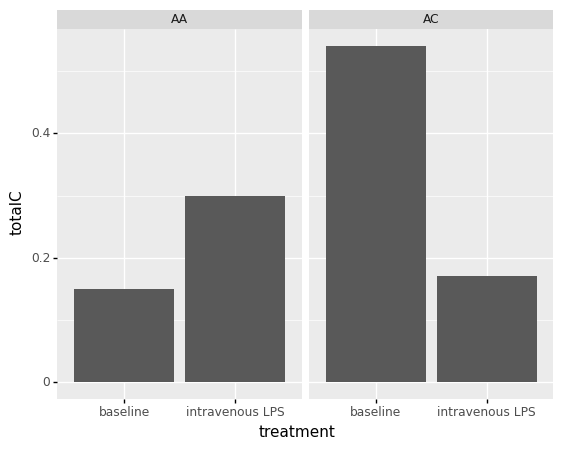
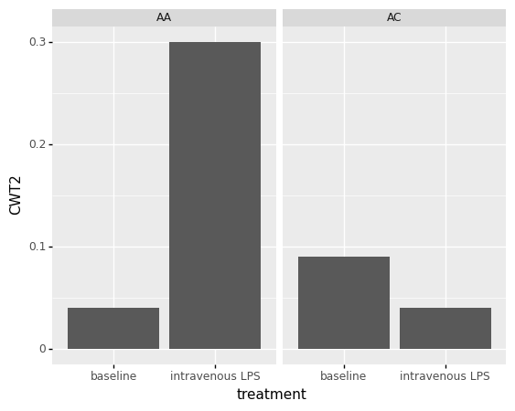
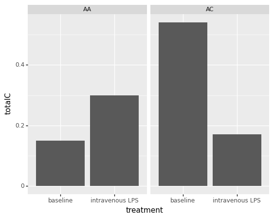
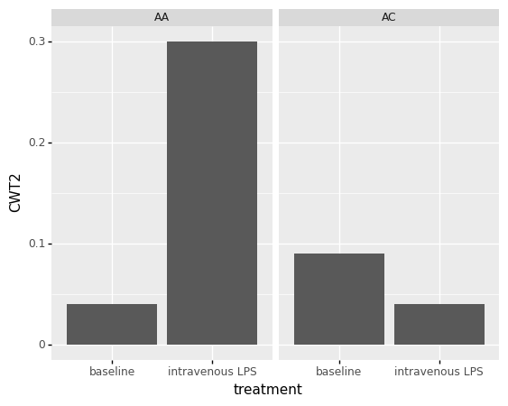
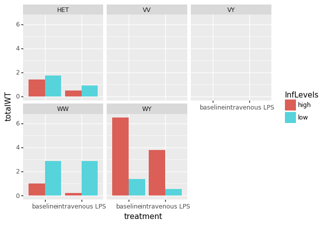
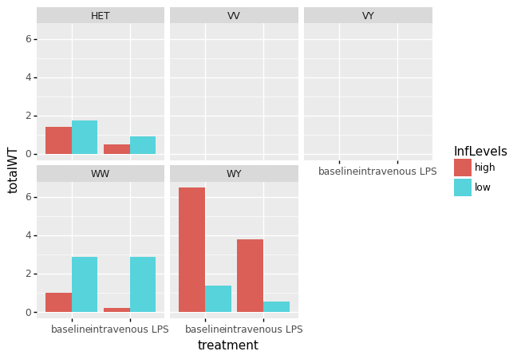

Statistics & Data Analysis¶
Req¶
Import Requirements¶
HTML formatting¶
from IPython.display import HTML
HTML("""<style type="text/css">
table.dataframe td, table.dataframe th {
max-width: none;
</style>
""")
HTML("""<style type="text/css">
table.dataframe td, table.dataframe th {
max-width: none;
white-space: normal;
}
</style>
""")
HTML("""<style type="text/css">
table.dataframe td, table.dataframe th {
max-width: none;
white-space: normal;
line-height: normal;
}
</style>
""")
HTML("""<style type="text/css">
table.dataframe td, table.dataframe th {
max-width: none;
white-space: normal;
line-height: normal;
padding: 0.3em 0.5em;
}
</style>
import sys
!{sys.executable} -m pip install numpy
""")
import sys
!{sys.executable} -m pip install numpy pandas scipy matplotlib plotnine scikit_posthocs sklearn pingouin openpyxl
import numpy as np
import pandas as pd
import scipy
import matplotlib.pyplot as plt
from pandas.api.types import CategoricalDtype
from plotnine import *
from scipy.stats import *
import scikit_posthocs as sp
import pingouin as pg
data = pd.read_csv("./NewCols.csv")
data['sv'] = np.where( (data['finalGroup']=='VV') | (data['finalGroup']=='WW')| (data['finalGroup']=='HET'), 'AC', 'AA')
data["AbyC"]= data["totalA"]/data["totalC"]
data["CbyA"]= data["totalC"]/data["totalA"]
data
Requirement already satisfied: numpy in /opt/hostedtoolcache/Python/3.8.9/x64/lib/python3.8/site-packages (1.20.2)
Requirement already satisfied: pandas in /opt/hostedtoolcache/Python/3.8.9/x64/lib/python3.8/site-packages (1.2.4)
Requirement already satisfied: scipy in /opt/hostedtoolcache/Python/3.8.9/x64/lib/python3.8/site-packages (1.6.2)
Requirement already satisfied: matplotlib in /opt/hostedtoolcache/Python/3.8.9/x64/lib/python3.8/site-packages (3.4.1)
Requirement already satisfied: plotnine in /opt/hostedtoolcache/Python/3.8.9/x64/lib/python3.8/site-packages (0.8.0)
Requirement already satisfied: scikit_posthocs in /opt/hostedtoolcache/Python/3.8.9/x64/lib/python3.8/site-packages (0.6.7)
Requirement already satisfied: sklearn in /opt/hostedtoolcache/Python/3.8.9/x64/lib/python3.8/site-packages (0.0)
Requirement already satisfied: pingouin in /opt/hostedtoolcache/Python/3.8.9/x64/lib/python3.8/site-packages (0.3.11)
Requirement already satisfied: openpyxl in /opt/hostedtoolcache/Python/3.8.9/x64/lib/python3.8/site-packages (3.0.7)
Requirement already satisfied: kiwisolver>=1.0.1 in /opt/hostedtoolcache/Python/3.8.9/x64/lib/python3.8/site-packages (from matplotlib) (1.3.1)
Requirement already satisfied: pillow>=6.2.0 in /opt/hostedtoolcache/Python/3.8.9/x64/lib/python3.8/site-packages (from matplotlib) (8.2.0)
Requirement already satisfied: cycler>=0.10 in /opt/hostedtoolcache/Python/3.8.9/x64/lib/python3.8/site-packages (from matplotlib) (0.10.0)
Requirement already satisfied: python-dateutil>=2.7 in /opt/hostedtoolcache/Python/3.8.9/x64/lib/python3.8/site-packages (from matplotlib) (2.8.1)
Requirement already satisfied: pyparsing>=2.2.1 in /opt/hostedtoolcache/Python/3.8.9/x64/lib/python3.8/site-packages (from matplotlib) (2.4.7)
Requirement already satisfied: six in /opt/hostedtoolcache/Python/3.8.9/x64/lib/python3.8/site-packages (from cycler>=0.10->matplotlib) (1.15.0)
Requirement already satisfied: et-xmlfile in /opt/hostedtoolcache/Python/3.8.9/x64/lib/python3.8/site-packages (from openpyxl) (1.0.1)
Requirement already satisfied: pytz>=2017.3 in /opt/hostedtoolcache/Python/3.8.9/x64/lib/python3.8/site-packages (from pandas) (2021.1)
Requirement already satisfied: scikit-learn in /opt/hostedtoolcache/Python/3.8.9/x64/lib/python3.8/site-packages (from pingouin) (0.24.1)
Requirement already satisfied: outdated in /opt/hostedtoolcache/Python/3.8.9/x64/lib/python3.8/site-packages (from pingouin) (0.2.1)
Requirement already satisfied: seaborn>=0.9.0 in /opt/hostedtoolcache/Python/3.8.9/x64/lib/python3.8/site-packages (from pingouin) (0.11.1)
Requirement already satisfied: tabulate in /opt/hostedtoolcache/Python/3.8.9/x64/lib/python3.8/site-packages (from pingouin) (0.8.9)
Requirement already satisfied: pandas-flavor>=0.1.2 in /opt/hostedtoolcache/Python/3.8.9/x64/lib/python3.8/site-packages (from pingouin) (0.2.0)
Requirement already satisfied: statsmodels>=0.10.0 in /opt/hostedtoolcache/Python/3.8.9/x64/lib/python3.8/site-packages (from pingouin) (0.12.2)
Requirement already satisfied: xarray in /opt/hostedtoolcache/Python/3.8.9/x64/lib/python3.8/site-packages (from pandas-flavor>=0.1.2->pingouin) (0.17.0)
Requirement already satisfied: patsy>=0.5 in /opt/hostedtoolcache/Python/3.8.9/x64/lib/python3.8/site-packages (from statsmodels>=0.10.0->pingouin) (0.5.1)
Requirement already satisfied: descartes>=1.1.0 in /opt/hostedtoolcache/Python/3.8.9/x64/lib/python3.8/site-packages (from plotnine) (1.1.0)
Requirement already satisfied: mizani>=0.7.3 in /opt/hostedtoolcache/Python/3.8.9/x64/lib/python3.8/site-packages (from plotnine) (0.7.3)
Requirement already satisfied: palettable in /opt/hostedtoolcache/Python/3.8.9/x64/lib/python3.8/site-packages (from mizani>=0.7.3->plotnine) (3.3.0)
Requirement already satisfied: requests in /opt/hostedtoolcache/Python/3.8.9/x64/lib/python3.8/site-packages (from outdated->pingouin) (2.25.1)
Requirement already satisfied: littleutils in /opt/hostedtoolcache/Python/3.8.9/x64/lib/python3.8/site-packages (from outdated->pingouin) (0.2.2)
Requirement already satisfied: idna<3,>=2.5 in /opt/hostedtoolcache/Python/3.8.9/x64/lib/python3.8/site-packages (from requests->outdated->pingouin) (2.10)
Requirement already satisfied: chardet<5,>=3.0.2 in /opt/hostedtoolcache/Python/3.8.9/x64/lib/python3.8/site-packages (from requests->outdated->pingouin) (4.0.0)
Requirement already satisfied: urllib3<1.27,>=1.21.1 in /opt/hostedtoolcache/Python/3.8.9/x64/lib/python3.8/site-packages (from requests->outdated->pingouin) (1.26.4)
Requirement already satisfied: certifi>=2017.4.17 in /opt/hostedtoolcache/Python/3.8.9/x64/lib/python3.8/site-packages (from requests->outdated->pingouin) (2020.12.5)
Requirement already satisfied: threadpoolctl>=2.0.0 in /opt/hostedtoolcache/Python/3.8.9/x64/lib/python3.8/site-packages (from scikit-learn->pingouin) (2.1.0)
Requirement already satisfied: joblib>=0.11 in /opt/hostedtoolcache/Python/3.8.9/x64/lib/python3.8/site-packages (from scikit-learn->pingouin) (1.0.1)
Requirement already satisfied: setuptools>=40.4 in /opt/hostedtoolcache/Python/3.8.9/x64/lib/python3.8/site-packages (from xarray->pandas-flavor>=0.1.2->pingouin) (49.2.1)
| Sheet # | Run | BioSample | Bases | Bytes | Experiment | GEO_Accession | inflammatory_response | race | Sample Name | ... | tret | InfLevels | testGroup | spliceVariant | mutant | tg2 | finalGroup | sv | AbyC | CbyA | |
|---|---|---|---|---|---|---|---|---|---|---|---|---|---|---|---|---|---|---|---|---|---|
| 0 | 1 | SRR4292082 | SAMN05806811 | 46.47 G | 28.49 Gb | SRX2187576 | GSM2326887 | 1 | African American | GSM2326887 | ... | 0 | high | A-Var/C-Var | A/C | VAR | A-Var/C-Var | VV | AC | 22.796296 | 0.043867 |
| 1 | 2 | SRR4292083 | SAMN05806810 | 46.49 G | 28.50 Gb | SRX2187577 | GSM2326888 | 1 | Caucasian | GSM2326888 | ... | 0 | high | A-Var/C-Var | A/C | VAR | A-Var/C-Var | VY | AA | 134.666667 | 0.007426 |
| 2 | 3 | SRR4292084 | SAMN05806809 | 36.42 G | 22.36 Gb | SRX2187578 | GSM2326889 | 1 | Caucasian | GSM2326889 | ... | 0 | high | AWT | A | WT | AWT | WY | AA | inf | 0.000000 |
| 3 | 4 | SRR4292085 | SAMN05806838 | 31.91 G | 19.56 Gb | SRX2187579 | GSM2326890 | 1 | Caucasian | GSM2326890 | ... | 0 | high | error | A/C | WT/VAR | Error | VY | AA | 129.833333 | 0.007702 |
| 4 | 5 | SRR4292086 | SAMN05806837 | 24.89 G | 16.09 Gb | SRX2187580 | GSM2326891 | 1 | Caucasian | GSM2326891 | ... | 0 | high | AWT | A | WT | AWT | WY | AA | inf | 0.000000 |
| 5 | 6 | SRR4292087 | SAMN05806836 | 26.68 G | 17.23 Gb | SRX2187581 | GSM2326892 | 1 | African American | GSM2326892 | ... | 0 | high | error | A/C | WT/VAR | Error | HET | AC | 48.833333 | 0.020478 |
| 6 | 7 | SRR4292088 | SAMN05806835 | 29.64 G | 19.16 Gb | SRX2187582 | GSM2326893 | -1 | Caucasian | GSM2326893 | ... | 0 | low | A-Var/C-Var | A/C | VAR | A-Var/C-Var | VY | AA | 33.733333 | 0.029644 |
| 7 | 8 | SRR4292089 | SAMN05806834 | 34.45 G | 22.25 Gb | SRX2187583 | GSM2326894 | -1 | Caucasian | GSM2326894 | ... | 0 | low | error | A/C | WT/VAR | Error | HET | AC | 48.125000 | 0.020779 |
| 8 | 9 | SRR4292090 | SAMN05806833 | 26.24 G | 16.92 Gb | SRX2187584 | GSM2326895 | -1 | Caucasian | GSM2326895 | ... | 0 | low | A-WT/C-WT | A/C | WT | A-WT/C-WT | WW | AC | 30.888889 | 0.032374 |
| 9 | 10 | SRR4292091 | SAMN05806832 | 12.65 G | 7.57 Gb | SRX2187585 | GSM2326896 | 1 | Caucasian | GSM2326896 | ... | 0 | high | error | A/C | WT/VAR | Error | HET | AC | 9.909091 | 0.100917 |
| 10 | 11 | SRR4292092 | SAMN05806831 | 10.94 G | 6.51 Gb | SRX2187586 | GSM2326897 | 1 | African American | GSM2326897 | ... | 0 | high | A-WT/C-WT | A/C | WT | A-WT/C-WT | WW | AC | 49.500000 | 0.020202 |
| 11 | 12 | SRR4292093 | SAMN05806830 | 5.33 G | 3.11 Gb | SRX2187587 | GSM2326898 | -1 | African American | GSM2326898 | ... | 0 | low | AWT | A | WT | AWT | WY | AA | inf | 0.000000 |
| 12 | 13 | SRR4292094 | SAMN05806829 | 11.00 G | 6.56 Gb | SRX2187588 | GSM2326899 | -1 | African American | GSM2326899 | ... | 0 | low | A-WT/C-WT | A/C | WT | A-WT/C-WT | WY | AA | 33.250000 | 0.030075 |
| 13 | 14 | SRR4292095 | SAMN05806828 | 9.02 G | 5.32 Gb | SRX2187589 | GSM2326900 | -1 | Caucasian | GSM2326900 | ... | 0 | low | A-WT/C-WT | A/C | WT | A-WT/C-WT | WY | AA | 48.500000 | 0.020619 |
| 14 | 15 | SRR4292096 | SAMN05806827 | 7.76 G | 4.94 Gb | SRX2187590 | GSM2326901 | -1 | African American | GSM2326901 | ... | 0 | low | error | A/C | WT/VAR | Error | HET | AC | 33.000000 | 0.030303 |
| 15 | 16 | SRR4292097 | SAMN05806826 | 56.30 G | 34.32 Gb | SRX2187591 | GSM2326902 | 1 | African American | GSM2326902 | ... | 1 | high | A-Var/C-Var | A/C | VAR | A-Var/C-Var | VV | AC | 230.500000 | 0.004338 |
| 16 | 17 | SRR4292098 | SAMN05806825 | 55.41 G | 33.89 Gb | SRX2187592 | GSM2326903 | 1 | Caucasian | GSM2326903 | ... | 1 | high | AVAR | A | VAR | AVAR | VY | AA | inf | 0.000000 |
| 17 | 18 | SRR4292099 | SAMN05806824 | 47.95 G | 29.16 Gb | SRX2187593 | GSM2326904 | 1 | Caucasian | GSM2326904 | ... | 1 | high | A-WT/C-WT | A/C | WT | A-WT/C-WT | WY | AA | 11.700000 | 0.085470 |
| 18 | 19 | SRR4292100 | SAMN05806823 | 47.04 G | 28.94 Gb | SRX2187594 | GSM2326905 | 1 | Caucasian | GSM2326905 | ... | 1 | high | error | A/C | WT/VAR | Error | VY | AA | 63.076923 | 0.015854 |
| 19 | 20 | SRR4292101 | SAMN05806822 | 25.25 G | 16.33 Gb | SRX2187595 | GSM2326906 | 1 | Caucasian | GSM2326906 | ... | 1 | high | A-WT/C-WT | A/C | WT | A-WT/C-WT | WY | AA | 19.333333 | 0.051724 |
| 20 | 21 | SRR4292102 | SAMN05806821 | 27.70 G | 17.89 Gb | SRX2187596 | GSM2326907 | 1 | African American | GSM2326907 | ... | 1 | high | error | A/C | WT/VAR | Error | HET | AC | 22.500000 | 0.044444 |
| 21 | 22 | SRR4292103 | SAMN05806820 | 17.58 G | 11.40 Gb | SRX2187597 | GSM2326908 | -1 | Caucasian | GSM2326908 | ... | 1 | low | A-Var/C-Var | A/C | VAR | A-Var/C-Var | VY | AA | 58.000000 | 0.017241 |
| 22 | 23 | SRR4292104 | SAMN05806819 | 25.12 G | 16.21 Gb | SRX2187598 | GSM2326909 | -1 | Caucasian | GSM2326909 | ... | 1 | low | error | A/C | WT/VAR | Error | HET | AC | 14.647059 | 0.068273 |
| 23 | 24 | SRR4292105 | SAMN05806818 | 26.42 G | 17.05 Gb | SRX2187599 | GSM2326910 | -1 | Caucasian | GSM2326910 | ... | 1 | low | A-WT/C-WT | A/C | WT | A-WT/C-WT | WW | AC | 143.000000 | 0.006993 |
| 24 | 25 | SRR4292106 | SAMN05806817 | 9.88 G | 5.85 Gb | SRX2187600 | GSM2326911 | 1 | Caucasian | GSM2326911 | ... | 1 | high | error | A/C | WT/VAR | A-Var/C-WT | HET | AC | 23.500000 | 0.042553 |
| 25 | 26 | SRR4292107 | SAMN05806816 | 6.14 G | 3.59 Gb | SRX2187601 | GSM2326912 | 1 | African American | GSM2326912 | ... | 1 | high | A-WT/C-WT | A/C | WT | A-WT/C-WT | WW | AC | 4.750000 | 0.210526 |
| 26 | 27 | SRR4292108 | SAMN05806815 | 9.42 G | 5.60 Gb | SRX2187602 | GSM2326913 | -1 | African American | GSM2326913 | ... | 1 | low | AWT | A | WT | AWT | WY | AA | inf | 0.000000 |
| 27 | 28 | SRR4292109 | SAMN05806814 | 7.90 G | 4.72 Gb | SRX2187603 | GSM2326914 | -1 | African American | GSM2326914 | ... | 1 | low | AWT | A | WT | AWT | WY | AA | inf | 0.000000 |
| 28 | 29 | SRR4292110 | SAMN05806813 | 11.19 G | 6.65 Gb | SRX2187604 | GSM2326915 | -1 | Caucasian | GSM2326915 | ... | 1 | low | AWT | A | WT | AWT | WY | AA | inf | 0.000000 |
| 29 | 30 | SRR4292111 | SAMN05806812 | 6.61 G | 4.20 Gb | SRX2187605 | GSM2326916 | -1 | African American | GSM2326916 | ... | 1 | low | error | A/C | WT/VAR | Error | HET | AC | 15.500000 | 0.064516 |
30 rows × 36 columns
Calculating the differences between the noremalized values.¶
data_control = data[data["treatment"] == "baseline"]
data_control.to_csv("./control.csv")
data_treatment = data[data["treatment"] == "intravenous LPS"]
data_treatment.to_csv("./lps.csv")
procData = data_treatment
procData['diff_AVAR2'] = (
np.array(data_treatment["AVAR2"]) - np.array(data_control["AVAR2"])).tolist()
procData["diff_CVAR2"] = (
np.array(data_treatment["CVAR2"]) - np.array(data_control["CVAR2"])).tolist()
procData["diff_AWT2"] = (np.array(data_treatment["AWT2"]) -
np.array(data_control["AWT2"])).tolist()
procData["diff_CWT2"] = (np.array(data_treatment["CWT2"]) -
np.array(data_control["CWT2"])).tolist()
procData["diff_total2"] = (
np.array(data_treatment["total2"]) - np.array(data_control["total2"])).tolist()
procData["diff_totalA"] = (
np.array(data_treatment["totalA"]) - np.array(data_control["totalA"])).tolist()
procData["diff_totalC"] = (
np.array(data_treatment["totalC"]) - np.array(data_control["totalC"])).tolist()
procData["diff_totalWT"] = (np.array(
data_treatment["totalWT"]) - np.array(data_control["totalWT"])).tolist()
procData["diff_totalVar"] = (np.array(
data_treatment["totalVar"]) - np.array(data_control["totalVar"])).tolist()
procData["diff_AbyC"] = (np.array(
data_treatment["AbyC"]) - np.array(data_control["AbyC"])).tolist()
procData["diff_CbyA"] = (np.array(
data_treatment["CbyA"]) - np.array(data_control["CbyA"])).tolist()
procData
# procData.to_csv("./procData.csv")
<ipython-input-3-2ddecc540ac7>:8: SettingWithCopyWarning:
A value is trying to be set on a copy of a slice from a DataFrame.
Try using .loc[row_indexer,col_indexer] = value instead
See the caveats in the documentation: https://pandas.pydata.org/pandas-docs/stable/user_guide/indexing.html#returning-a-view-versus-a-copy
<ipython-input-3-2ddecc540ac7>:10: SettingWithCopyWarning:
A value is trying to be set on a copy of a slice from a DataFrame.
Try using .loc[row_indexer,col_indexer] = value instead
See the caveats in the documentation: https://pandas.pydata.org/pandas-docs/stable/user_guide/indexing.html#returning-a-view-versus-a-copy
<ipython-input-3-2ddecc540ac7>:12: SettingWithCopyWarning:
A value is trying to be set on a copy of a slice from a DataFrame.
Try using .loc[row_indexer,col_indexer] = value instead
See the caveats in the documentation: https://pandas.pydata.org/pandas-docs/stable/user_guide/indexing.html#returning-a-view-versus-a-copy
<ipython-input-3-2ddecc540ac7>:14: SettingWithCopyWarning:
A value is trying to be set on a copy of a slice from a DataFrame.
Try using .loc[row_indexer,col_indexer] = value instead
See the caveats in the documentation: https://pandas.pydata.org/pandas-docs/stable/user_guide/indexing.html#returning-a-view-versus-a-copy
<ipython-input-3-2ddecc540ac7>:18: SettingWithCopyWarning:
A value is trying to be set on a copy of a slice from a DataFrame.
Try using .loc[row_indexer,col_indexer] = value instead
See the caveats in the documentation: https://pandas.pydata.org/pandas-docs/stable/user_guide/indexing.html#returning-a-view-versus-a-copy
<ipython-input-3-2ddecc540ac7>:20: SettingWithCopyWarning:
A value is trying to be set on a copy of a slice from a DataFrame.
Try using .loc[row_indexer,col_indexer] = value instead
See the caveats in the documentation: https://pandas.pydata.org/pandas-docs/stable/user_guide/indexing.html#returning-a-view-versus-a-copy
<ipython-input-3-2ddecc540ac7>:22: SettingWithCopyWarning:
A value is trying to be set on a copy of a slice from a DataFrame.
Try using .loc[row_indexer,col_indexer] = value instead
See the caveats in the documentation: https://pandas.pydata.org/pandas-docs/stable/user_guide/indexing.html#returning-a-view-versus-a-copy
<ipython-input-3-2ddecc540ac7>:24: SettingWithCopyWarning:
A value is trying to be set on a copy of a slice from a DataFrame.
Try using .loc[row_indexer,col_indexer] = value instead
See the caveats in the documentation: https://pandas.pydata.org/pandas-docs/stable/user_guide/indexing.html#returning-a-view-versus-a-copy
<ipython-input-3-2ddecc540ac7>:26: SettingWithCopyWarning:
A value is trying to be set on a copy of a slice from a DataFrame.
Try using .loc[row_indexer,col_indexer] = value instead
See the caveats in the documentation: https://pandas.pydata.org/pandas-docs/stable/user_guide/indexing.html#returning-a-view-versus-a-copy
<ipython-input-3-2ddecc540ac7>:29: RuntimeWarning: invalid value encountered in subtract
<ipython-input-3-2ddecc540ac7>:29: SettingWithCopyWarning:
A value is trying to be set on a copy of a slice from a DataFrame.
Try using .loc[row_indexer,col_indexer] = value instead
See the caveats in the documentation: https://pandas.pydata.org/pandas-docs/stable/user_guide/indexing.html#returning-a-view-versus-a-copy
<ipython-input-3-2ddecc540ac7>:31: SettingWithCopyWarning:
A value is trying to be set on a copy of a slice from a DataFrame.
Try using .loc[row_indexer,col_indexer] = value instead
See the caveats in the documentation: https://pandas.pydata.org/pandas-docs/stable/user_guide/indexing.html#returning-a-view-versus-a-copy
| Sheet # | Run | BioSample | Bases | Bytes | Experiment | GEO_Accession | inflammatory_response | race | Sample Name | ... | diff_CVAR2 | diff_AWT2 | diff_CWT2 | diff_total2 | diff_totalA | diff_totalC | diff_totalWT | diff_totalVar | diff_AbyC | diff_CbyA | |
|---|---|---|---|---|---|---|---|---|---|---|---|---|---|---|---|---|---|---|---|---|---|
| 15 | 16 | SRR4292097 | SAMN05806826 | 56.30 G | 34.32 Gb | SRX2187591 | GSM2326902 | 1 | African American | GSM2326902 | ... | -0.52 | 0.00 | 0.00 | -8.22 | -7.70 | -0.52 | 0.00 | -8.22 | 207.703704 | -0.039528 |
| 16 | 17 | SRR4292098 | SAMN05806825 | 55.41 G | 33.89 Gb | SRX2187592 | GSM2326903 | 1 | Caucasian | GSM2326903 | ... | -0.09 | 0.00 | 0.00 | 0.74 | 0.83 | -0.09 | 0.00 | 0.74 | inf | -0.007426 |
| 17 | 18 | SRR4292099 | SAMN05806824 | 47.95 G | 29.16 Gb | SRX2187593 | GSM2326904 | 1 | Caucasian | GSM2326904 | ... | 0.00 | -2.97 | 0.30 | -2.67 | -2.97 | 0.30 | -2.67 | 0.00 | -inf | 0.085470 |
| 18 | 19 | SRR4292100 | SAMN05806823 | 47.04 G | 28.94 Gb | SRX2187594 | GSM2326905 | 1 | Caucasian | GSM2326905 | ... | 0.07 | 0.00 | 0.00 | 0.48 | 0.41 | 0.07 | 0.00 | 0.48 | -66.756410 | 0.008151 |
| 19 | 20 | SRR4292101 | SAMN05806822 | 25.25 G | 16.33 Gb | SRX2187595 | GSM2326906 | 1 | Caucasian | GSM2326906 | ... | 0.00 | -1.83 | 0.09 | -1.74 | -1.83 | 0.09 | -1.74 | 0.00 | -inf | 0.051724 |
| 20 | 21 | SRR4292102 | SAMN05806821 | 27.70 G | 17.89 Gb | SRX2187596 | GSM2326907 | 1 | African American | GSM2326907 | ... | -0.02 | -0.93 | 0.02 | -1.58 | -1.58 | 0.00 | -0.91 | -0.67 | -26.333333 | 0.023967 |
| 21 | 22 | SRR4292103 | SAMN05806820 | 17.58 G | 11.40 Gb | SRX2187597 | GSM2326908 | -1 | Caucasian | GSM2326908 | ... | -0.11 | 0.00 | 0.00 | -2.85 | -2.74 | -0.11 | 0.00 | -2.85 | 24.266667 | -0.012403 |
| 22 | 23 | SRR4292104 | SAMN05806819 | 25.12 G | 16.21 Gb | SRX2187598 | GSM2326909 | -1 | Caucasian | GSM2326909 | ... | 0.11 | -0.82 | -0.02 | -1.27 | -1.36 | 0.09 | -0.84 | -0.43 | -33.477941 | 0.047494 |
| 23 | 24 | SRR4292105 | SAMN05806818 | 26.42 G | 17.05 Gb | SRX2187599 | GSM2326910 | -1 | Caucasian | GSM2326910 | ... | 0.00 | 0.08 | -0.07 | 0.01 | 0.08 | -0.07 | 0.01 | 0.00 | 112.111111 | -0.025381 |
| 24 | 25 | SRR4292106 | SAMN05806817 | 9.88 G | 5.85 Gb | SRX2187600 | GSM2326911 | 1 | Caucasian | GSM2326911 | ... | -0.11 | -0.62 | 0.02 | -0.71 | -0.62 | -0.09 | -0.60 | -0.11 | 13.590909 | -0.058364 |
| 25 | 26 | SRR4292107 | SAMN05806816 | 6.14 G | 3.59 Gb | SRX2187601 | GSM2326912 | 1 | African American | GSM2326912 | ... | 0.00 | -0.80 | 0.02 | -0.78 | -0.80 | 0.02 | -0.78 | 0.00 | -44.750000 | 0.190324 |
| 26 | 27 | SRR4292108 | SAMN05806815 | 9.42 G | 5.60 Gb | SRX2187602 | GSM2326913 | -1 | African American | GSM2326913 | ... | 0.00 | -0.30 | 0.00 | -0.30 | -0.30 | 0.00 | -0.30 | 0.00 | NaN | 0.000000 |
| 27 | 28 | SRR4292109 | SAMN05806814 | 7.90 G | 4.72 Gb | SRX2187603 | GSM2326914 | -1 | African American | GSM2326914 | ... | 0.00 | -0.86 | -0.04 | -0.90 | -0.86 | -0.04 | -0.90 | 0.00 | inf | -0.030075 |
| 28 | 29 | SRR4292110 | SAMN05806813 | 11.19 G | 6.65 Gb | SRX2187604 | GSM2326915 | -1 | Caucasian | GSM2326915 | ... | 0.00 | -0.41 | -0.02 | -0.43 | -0.41 | -0.02 | -0.43 | 0.00 | inf | -0.020619 |
| 29 | 30 | SRR4292111 | SAMN05806812 | 6.61 G | 4.20 Gb | SRX2187605 | GSM2326916 | -1 | African American | GSM2326916 | ... | 0.02 | 0.00 | 0.00 | -0.02 | -0.04 | 0.02 | 0.00 | -0.02 | -17.500000 | 0.034213 |
15 rows × 47 columns
data_control.describe()
| Sheet # | inflammatory_response | AWT | AVAR | CWT | CVAR | AWT2 | AVAR2 | CWT2 | CVAR2 | total2 | totalA | totalC | totalWT | totalVar | kind | tret | AbyC | CbyA | |
|---|---|---|---|---|---|---|---|---|---|---|---|---|---|---|---|---|---|---|---|
| count | 15.000000 | 15.000000 | 15.000000 | 15.000000 | 15.000000 | 15.000000 | 15.000000 | 15.000000 | 15.000000 | 15.000000 | 15.00000 | 15.000000 | 15.000000 | 15.00000 | 15.000000 | 15.000000 | 15.0 | 15.000000 | 15.000000 |
| mean | 8.000000 | 0.066667 | 64.733333 | 128.800000 | 0.733333 | 3.266667 | 1.392667 | 2.772000 | 0.015333 | 0.070000 | 4.25000 | 4.164667 | 0.085333 | 1.40800 | 2.842000 | 1.466667 | 0.0 | inf | 0.024292 |
| std | 4.472136 | 1.032796 | 81.513773 | 206.374209 | 1.162919 | 6.397172 | 1.754938 | 4.442345 | 0.025317 | 0.138358 | 4.01305 | 3.928175 | 0.133517 | 1.75996 | 4.543512 | 0.516398 | 0.0 | NaN | 0.025079 |
| min | 1.000000 | -1.000000 | 0.000000 | 0.000000 | 0.000000 | 0.000000 | 0.000000 | 0.000000 | 0.000000 | 0.000000 | 0.54000 | 0.540000 | 0.000000 | 0.00000 | 0.000000 | 1.000000 | 0.0 | 9.909091 | 0.000000 |
| 25% | 4.500000 | -1.000000 | 5.000000 | 0.000000 | 0.000000 | 0.000000 | 0.105000 | 0.000000 | 0.000000 | 0.000000 | 1.10500 | 1.040000 | 0.020000 | 0.10500 | 0.000000 | 1.000000 | 0.0 | 33.125000 | 0.007564 |
| 50% | 8.000000 | 1.000000 | 45.000000 | 9.000000 | 0.000000 | 1.000000 | 0.970000 | 0.190000 | 0.000000 | 0.020000 | 2.99000 | 2.930000 | 0.060000 | 0.99000 | 0.300000 | 1.000000 | 0.0 | 48.500000 | 0.020619 |
| 75% | 11.500000 | 1.000000 | 72.500000 | 167.000000 | 1.000000 | 3.500000 | 1.560000 | 3.595000 | 0.020000 | 0.075000 | 5.84500 | 5.770000 | 0.090000 | 1.59000 | 3.690000 | 2.000000 | 0.0 | 132.250000 | 0.030189 |
| max | 15.000000 | 1.000000 | 301.000000 | 572.000000 | 4.000000 | 25.000000 | 6.480000 | 12.310000 | 0.090000 | 0.540000 | 12.85000 | 12.310000 | 0.540000 | 6.48000 | 12.850000 | 2.000000 | 0.0 | inf | 0.100917 |
data_treatment["total2"].describe()
count 15.000000
mean 2.900667
std 3.529809
min 0.230000
25% 0.525000
50% 1.830000
75% 3.345000
max 12.950000
Name: total2, dtype: float64
data_treatment["totalA"].describe()
count 15.000000
mean 2.838667
std 3.520247
min 0.190000
25% 0.515000
50% 1.740000
75% 3.185000
max 12.950000
Name: totalA, dtype: float64
data_control["totalA"].describe()
count 15.000000
mean 4.164667
std 3.928175
min 0.540000
25% 1.040000
50% 2.930000
75% 5.770000
max 12.310000
Name: totalA, dtype: float64
data_treatment["totalC"].describe()
count 15.000000
mean 0.062000
std 0.082739
min 0.000000
25% 0.010000
50% 0.040000
75% 0.075000
max 0.300000
Name: totalC, dtype: float64
data_control["totalC"].describe()
count 15.000000
mean 0.085333
std 0.133517
min 0.000000
25% 0.020000
50% 0.060000
75% 0.090000
max 0.540000
Name: totalC, dtype: float64
newDF= data["spliceVariant"]
newDF
0 A/C
1 A/C
2 A
3 A/C
4 A
5 A/C
6 A/C
7 A/C
8 A/C
9 A/C
10 A/C
11 A
12 A/C
13 A/C
14 A/C
15 A/C
16 A
17 A/C
18 A/C
19 A/C
20 A/C
21 A/C
22 A/C
23 A/C
24 A/C
25 A/C
26 A
27 A
28 A
29 A/C
Name: spliceVariant, dtype: object
# newDF.rename(columns = {'spliceVariant':'c_SpliceV'}, inplace=True)
newDF
0 A/C
1 A/C
2 A
3 A/C
4 A
5 A/C
6 A/C
7 A/C
8 A/C
9 A/C
10 A/C
11 A
12 A/C
13 A/C
14 A/C
15 A/C
16 A
17 A/C
18 A/C
19 A/C
20 A/C
21 A/C
22 A/C
23 A/C
24 A/C
25 A/C
26 A
27 A
28 A
29 A/C
Name: spliceVariant, dtype: object
# newDF.index = procData.index
# procData= pd.concat([procData,newDF], axis=1)
print( data_control[ (data_control["sex"] == "male") & (data_control["finalGroup"] == "VV")]["BioSample"])
print( data_treatment[ (data_treatment["sex"] == "male") & (data_treatment["finalGroup"] == "VV")]["BioSample"])
print( data_control[ (data_control["sex"] == "female") & (data_control["finalGroup"] == "VV")].count())
Series([], Name: BioSample, dtype: object)
Series([], Name: BioSample, dtype: object)
Sheet # 1
Run 1
BioSample 1
Bases 1
Bytes 1
Experiment 1
GEO_Accession 1
inflammatory_response 1
race 1
Sample Name 1
sex 1
treatment 1
AWT 1
AVAR 1
CWT 1
CVAR 1
AWT2 1
AVAR2 1
CWT2 1
CVAR2 1
total2 1
totalA 1
totalC 1
totalWT 1
totalVar 1
kind 1
tret 1
InfLevels 1
testGroup 1
spliceVariant 1
mutant 1
tg2 1
finalGroup 1
sv 1
AbyC 1
CbyA 1
dtype: int64
data_control[ (data_control["sex"] == "male") & (data_control["finalGroup"] == "VV")]["BioSample"]
Series([], Name: BioSample, dtype: object)
Difference Table¶
pd.set_option('display.max_rows', procData.shape[0]+1)
diff_data = procData.loc[ :,"diff_AVAR2":"diff_CbyA" ]
diff_data["InfLevels"] = data_treatment["InfLevels"]
diff_data.to_csv("./diffData.csv")
diff_data.describe()
| diff_AVAR2 | diff_CVAR2 | diff_AWT2 | diff_CWT2 | diff_total2 | diff_totalA | diff_totalC | diff_totalWT | diff_totalVar | diff_AbyC | diff_CbyA | |
|---|---|---|---|---|---|---|---|---|---|---|---|
| count | 15.000000 | 15.000000 | 15.000000 | 15.000000 | 15.000000 | 15.000000 | 15.000000 | 15.000000 | 15.000000 | 14.000000 | 15.000000 |
| mean | -0.695333 | -0.043333 | -0.630667 | 0.020000 | -1.349333 | -1.326000 | -0.023333 | -0.610667 | -0.738667 | NaN | 0.016503 |
| std | 2.089395 | 0.144502 | 0.835357 | 0.084769 | 2.165016 | 2.067199 | 0.170992 | 0.762978 | 2.218925 | NaN | 0.061724 |
| min | -7.700000 | -0.520000 | -2.970000 | -0.070000 | -8.220000 | -7.700000 | -0.520000 | -2.670000 | -8.220000 | -inf | -0.058364 |
| 25% | -0.290000 | -0.055000 | -0.840000 | -0.010000 | -1.660000 | -1.705000 | -0.080000 | -0.870000 | -0.270000 | -41.931985 | -0.023000 |
| 50% | 0.000000 | 0.000000 | -0.410000 | 0.000000 | -0.780000 | -0.800000 | 0.000000 | -0.430000 | 0.000000 | -1.954545 | 0.000000 |
| 75% | 0.000000 | 0.000000 | 0.000000 | 0.020000 | -0.160000 | -0.170000 | 0.045000 | 0.000000 | 0.000000 | 183.805556 | 0.040853 |
| max | 0.830000 | 0.110000 | 0.080000 | 0.300000 | 0.740000 | 0.830000 | 0.300000 | 0.010000 | 0.740000 | inf | 0.190324 |
diff_data.var()
diff_AVAR2 4.365570
diff_CVAR2 0.020881
diff_AWT2 0.697821
diff_CWT2 0.007186
diff_total2 4.687292
diff_totalA 4.273311
diff_totalC 0.029238
diff_totalWT 0.582135
diff_totalVar 4.923627
diff_AbyC NaN
diff_CbyA 0.003810
dtype: float64
diff_data.std()
diff_AVAR2 2.089395
diff_CVAR2 0.144502
diff_AWT2 0.835357
diff_CWT2 0.084769
diff_total2 2.165016
diff_totalA 2.067199
diff_totalC 0.170992
diff_totalWT 0.762978
diff_totalVar 2.218925
diff_AbyC NaN
diff_CbyA 0.061724
dtype: float64
diff_data.skew()
diff_AVAR2 -3.111514
diff_CVAR2 -2.816163
diff_AWT2 -1.826353
diff_CWT2 2.864955
diff_total2 -2.497520
diff_totalA -2.274328
diff_totalC -1.420225
diff_totalWT -1.638127
diff_totalVar -3.165627
diff_AbyC NaN
diff_CbyA 1.680591
dtype: float64
diff_data.kurtosis().tolist()
[10.264406796877637,
9.444362749191729,
3.6982075152203597,
9.543320897371544,
7.61247279274705,
6.469933856117286,
5.523875299227822,
2.873242267200818,
10.564445597026406,
nan,
3.7269755593198353]
diff_data.kurtosis()
diff_AVAR2 10.264407
diff_CVAR2 9.444363
diff_AWT2 3.698208
diff_CWT2 9.543321
diff_total2 7.612473
diff_totalA 6.469934
diff_totalC 5.523875
diff_totalWT 2.873242
diff_totalVar 10.564446
diff_AbyC NaN
diff_CbyA 3.726976
dtype: float64
Graph Data -¶
from plotnine import *
ggplot(data, aes(x='treatment', y='AWT2') ) + geom_boxplot() + geom_jitter(data,aes(colour='treatment',shape='treatment'))
<ggplot: (8753780919540)>
a = 0.05
wilcoxon(data_control["AWT2"],data_treatment["AWT2"])
/opt/hostedtoolcache/Python/3.8.9/x64/lib/python3.8/site-packages/scipy/stats/morestats.py:2967: UserWarning: Exact p-value calculation does not work if there are ties. Switching to normal approximation.
WilcoxonResult(statistic=1.0, pvalue=0.0069104298078147995)
ggplot(data, aes(x='treatment', y='CWT2') ) + geom_boxplot() + geom_jitter(data,aes(colour='treatment',shape='treatment'))
<ggplot: (8753712714117)>
a = 0.05
wilcoxon(data_control["CWT2"],data_treatment["CWT2"])
/opt/hostedtoolcache/Python/3.8.9/x64/lib/python3.8/site-packages/scipy/stats/morestats.py:2967: UserWarning: Exact p-value calculation does not work if there are ties. Switching to normal approximation.
/opt/hostedtoolcache/Python/3.8.9/x64/lib/python3.8/site-packages/scipy/stats/morestats.py:2981: UserWarning: Sample size too small for normal approximation.
WilcoxonResult(statistic=19.0, pvalue=0.6729404357300602)
ggplot(data, aes(x='treatment', y='AVAR2') ) + geom_boxplot() + geom_jitter(data,aes(colour='treatment',shape='treatment'))
<ggplot: (8753710527154)>
a = 0.05
wilcoxon(data_control["AVAR2"],data_treatment["AVAR2"])
/opt/hostedtoolcache/Python/3.8.9/x64/lib/python3.8/site-packages/scipy/stats/morestats.py:2967: UserWarning: Exact p-value calculation does not work if there are ties. Switching to normal approximation.
/opt/hostedtoolcache/Python/3.8.9/x64/lib/python3.8/site-packages/scipy/stats/morestats.py:2981: UserWarning: Sample size too small for normal approximation.
WilcoxonResult(statistic=7.0, pvalue=0.23672357063785732)
ggplot(data, aes(x='treatment', y='CVAR2') ) + geom_boxplot() + geom_jitter(data,aes(colour='treatment',shape='treatment'))
<ggplot: (8753710487833)>
a = 0.05
wilcoxon(data_control["CVAR2"]*1000,data_treatment["CVAR2"]*1000)
/opt/hostedtoolcache/Python/3.8.9/x64/lib/python3.8/site-packages/scipy/stats/morestats.py:2967: UserWarning: Exact p-value calculation does not work if there are ties. Switching to normal approximation.
/opt/hostedtoolcache/Python/3.8.9/x64/lib/python3.8/site-packages/scipy/stats/morestats.py:2981: UserWarning: Sample size too small for normal approximation.
WilcoxonResult(statistic=10.5, pvalue=0.29064627408073007)
data_plot = data_treatment
controlData = data_control['total2']
controlData
data_plot["ctrl_total2"]=controlData.to_list()
data_plot["ctrl_totalC"]=data_control['totalC'].to_list()
data_plot["ctrl_totalA"]=data_control['totalA'].to_list()
data_plot
<ipython-input-30-3e0b5f744490>:4: SettingWithCopyWarning:
A value is trying to be set on a copy of a slice from a DataFrame.
Try using .loc[row_indexer,col_indexer] = value instead
See the caveats in the documentation: https://pandas.pydata.org/pandas-docs/stable/user_guide/indexing.html#returning-a-view-versus-a-copy
<ipython-input-30-3e0b5f744490>:5: SettingWithCopyWarning:
A value is trying to be set on a copy of a slice from a DataFrame.
Try using .loc[row_indexer,col_indexer] = value instead
See the caveats in the documentation: https://pandas.pydata.org/pandas-docs/stable/user_guide/indexing.html#returning-a-view-versus-a-copy
<ipython-input-30-3e0b5f744490>:6: SettingWithCopyWarning:
A value is trying to be set on a copy of a slice from a DataFrame.
Try using .loc[row_indexer,col_indexer] = value instead
See the caveats in the documentation: https://pandas.pydata.org/pandas-docs/stable/user_guide/indexing.html#returning-a-view-versus-a-copy
| Sheet # | Run | BioSample | Bases | Bytes | Experiment | GEO_Accession | inflammatory_response | race | Sample Name | ... | diff_total2 | diff_totalA | diff_totalC | diff_totalWT | diff_totalVar | diff_AbyC | diff_CbyA | ctrl_total2 | ctrl_totalC | ctrl_totalA | |
|---|---|---|---|---|---|---|---|---|---|---|---|---|---|---|---|---|---|---|---|---|---|
| 15 | 16 | SRR4292097 | SAMN05806826 | 56.30 G | 34.32 Gb | SRX2187591 | GSM2326902 | 1 | African American | GSM2326902 | ... | -8.22 | -7.70 | -0.52 | 0.00 | -8.22 | 207.703704 | -0.039528 | 12.85 | 0.54 | 12.31 |
| 16 | 17 | SRR4292098 | SAMN05806825 | 55.41 G | 33.89 Gb | SRX2187592 | GSM2326903 | 1 | Caucasian | GSM2326903 | ... | 0.74 | 0.83 | -0.09 | 0.00 | 0.74 | inf | -0.007426 | 12.21 | 0.09 | 12.12 |
| 17 | 18 | SRR4292099 | SAMN05806824 | 47.95 G | 29.16 Gb | SRX2187593 | GSM2326904 | 1 | Caucasian | GSM2326904 | ... | -2.67 | -2.97 | 0.30 | -2.67 | 0.00 | -inf | 0.085470 | 6.48 | 0.00 | 6.48 |
| 18 | 19 | SRR4292100 | SAMN05806823 | 47.04 G | 28.94 Gb | SRX2187594 | GSM2326905 | 1 | Caucasian | GSM2326905 | ... | 0.48 | 0.41 | 0.07 | 0.00 | 0.48 | -66.756410 | 0.008151 | 7.85 | 0.06 | 7.79 |
| 19 | 20 | SRR4292101 | SAMN05806822 | 25.25 G | 16.33 Gb | SRX2187595 | GSM2326906 | 1 | Caucasian | GSM2326906 | ... | -1.74 | -1.83 | 0.09 | -1.74 | 0.00 | -inf | 0.051724 | 3.57 | 0.00 | 3.57 |
| 20 | 21 | SRR4292102 | SAMN05806821 | 27.70 G | 17.89 Gb | SRX2187596 | GSM2326907 | 1 | African American | GSM2326907 | ... | -1.58 | -1.58 | 0.00 | -0.91 | -0.67 | -26.333333 | 0.023967 | 2.99 | 0.06 | 2.93 |
| 21 | 22 | SRR4292103 | SAMN05806820 | 17.58 G | 11.40 Gb | SRX2187597 | GSM2326908 | -1 | Caucasian | GSM2326908 | ... | -2.85 | -2.74 | -0.11 | 0.00 | -2.85 | 24.266667 | -0.012403 | 5.21 | 0.15 | 5.06 |
| 22 | 23 | SRR4292104 | SAMN05806819 | 25.12 G | 16.21 Gb | SRX2187598 | GSM2326909 | -1 | Caucasian | GSM2326909 | ... | -1.27 | -1.36 | 0.09 | -0.84 | -0.43 | -33.477941 | 0.047494 | 3.93 | 0.08 | 3.85 |
| 23 | 24 | SRR4292105 | SAMN05806818 | 26.42 G | 17.05 Gb | SRX2187599 | GSM2326910 | -1 | Caucasian | GSM2326910 | ... | 0.01 | 0.08 | -0.07 | 0.01 | 0.00 | 112.111111 | -0.025381 | 2.87 | 0.09 | 2.78 |
| 24 | 25 | SRR4292106 | SAMN05806817 | 9.88 G | 5.85 Gb | SRX2187600 | GSM2326911 | 1 | Caucasian | GSM2326911 | ... | -0.71 | -0.62 | -0.09 | -0.60 | -0.11 | 13.590909 | -0.058364 | 1.20 | 0.11 | 1.09 |
| 25 | 26 | SRR4292107 | SAMN05806816 | 6.14 G | 3.59 Gb | SRX2187601 | GSM2326912 | 1 | African American | GSM2326912 | ... | -0.78 | -0.80 | 0.02 | -0.78 | 0.00 | -44.750000 | 0.190324 | 1.01 | 0.02 | 0.99 |
| 26 | 27 | SRR4292108 | SAMN05806815 | 9.42 G | 5.60 Gb | SRX2187602 | GSM2326913 | -1 | African American | GSM2326913 | ... | -0.30 | -0.30 | 0.00 | -0.30 | 0.00 | NaN | 0.000000 | 0.54 | 0.00 | 0.54 |
| 27 | 28 | SRR4292109 | SAMN05806814 | 7.90 G | 4.72 Gb | SRX2187603 | GSM2326914 | -1 | African American | GSM2326914 | ... | -0.90 | -0.86 | -0.04 | -0.90 | 0.00 | inf | -0.030075 | 1.37 | 0.04 | 1.33 |
| 28 | 29 | SRR4292110 | SAMN05806813 | 11.19 G | 6.65 Gb | SRX2187604 | GSM2326915 | -1 | Caucasian | GSM2326915 | ... | -0.43 | -0.41 | -0.02 | -0.43 | 0.00 | inf | -0.020619 | 0.99 | 0.02 | 0.97 |
| 29 | 30 | SRR4292111 | SAMN05806812 | 6.61 G | 4.20 Gb | SRX2187605 | GSM2326916 | -1 | African American | GSM2326916 | ... | -0.02 | -0.04 | 0.02 | 0.00 | -0.02 | -17.500000 | 0.034213 | 0.68 | 0.02 | 0.66 |
15 rows × 50 columns
Var¶
ggplot(data, aes(x='treatment', y='totalVar') ) + geom_boxplot() + geom_jitter(data,aes(colour='treatment',shape='treatment'))
<ggplot: (8753710480478)>
a = 0.05
wilcoxon(data_control["totalVar"],data_treatment["totalVar"])
/opt/hostedtoolcache/Python/3.8.9/x64/lib/python3.8/site-packages/scipy/stats/morestats.py:2967: UserWarning: Exact p-value calculation does not work if there are ties. Switching to normal approximation.
/opt/hostedtoolcache/Python/3.8.9/x64/lib/python3.8/site-packages/scipy/stats/morestats.py:2981: UserWarning: Sample size too small for normal approximation.
WilcoxonResult(statistic=10.0, pvalue=0.2626182904425206)
ggplot(data, aes(x='treatment', y='totalWT') ) + geom_boxplot() + geom_jitter(data,aes(colour='treatment',shape='treatment'))
<ggplot: (8753710533301)>
a = 0.05
wilcoxon(diff_data["diff_totalWT"])
/opt/hostedtoolcache/Python/3.8.9/x64/lib/python3.8/site-packages/scipy/stats/morestats.py:2967: UserWarning: Exact p-value calculation does not work if there are ties. Switching to normal approximation.
WilcoxonResult(statistic=1.0, pvalue=0.0069104298078147995)
Total2¶
print(shapiro(data_control["total2"]))
print(shapiro(data_treatment["total2"]))
ShapiroResult(statistic=0.8312229514122009, pvalue=0.009520275518298149)
ShapiroResult(statistic=0.747516393661499, pvalue=0.0008409483707509935)
q1_2 = np.round(data.total2.quantile(0.25), 4)
q3_2 = np.round(data.total2.quantile(0.75), 4)
iqr2 = np.round(q3_2 - q1_2, 4)
lower2 = np.round( q1_2 - (1.5 * iqr2),4)
upper2= np.round( q3_2+ (1.5 * iqr2),4)
removed_outliers2 = data.total2.between(lower2, upper2)
data_total2= data[removed_outliers2]
label = pd.DataFrame({"total2": [10],
"treatment":["baseline"],
"label": " pvalue=0.00537 \n The Treatments shows significant difference "})
ggplot(data_total2, aes(x='treatment',y="total2" ), ) + geom_boxplot(outlier_shape = "") + geom_jitter(data_total2,aes(y="total2",colour='treatment') ) + ggtitle("QQ Plot of IRAK-1 expression per GbP") + xlab("Treatment") + ylab("Total IRAK-1 Levels per Gigabase pair") + geom_text(aes(label="label"), data=label, va="top", ha="left") +ylim(0, upper2)
/opt/hostedtoolcache/Python/3.8.9/x64/lib/python3.8/site-packages/plotnine/geoms/geom_point.py:61: UserWarning: You passed a edgecolor/edgecolors (['#333333ff']) for an unfilled marker (''). Matplotlib is ignoring the edgecolor in favor of the facecolor. This behavior may change in the future.
<ggplot: (8753710306187)>
_.save("total2.png")
/opt/hostedtoolcache/Python/3.8.9/x64/lib/python3.8/site-packages/plotnine/ggplot.py:719: PlotnineWarning: Saving 6.4 x 4.8 in image.
/opt/hostedtoolcache/Python/3.8.9/x64/lib/python3.8/site-packages/plotnine/ggplot.py:722: PlotnineWarning: Filename: total2.png
/opt/hostedtoolcache/Python/3.8.9/x64/lib/python3.8/site-packages/plotnine/geoms/geom_point.py:61: UserWarning: You passed a edgecolor/edgecolors (['#333333ff']) for an unfilled marker (''). Matplotlib is ignoring the edgecolor in favor of the facecolor. This behavior may change in the future.
data_treatment.median()
Sheet # 23.000000
inflammatory_response 1.000000
AWT 13.000000
AVAR 9.000000
CWT 0.000000
...
diff_AbyC -1.954545
diff_CbyA 0.000000
ctrl_total2 2.990000
ctrl_totalC 0.060000
ctrl_totalA 2.930000
Length: 33, dtype: float64
data_control.median()
Sheet # 8.000000
inflammatory_response 1.000000
AWT 45.000000
AVAR 9.000000
CWT 0.000000
...
totalVar 0.300000
kind 1.000000
tret 0.000000
AbyC 48.500000
CbyA 0.020619
Length: 19, dtype: float64
data_t_high = data_treatment[data_treatment["InfLevels"] == "high"]
data_t_low = data_treatment[data_treatment["InfLevels"] == "low"]
data_c_high = data_control[data_control["InfLevels"] == "high"]
data_c_low = data_control[data_control["InfLevels"] == "low"]
print(shapiro(data_t_high["total2"]))
print(shapiro(data_c_high["total2"]))
print(shapiro(data_t_low["total2"]))
print(shapiro(data_c_low["total2"]))
ShapiroResult(statistic=0.8603298664093018, pvalue=0.12098703533411026)
ShapiroResult(statistic=0.8944799900054932, pvalue=0.2574334442615509)
ShapiroResult(statistic=0.8044857978820801, pvalue=0.045357998460531235)
ShapiroResult(statistic=0.8777741193771362, pvalue=0.21674974262714386)
ggplot( ) + geom_boxplot(data_total2, aes(x='treatment', y='total2', fill='InfLevels'),outlier_shape = "") + ggtitle("QQ Plot of IRAK-1 expression per GbP by tre Inflammation Levels") + xlab("Treatment") + ylab("Total IRAK-1 Levels per Gigabase pair") +ylim(0, 8)
/opt/hostedtoolcache/Python/3.8.9/x64/lib/python3.8/site-packages/plotnine/layer.py:324: PlotnineWarning: stat_boxplot : Removed 1 rows containing non-finite values.
<ggplot: (8753710222589)>
_.save("total2_InfLevels.png")
/opt/hostedtoolcache/Python/3.8.9/x64/lib/python3.8/site-packages/plotnine/ggplot.py:719: PlotnineWarning: Saving 6.4 x 4.8 in image.
/opt/hostedtoolcache/Python/3.8.9/x64/lib/python3.8/site-packages/plotnine/ggplot.py:722: PlotnineWarning: Filename: total2_InfLevels.png
/opt/hostedtoolcache/Python/3.8.9/x64/lib/python3.8/site-packages/plotnine/layer.py:324: PlotnineWarning: stat_boxplot : Removed 1 rows containing non-finite values.
_.save("total2_InfLevels.png")
/opt/hostedtoolcache/Python/3.8.9/x64/lib/python3.8/site-packages/plotnine/ggplot.py:719: PlotnineWarning: Saving 6.4 x 4.8 in image.
/opt/hostedtoolcache/Python/3.8.9/x64/lib/python3.8/site-packages/plotnine/ggplot.py:722: PlotnineWarning: Filename: total2_InfLevels.png
/opt/hostedtoolcache/Python/3.8.9/x64/lib/python3.8/site-packages/plotnine/layer.py:324: PlotnineWarning: stat_boxplot : Removed 1 rows containing non-finite values.
wilcoxon(data_c_low["total2"], data_t_low["total2"])
WilcoxonResult(statistic=1.0, pvalue=0.03125)
import math
stats.ttest_rel(np.log2(data_c_high["total2"]*data_c_high["total2"]), np.log2(data_t_high["total2"]*data_t_high["total2"]))
Ttest_relResult(statistic=3.5331853578900496, pvalue=0.009556860297459556)
wilcoxon(data_c_low["total2"], data_t_low["total2"])
WilcoxonResult(statistic=1.0, pvalue=0.03125)
data_c_high["total2"]
0 12.85
1 12.21
2 6.48
3 7.85
4 3.57
5 2.99
9 1.20
10 1.01
Name: total2, dtype: float64
shapiro(diff_data["diff_total2"])
shapiro(diff_data["diff_total2"])
ShapiroResult(statistic=0.7386532425880432, pvalue=0.0006647059926763177)
ggplot( aes(x='InfLevels', y='diff_total2') ) + geom_boxplot(diff_data,outlier_shape = "") + geom_jitter(diff_data,aes(y="diff_total2",colour='InfLevels') ) + ggtitle("QQ Plot of IRAK-1 expression per GbP") + xlab("Inflammatory respone") + ylab("Total IRAK-1 Levels per Gigabase pair by Inflammatory Response") +ylim(-3,1)
/opt/hostedtoolcache/Python/3.8.9/x64/lib/python3.8/site-packages/plotnine/layer.py:324: PlotnineWarning: stat_boxplot : Removed 1 rows containing non-finite values.
/opt/hostedtoolcache/Python/3.8.9/x64/lib/python3.8/site-packages/plotnine/geoms/geom_point.py:61: UserWarning: You passed a edgecolor/edgecolors (['#333333ff']) for an unfilled marker (''). Matplotlib is ignoring the edgecolor in favor of the facecolor. This behavior may change in the future.
/opt/hostedtoolcache/Python/3.8.9/x64/lib/python3.8/site-packages/plotnine/layer.py:401: PlotnineWarning: geom_jitter : Removed 1 rows containing missing values.
<ggplot: (8753710091767)>
ggplot( aes(x='InfLevels', y='diff_total2') ) + geom_boxplot(diff_data,outlier_shape = "") + geom_jitter(diff_data,aes(y="diff_total2",colour='InfLevels') ) + ggtitle("QQ Plot of IRAK-1 expression per GbP") + xlab("Inflammatory respone") + ylab("Total IRAK-1 Levels per Gigabase pair by Inflammatory Response") +ylim(-3,1)
/opt/hostedtoolcache/Python/3.8.9/x64/lib/python3.8/site-packages/plotnine/layer.py:324: PlotnineWarning: stat_boxplot : Removed 1 rows containing non-finite values.
/opt/hostedtoolcache/Python/3.8.9/x64/lib/python3.8/site-packages/plotnine/geoms/geom_point.py:61: UserWarning: You passed a edgecolor/edgecolors (['#333333ff']) for an unfilled marker (''). Matplotlib is ignoring the edgecolor in favor of the facecolor. This behavior may change in the future.
/opt/hostedtoolcache/Python/3.8.9/x64/lib/python3.8/site-packages/plotnine/layer.py:401: PlotnineWarning: geom_jitter : Removed 2 rows containing missing values.

<ggplot: (8753710065396)>
_.save("total2_diff_InfLevels.png")
/opt/hostedtoolcache/Python/3.8.9/x64/lib/python3.8/site-packages/plotnine/ggplot.py:719: PlotnineWarning: Saving 6.4 x 4.8 in image.
/opt/hostedtoolcache/Python/3.8.9/x64/lib/python3.8/site-packages/plotnine/ggplot.py:722: PlotnineWarning: Filename: total2_diff_InfLevels.png
/opt/hostedtoolcache/Python/3.8.9/x64/lib/python3.8/site-packages/plotnine/layer.py:324: PlotnineWarning: stat_boxplot : Removed 1 rows containing non-finite values.
/opt/hostedtoolcache/Python/3.8.9/x64/lib/python3.8/site-packages/plotnine/geoms/geom_point.py:61: UserWarning: You passed a edgecolor/edgecolors (['#333333ff']) for an unfilled marker (''). Matplotlib is ignoring the edgecolor in favor of the facecolor. This behavior may change in the future.
/opt/hostedtoolcache/Python/3.8.9/x64/lib/python3.8/site-packages/plotnine/layer.py:401: PlotnineWarning: geom_jitter : Removed 2 rows containing missing values.
wilcoxon(data_control["total2"],data_treatment["total2"])
WilcoxonResult(statistic=13.0, pvalue=0.00537109375)
data_treatment.groupby('InfLevels').agg({
"total2": ["count","mean", "median", "std","var","skew"]
})
| total2 | ||||||
|---|---|---|---|---|---|---|
| count | mean | median | std | var | skew | |
| InfLevels | ||||||
| high | 8 | 4.210000 | 2.82 | 4.422049 | 19.554514 | 1.294384 |
| low | 7 | 1.404286 | 0.66 | 1.166417 | 1.360529 | 0.390927 |
data_treatment.groupby('InfLevels').agg({
"total2": ["count","mean", "median", "std","var","skew"]
})
| total2 | ||||||
|---|---|---|---|---|---|---|
| count | mean | median | std | var | skew | |
| InfLevels | ||||||
| high | 8 | 4.210000 | 2.82 | 4.422049 | 19.554514 | 1.294384 |
| low | 7 | 1.404286 | 0.66 | 1.166417 | 1.360529 | 0.390927 |
data_treatment.groupby('InfLevels').agg({
"total2": ["count","mean", "median", "std","var","skew"]
})
| total2 | ||||||
|---|---|---|---|---|---|---|
| count | mean | median | std | var | skew | |
| InfLevels | ||||||
| high | 8 | 4.210000 | 2.82 | 4.422049 | 19.554514 | 1.294384 |
| low | 7 | 1.404286 | 0.66 | 1.166417 | 1.360529 | 0.390927 |
data_treatment.groupby('InfLevels').agg({
"totalA": ["count","mean", "median", "std","var","skew"],
})
| totalA | ||||||
|---|---|---|---|---|---|---|
| count | mean | median | std | var | skew | |
| InfLevels | ||||||
| high | 8 | 4.127500 | 2.625 | 4.429314 | 19.618821 | 1.335168 |
| low | 7 | 1.365714 | 0.620 | 1.131546 | 1.280395 | 0.409681 |
data_treatment.groupby('InfLevels').agg({
"totalC": ["count","mean", "median", "std","var","skew"],
})
| totalC | ||||||
|---|---|---|---|---|---|---|
| count | mean | median | std | var | skew | |
| InfLevels | ||||||
| high | 8 | 0.082500 | 0.05 | 0.097505 | 0.009507 | 1.902471 |
| low | 7 | 0.038571 | 0.02 | 0.060671 | 0.003681 | 2.185397 |
data_control.groupby('InfLevels').agg({
"total2": ["count","mean", "median", "std","var","skew"],
})
| total2 | ||||||
|---|---|---|---|---|---|---|
| count | mean | median | std | var | skew | |
| InfLevels | ||||||
| high | 8 | 6.020000 | 5.025 | 4.660494 | 21.720200 | 0.530178 |
| low | 7 | 2.227143 | 1.370 | 1.812721 | 3.285957 | 0.811438 |
data_control.groupby('InfLevels').agg({
"totalA": ["count","mean", "median", "std","var","skew"],
})
| totalA | ||||||
|---|---|---|---|---|---|---|
| count | mean | median | std | var | skew | |
| InfLevels | ||||||
| high | 8 | 5.91 | 5.025 | 4.554091 | 20.739743 | 0.48018 |
| low | 7 | 2.17 | 1.330 | 1.762063 | 3.104867 | 0.81084 |
data_control.groupby('InfLevels').agg({
"totalC": ["count","mean", "median", "std","var","skew"],
})
| totalC | ||||||
|---|---|---|---|---|---|---|
| count | mean | median | std | var | skew | |
| InfLevels | ||||||
| high | 8 | 0.110000 | 0.06 | 0.178326 | 0.031800 | 2.548012 |
| low | 7 | 0.057143 | 0.04 | 0.052509 | 0.002757 | 0.892824 |
diff_data.groupby('InfLevels').agg({
"diff_total2": ["count","mean", "median", "std","var","skew"],
})
| diff_total2 | ||||||
|---|---|---|---|---|---|---|
| count | mean | median | std | var | skew | |
| InfLevels | ||||||
| high | 8 | -1.810000 | -1.18 | 2.825976 | 7.986143 | -1.966353 |
| low | 7 | -0.822857 | -0.43 | 1.006739 | 1.013524 | -1.628473 |
diff_data.groupby('InfLevels').agg({
"diff_totalA": ["count","mean", "median", "std","var","skew"],
})
| diff_totalA | ||||||
|---|---|---|---|---|---|---|
| count | mean | median | std | var | skew | |
| InfLevels | ||||||
| high | 8 | -1.782500 | -1.19 | 2.683791 | 7.202736 | -1.753828 |
| low | 7 | -0.804286 | -0.41 | 0.986135 | 0.972462 | -1.483593 |
diff_data.groupby('InfLevels').agg({
"diff_totalC": ["count","mean", "median", "std","var","skew"],
})
| diff_totalC | ||||||
|---|---|---|---|---|---|---|
| count | mean | median | std | var | skew | |
| InfLevels | ||||||
| high | 8 | -0.027500 | 0.01 | 0.234201 | 0.054850 | -1.218008 |
| low | 7 | -0.018571 | -0.02 | 0.064660 | 0.004181 | 0.374130 |
a = 0.05
wilcoxon(diff_data["diff_total2"])
WilcoxonResult(statistic=13.0, pvalue=0.00537109375)
def no_labels(values):
return [""] * len(values)
removed_outliers_diffData = diff_data.diff_total2.between(diff_data.diff_total2.quantile(.05), diff_data.diff_total2.quantile(.95))
difftotalData=diff_data[removed_outliers_diffData]
ggplot(difftotalData, aes( x='0',y='diff_total2') ) + geom_boxplot() + geom_jitter(color="red") + ylim(difftotalData.diff_total2.quantile(.05), difftotalData.diff_total2.quantile(.95)) + ggtitle("Boxplot of changes in IRAK-1 levels per Gbp") + xlab("Treatment") + ylab("Changes in IRAK-1 Levels per Gigabase pair") +\
scale_x_continuous(labels=no_labels)
/opt/hostedtoolcache/Python/3.8.9/x64/lib/python3.8/site-packages/plotnine/layer.py:324: PlotnineWarning: stat_boxplot : Removed 2 rows containing non-finite values.
/opt/hostedtoolcache/Python/3.8.9/x64/lib/python3.8/site-packages/plotnine/layer.py:401: PlotnineWarning: geom_jitter : Removed 2 rows containing missing values.

<ggplot: (8753709985070)>
_.save("total2_diff.png")
/opt/hostedtoolcache/Python/3.8.9/x64/lib/python3.8/site-packages/plotnine/ggplot.py:719: PlotnineWarning: Saving 6.4 x 4.8 in image.
/opt/hostedtoolcache/Python/3.8.9/x64/lib/python3.8/site-packages/plotnine/ggplot.py:722: PlotnineWarning: Filename: total2_diff.png
/opt/hostedtoolcache/Python/3.8.9/x64/lib/python3.8/site-packages/plotnine/layer.py:324: PlotnineWarning: stat_boxplot : Removed 2 rows containing non-finite values.
/opt/hostedtoolcache/Python/3.8.9/x64/lib/python3.8/site-packages/plotnine/layer.py:401: PlotnineWarning: geom_jitter : Removed 2 rows containing missing values.
from sklearn.linear_model import LinearRegression
model = LinearRegression().fit(data_plot.ctrl_total2.to_numpy().reshape((-1, 1)), data_plot.total2)
r_sq= model.score(data_plot.total2.to_numpy().reshape((-1, 1)), data_plot.ctrl_total2)
print('coefficient of determination:', r_sq)
print('intercept:', model.intercept_)
print('slope:', model.coef_)
coefficient of determination: 0.30662856324973753
intercept: -0.24988353203467817
slope: [0.74130593]
label = pd.DataFrame({"total2": [15],
"ctrl_total2":[0],
"label": str("Intercept:"+ str(np.round(model.intercept_,4)) + " | Slope: "+ str(np.round(model.coef_,4)) +" \n R.Sq = " + str(np.round(r_sq,4))
)})
ggplot(data_plot,aes(y='total2',x='ctrl_total2') ) + geom_point(aes()) + geom_smooth(method='lm') + ggtitle("Linear Regression of IRAK-1 mrNA expression levels \n before and after LPS treatment") + xlab("Total IRAK-1 mRNA Levels per Gbp \n before LPS Treatment") + ylab("Total IRAK-1 mRNA Levels per Gbp \n after LPS treatment ") + geom_text(aes(label="label"), data=label, va="top", ha="left")

<ggplot: (8753710317918)>
_.save("total2_lm.png")
/opt/hostedtoolcache/Python/3.8.9/x64/lib/python3.8/site-packages/plotnine/ggplot.py:719: PlotnineWarning: Saving 6.4 x 4.8 in image.
/opt/hostedtoolcache/Python/3.8.9/x64/lib/python3.8/site-packages/plotnine/ggplot.py:722: PlotnineWarning: Filename: total2_lm.png
A¶
q1 = np.round(data.totalA.quantile(0.25), 4)
q3 = np.round(data.totalA.quantile(0.75), 4)
iqr = np.round(q3 - q1, 4)
lowerA = np.round( q1 - (1.5 * iqr),4)
upperA= np.round( q3+ (1.5 * iqr),4)
removed_outliers_A = data.totalA.between(lowerA, upperA)
data_total_A= data[removed_outliers_A]
data_total_A
labelA = pd.DataFrame({"totalA": [np.inf],
"treatment":["baseline"],
"label": " pvalue=0.0067 \n The Treatments shows significant difference "})
# Interquartile range
ggplot(data_total_A, aes(x='treatment', y='totalA') ) + geom_boxplot() + geom_jitter(data, aes(colour='treatment',shape='treatment')) + ggtitle("Boxplot of IRAK-1 A expression per GbP") + xlab("Treatment") + ylab("Total IRAK-1A Levels per Gigabase pair") + ylim(0,upperA ) + geom_text(aes(label="label"), data=labelA, va="top", ha="left")
/opt/hostedtoolcache/Python/3.8.9/x64/lib/python3.8/site-packages/plotnine/layer.py:401: PlotnineWarning: geom_jitter : Removed 4 rows containing missing values.
<ggplot: (8753710119150)>
_.save("totalA.png")
/opt/hostedtoolcache/Python/3.8.9/x64/lib/python3.8/site-packages/plotnine/ggplot.py:719: PlotnineWarning: Saving 6.4 x 4.8 in image.
/opt/hostedtoolcache/Python/3.8.9/x64/lib/python3.8/site-packages/plotnine/ggplot.py:722: PlotnineWarning: Filename: totalA.png
/opt/hostedtoolcache/Python/3.8.9/x64/lib/python3.8/site-packages/plotnine/layer.py:401: PlotnineWarning: geom_jitter : Removed 3 rows containing missing values.
a = 0.05
wilcoxon(data_control["totalA"],data_treatment["totalA"])
WilcoxonResult(statistic=14.0, pvalue=0.0067138671875)
ggplot(diff_data, aes( x='0',y='diff_totalA') ) + geom_boxplot() + geom_point(color="red")+ ggtitle("Boxplot of changes in IRAK-1A levels per Gbp") + xlab("Treatment") + ylab("Changes in IRAK-1 Levels per Gigabase pair") +ylim(-3.2,0.5)
/opt/hostedtoolcache/Python/3.8.9/x64/lib/python3.8/site-packages/plotnine/layer.py:324: PlotnineWarning: stat_boxplot : Removed 2 rows containing non-finite values.
/opt/hostedtoolcache/Python/3.8.9/x64/lib/python3.8/site-packages/plotnine/layer.py:401: PlotnineWarning: geom_point : Removed 2 rows containing missing values.
<ggplot: (8753709898996)>
_.save("totalA_2.png")
/opt/hostedtoolcache/Python/3.8.9/x64/lib/python3.8/site-packages/plotnine/ggplot.py:719: PlotnineWarning: Saving 6.4 x 4.8 in image.
/opt/hostedtoolcache/Python/3.8.9/x64/lib/python3.8/site-packages/plotnine/ggplot.py:722: PlotnineWarning: Filename: totalA_2.png
/opt/hostedtoolcache/Python/3.8.9/x64/lib/python3.8/site-packages/plotnine/layer.py:324: PlotnineWarning: stat_boxplot : Removed 2 rows containing non-finite values.
/opt/hostedtoolcache/Python/3.8.9/x64/lib/python3.8/site-packages/plotnine/layer.py:401: PlotnineWarning: geom_point : Removed 2 rows containing missing values.
from sklearn.linear_model import LinearRegression
model = LinearRegression().fit(data_plot.ctrl_totalA.to_numpy().reshape((-1, 1)), data_plot.totalA)
r_sq= model.score(data_plot.totalA.to_numpy().reshape((-1, 1)), data_plot.ctrl_totalA)
print('coefficient of determination:', r_sq)
print('intercept:', model.intercept_)
print('slope:', model.coef_)
coefficient of determination: 0.3174435142021973
intercept: -0.33929213731345564
slope: [0.76307639]
labelA = pd.DataFrame({"totalA": [15],
"ctrl_totalA":[model.intercept_],
"label": str("Intercept:"+ str(np.round(model.intercept_,4)) + " | Slope: "+ str(np.round(model.coef_,4)) +" \n R.Sq = " + str(np.round(r_sq,4))
)})
ggplot(data_plot,aes(x='ctrl_totalA',y='totalA') ) + geom_point(aes()) + geom_smooth(method='lm') + ggtitle("Linear Regression of IRAK-1A mrNA expression levels \n before and after LPS treatment") + xlab("Total IRAK-1A mRNA Levels per Gbp \n before LPS Treatment") + ylab("Total IRAK-1A mRNA Levels per Gbp \n after LPS treatment ") + geom_text(aes(label="label"), data=labelA, va="top", ha="left")
<ggplot: (8753710281620)>
_.save("totalA_lm.png")
/opt/hostedtoolcache/Python/3.8.9/x64/lib/python3.8/site-packages/plotnine/ggplot.py:719: PlotnineWarning: Saving 6.4 x 4.8 in image.
/opt/hostedtoolcache/Python/3.8.9/x64/lib/python3.8/site-packages/plotnine/ggplot.py:722: PlotnineWarning: Filename: totalA_lm.png
from sklearn.linear_model import LinearRegression
model = LinearRegression().fit(data_plot.totalA.to_numpy().reshape((-1, 1)), data_plot.total2)
r_sq= model.score(data_plot.totalA.to_numpy().reshape((-1, 1)), data_plot.ctrl_totalA)
print('coefficient of determination:', r_sq)
print('intercept:', model.intercept_)
print('slope:', model.coef_)
_.save("totalAvsA.png")
coefficient of determination: 0.6119245180315278
intercept: 0.055063435750522416
slope: [1.0024436]
/opt/hostedtoolcache/Python/3.8.9/x64/lib/python3.8/site-packages/plotnine/ggplot.py:719: PlotnineWarning: Saving 6.4 x 4.8 in image.
/opt/hostedtoolcache/Python/3.8.9/x64/lib/python3.8/site-packages/plotnine/ggplot.py:722: PlotnineWarning: Filename: totalAvsA.png
labelA = pd.DataFrame({"total2": [np.inf],
"totalA":[0],
"label": str("Intercept:"+ str(np.round(model.intercept_,4)) + " | Slope: "+ str(np.round(model.coef_,4)) +" \n R.Sq = " + str(np.round(r_sq,4))
)})
ggplot(data_plot,aes(y='total2',x='totalA') ) + geom_point(aes()) + geom_smooth(method='lm') + ggtitle("Linear Regression of IRAK-1A mrNA expression levels \n before and after LPS treatment") + xlab(" IRAK-1A mRNA Levels per Gbp \n before LPS Treatment") + ylab("Total IRAK-1 mRNA Levels per Gbp \n after LPS treatment ") + geom_text(aes(label="label"), data=labelA, va="top", ha="left")
_.save("totalAvs2.png")
/opt/hostedtoolcache/Python/3.8.9/x64/lib/python3.8/site-packages/plotnine/ggplot.py:719: PlotnineWarning: Saving 6.4 x 4.8 in image.
/opt/hostedtoolcache/Python/3.8.9/x64/lib/python3.8/site-packages/plotnine/ggplot.py:722: PlotnineWarning: Filename: totalAvs2.png
ggplot( ) + geom_boxplot(data_total_A, aes(x='treatment', y='totalA', fill='InfLevels'),outlier_shape = "") + ggtitle("QQ Plot of IRAK-1A expression per GbP by tre Inflammation Levels") + xlab("Treatment") + ylab("Total IRAK-1A Levels per Gigabase pair") +ylim(0, 8)
/opt/hostedtoolcache/Python/3.8.9/x64/lib/python3.8/site-packages/plotnine/layer.py:324: PlotnineWarning: stat_boxplot : Removed 1 rows containing non-finite values.
<ggplot: (8753709703632)>
_.save("totalA_InfLevels.png")
/opt/hostedtoolcache/Python/3.8.9/x64/lib/python3.8/site-packages/plotnine/ggplot.py:719: PlotnineWarning: Saving 6.4 x 4.8 in image.
/opt/hostedtoolcache/Python/3.8.9/x64/lib/python3.8/site-packages/plotnine/ggplot.py:722: PlotnineWarning: Filename: totalA_InfLevels.png
/opt/hostedtoolcache/Python/3.8.9/x64/lib/python3.8/site-packages/plotnine/layer.py:324: PlotnineWarning: stat_boxplot : Removed 1 rows containing non-finite values.
print(shapiro(data_c_low["totalA"]))
print(shapiro(data_t_low["totalA"]))
print(shapiro(data_c_high["totalA"]))
print(shapiro(data_t_high["totalA"]))
ShapiroResult(statistic=0.8754875659942627, pvalue=0.2071596086025238)
ShapiroResult(statistic=0.8090176582336426, pvalue=0.0502452589571476)
ShapiroResult(statistic=0.8878898024559021, pvalue=0.22365398705005646)
ShapiroResult(statistic=0.8550702929496765, pvalue=0.10717971622943878)
stats.ttest_rel(np.log2(data_c_high["totalA"]*data_c_high["totalA"]), np.log2(data_t_high["totalA"]*data_t_high["totalA"]))
Ttest_relResult(statistic=3.4722722213223873, pvalue=0.010373983003938294)
stats.ttest_rel(np.log2(data_c_low["totalA"]*data_c_low["totalA"]), np.log2(data_t_low["totalA"]*data_t_low["totalA"]))
Ttest_relResult(statistic=3.4843796424720046, pvalue=0.01307253930959528)
C¶
a = 0.05
print(shapiro(data_control["totalC"]))
print(shapiro(data_treatment["totalC"]))
wilcoxon(data_control["totalC"],data_treatment["totalC"])
ShapiroResult(statistic=0.5905301570892334, pvalue=2.087270695483312e-05)
ShapiroResult(statistic=0.7498162984848022, pvalue=0.0008944236324168742)
/opt/hostedtoolcache/Python/3.8.9/x64/lib/python3.8/site-packages/scipy/stats/morestats.py:2967: UserWarning: Exact p-value calculation does not work if there are ties. Switching to normal approximation.
WilcoxonResult(statistic=40.0, pvalue=0.7000053872020358)
q1_C = np.round(data.totalC.quantile(0.25), 4)
q3_C = np.round(data.totalC.quantile(0.75), 4)
iqr_C = np.round(q3_C - q1_C , 4)
lowerC = np.round( q1_C - (1.5 * iqr_C ),4)
upperC = np.round( q3_C + (1.5 * iqr_C ),4)
print(lowerC)
removed_outliers_C = data.totalC.between(lowerC, upperC)
data_total_C= data[removed_outliers_C]
labelC = pd.DataFrame({"totalC": [np.inf],
"treatment":["baseline"],
"label": " pvalue=0.700 \n The Treatments does NOT show a significant \n difference "})
# Interquartile range
ggplot(data_total_C, aes(x='treatment', y='totalC') ) + geom_boxplot() + geom_jitter(data_total_C, aes(colour='treatment',shape='treatment')) + ggtitle("Boxplot of IRAK-1C expression per GbP") + xlab("Treatment") + ylab("Total IRAK-1C Levels per Gigabase pair") + ylim(-0.025,upperC) + geom_text(aes(label="label"), data=labelC, va="top", ha="left")
-0.085
<ggplot: (8753709837749)>
ggplot(data_total_C, aes(x='treatment', y='totalC') ) + geom_boxplot() + geom_jitter(data_total_C, aes(colour='treatment',shape='treatment')) + ggtitle("Boxplot of IRAK-1C expression per GbP") + xlab("Treatment") + ylab("Total IRAK-1C Levels per Gigabase pair") + ylim(-0.025,upperC) + geom_text(aes(label="label"), data=labelC, va="top", ha="left")
<ggplot: (8753709667322)>
ggplot(diff_data, aes( x='0',y='diff_totalC') ) + geom_boxplot() + geom_point(color="red")+ ggtitle("Boxplot of changes in IRAK-1A levels per Gbp") + xlab("Treatment") + ylab("Changes in IRAK-1A Levels per Gigabase pair") +ylim(lowerC,upperC)
/opt/hostedtoolcache/Python/3.8.9/x64/lib/python3.8/site-packages/plotnine/layer.py:324: PlotnineWarning: stat_boxplot : Removed 5 rows containing non-finite values.
/opt/hostedtoolcache/Python/3.8.9/x64/lib/python3.8/site-packages/plotnine/layer.py:401: PlotnineWarning: geom_point : Removed 5 rows containing missing values.
<ggplot: (8753709828479)>
from sklearn.linear_model import LinearRegression
model = LinearRegression().fit(data_plot.ctrl_totalC.to_numpy().reshape((-1, 1)), data_plot.totalC)
r_sq= model.score(data_plot.totalC.to_numpy().reshape((-1, 1)), data_plot.ctrl_totalC)
print('coefficient of determination:', r_sq)
print('intercept:', model.intercept_)
print('slope:', model.coef_)
coefficient of determination: 0.0016221864889784943
intercept: 0.07292766321188163
slope: [-0.12805855]
labelD = pd.DataFrame({"totalC": [np.inf],
""
"ctrl_totalC":[0],
"label": str("Intercept:"+ str(np.round(model.intercept_,4)) + " | Slope: "+ str(np.round(model.coef_,4)) +" \n R.Sq = " + str(np.round(r_sq,4))
)})
ggplot(data_plot,aes(x='ctrl_totalC',y='totalC') ) + geom_point() + geom_smooth(method='lm') + geom_text(aes(label="label"), data=labelD, va="top", ha="left") + ggtitle("Linear Regression of IRAK-1C mrNA expression levels \n before and after LPS treatment") + xlab("Total IRAK-1C mRNA Levels per Gbp \n before LPS Treatment") + ylab("Total IRAK-1C mRNA Levels per Gbp \n after LPS treatment ")
<ggplot: (8753710030526)>
_.save("totalC_lm.png")
/opt/hostedtoolcache/Python/3.8.9/x64/lib/python3.8/site-packages/plotnine/ggplot.py:719: PlotnineWarning: Saving 6.4 x 4.8 in image.
/opt/hostedtoolcache/Python/3.8.9/x64/lib/python3.8/site-packages/plotnine/ggplot.py:722: PlotnineWarning: Filename: totalC_lm.png
from sklearn.linear_model import LinearRegression
model = LinearRegression().fit(data_plot.totalC.to_numpy().reshape((-1, 1)), data_plot.total2)
r_sq= model.score(data_plot.totalC.to_numpy().reshape((-1, 1)), data_plot.ctrl_totalC)
print('coefficient of determination:', r_sq)
print('intercept:', model.intercept_)
print('slope:', model.coef_)
labelD = pd.DataFrame({"total2": [np.inf],
"totalC":[0],
"label": str("Intercept:"+ str(np.round(model.intercept_,4)) + " | Slope: "+ str(np.round(model.coef_,4)) +" \n R.Sq = " + str(np.round(r_sq,4))
)})
ggplot(data_plot,aes(x='totalC',y='total2') ) + geom_point() + geom_smooth(method='lm') + geom_text(aes(label="label"), data=labelD, va="top", ha="left") + ggtitle("Linear Regression of IRAK-1 mrNA expression levels \n before and after LPS treatment") + xlab(" IRAK-1C mRNA Levels per Gbp \n before LPS Treatment") + ylab("Total IRAK-1 mRNA Levels per Gbp \n after LPS treatment ")
coefficient of determination: -489.06336186602095
intercept: 2.5644149972175847
slope: [5.42341402]
<ggplot: (8753709972881)>
_.save("total2.png")
/opt/hostedtoolcache/Python/3.8.9/x64/lib/python3.8/site-packages/plotnine/ggplot.py:719: PlotnineWarning: Saving 6.4 x 4.8 in image.
/opt/hostedtoolcache/Python/3.8.9/x64/lib/python3.8/site-packages/plotnine/ggplot.py:722: PlotnineWarning: Filename: total2.png
ggplot( ) + geom_boxplot(data_total_C, aes(x='treatment', y='totalC', fill='InfLevels'),outlier_shape = "") + ggtitle("QQ Plot of IRAK-1C expression per GbP by tre Inflammation Levels") + xlab("Treatment") + ylab("Total IRAK-1C Levels per Gigabase pair") +ylim(0, 0.15)
/opt/hostedtoolcache/Python/3.8.9/x64/lib/python3.8/site-packages/plotnine/layer.py:324: PlotnineWarning: stat_boxplot : Removed 1 rows containing non-finite values.
<ggplot: (8753710336241)>
_.save("totalC_InfLevels.png")
/opt/hostedtoolcache/Python/3.8.9/x64/lib/python3.8/site-packages/plotnine/ggplot.py:719: PlotnineWarning: Saving 6.4 x 4.8 in image.
/opt/hostedtoolcache/Python/3.8.9/x64/lib/python3.8/site-packages/plotnine/ggplot.py:722: PlotnineWarning: Filename: totalC_InfLevels.png
/opt/hostedtoolcache/Python/3.8.9/x64/lib/python3.8/site-packages/plotnine/layer.py:324: PlotnineWarning: stat_boxplot : Removed 1 rows containing non-finite values.
wilcoxon(data_c_low["totalC"], data_t_low["totalC"])
/opt/hostedtoolcache/Python/3.8.9/x64/lib/python3.8/site-packages/scipy/stats/morestats.py:2967: UserWarning: Exact p-value calculation does not work if there are ties. Switching to normal approximation.
/opt/hostedtoolcache/Python/3.8.9/x64/lib/python3.8/site-packages/scipy/stats/morestats.py:2981: UserWarning: Sample size too small for normal approximation.
WilcoxonResult(statistic=6.5, pvalue=0.4003808031520797)
wilcoxon(data_c_high["totalC"], data_t_high["totalC"])
WilcoxonResult(statistic=13.0, pvalue=0.8648125041589424)
import math
stats.ttest_rel(np.log2(data_c_high["totalC"]*data_c_high["totalC"]), np.log2(data_t_high["totalC"]*data_t_high["totalC"]))
/opt/hostedtoolcache/Python/3.8.9/x64/lib/python3.8/site-packages/pandas/core/arraylike.py:358: RuntimeWarning: divide by zero encountered in log2
/opt/hostedtoolcache/Python/3.8.9/x64/lib/python3.8/site-packages/numpy/core/_methods.py:211: RuntimeWarning: invalid value encountered in reduce
/opt/hostedtoolcache/Python/3.8.9/x64/lib/python3.8/site-packages/numpy/core/_methods.py:178: RuntimeWarning: invalid value encountered in reduce
Ttest_relResult(statistic=nan, pvalue=nan)
print(shapiro(data_c_low["totalC"]))
print(shapiro(data_t_low["totalC"]))
print(shapiro(data_c_high["totalC"]))
print(shapiro(data_t_high["totalC"]))
ShapiroResult(statistic=0.9166915416717529, pvalue=0.4441356360912323)
ShapiroResult(statistic=0.692764163017273, pvalue=0.0030891946516931057)
ShapiroResult(statistic=0.6276476383209229, pvalue=0.00033380769309587777)
ShapiroResult(statistic=0.7928115129470825, pvalue=0.023965634405612946)
stats.ttest_rel(np.log2(data_c_low["totalC"]*data_c_low["totalC"]+1000), np.log2(data_t_low["totalC"]*data_t_low["totalC"]+1000))
Ttest_relResult(statistic=0.20204699203966023, pvalue=0.8465564732388711)
C/A¶
a = 0.05
print(wilcoxon((diff_data["diff_totalC"]/diff_data["diff_totalA"])))
print(wilcoxon((diff_data["diff_totalA"]/diff_data["diff_totalC"])))
WilcoxonResult(statistic=37.0, pvalue=0.5524933360016062)
WilcoxonResult(statistic=47.0, pvalue=0.48870849609375)
Statistics¶
Total 2 Comparison¶
data["finalGroup"].unique()
array(['VV', 'VY', 'WY', 'HET', 'WW'], dtype=object)
Legends¶
AA = IRAK-1 A / A
AC = IRAK-1 A/C \n
HomoZygotes:¶
WY=IRAK-1AWT / AWT \n
Vy= IRAK-1 AVAR / AVAR \n
HeteroZygotes:¶
AA-¶
HET = IRAK-1AWT / AVAR
AC:¶
WW=IRAK-1AWT / CWT
VV= IRAK-1 AVAR / CVAR
data_plot["finalGroup"] = data_treatment["finalGroup"].tolist()
diff_data["finalGroup"] = data_treatment["finalGroup"].tolist()
diff_data["Run"] = data_treatment["Run"].tolist()
diff_data["total2"] = data_treatment["total2"].tolist()
diff_data["spliceVariant"] = data_treatment["spliceVariant"].tolist()
diff_data["sv"] = data_treatment["sv"].tolist()
diff_data["InfLevels"] = data_treatment["InfLevels"].tolist()
data_AC= data[data["sv"] == "AC"]
data_AA = data[data["sv"] == "AA"]
data_AC = data[data["finalGroup"] == "WW"] + data[data["finalGroup"] == "VV"]
data_AA = data[data["finalGroup"] == "WY"] + data[data["finalGroup"] == "VY"] + data[data["finalGroup"] == "HET"]
diff_data_AC= diff_data[diff_data["finalGroup"] == "WW"] + diff_data[diff_data["finalGroup"] == "VV"]
diff_data_AA = diff_data[diff_data["finalGroup"] == "WY"] + diff_data[diff_data["finalGroup"] == "VY"] + diff_data[diff_data["finalGroup"] == "HET"]
diff_data_IL_high= diff_data[diff_data["InfLevels"] == "high"]
diff_data_IL_low= diff_data[diff_data["InfLevels"] == "low"]
diff_data_Main = diff_data[diff_data["finalGroup"] == "WW"] + diff_data[diff_data["finalGroup"] == "VV"] + diff_data[diff_data["finalGroup"] == "HET"] + diff_data[diff_data["finalGroup"] == "WY"]
from pingouin import kruskal, read_dataset
<ipython-input-103-6de16e9bcff4>:1: SettingWithCopyWarning:
A value is trying to be set on a copy of a slice from a DataFrame.
Try using .loc[row_indexer,col_indexer] = value instead
See the caveats in the documentation: https://pandas.pydata.org/pandas-docs/stable/user_guide/indexing.html#returning-a-view-versus-a-copy
ggplot()+geom_bar(diff_data,aes(x="InfLevels",fill="finalGroup")) + scale_fill_discrete(name="Genotypes",breaks=["HET", "VV", "VY","WW", "WY"],
labels=["IRAK-1A WT/IRAK-1A Var", "IRAK-1A Var/IRAK-1C Var", "IRAK-1A Var","IRAK-1A WT/IRAK-1C WT", "IRAK-1A WT"])
<ggplot: (8753709901900)>
ggplot(diff_data,aes(x="finalGroup",fill="InfLevels", y="diff_total2"))+ scale_y_continuous(name="Difference in IRAK-1 levels \n per Giga Base pairts")+geom_col(position='dodge') + scale_x_discrete(name="Genotypes",breaks=["HET", "VV", "VY","WW", "WY"],labels=["IRAK-1A WT/IRAK-1A Var", "IRAK-1A Var/IRAK-1C Var", "IRAK-1A Var","IRAK-1A WT/IRAK-1C WT", "IRAK-1A WT"]) + coord_flip()
<ggplot: (8753710145546)>
_.save("diff_total2")
/opt/hostedtoolcache/Python/3.8.9/x64/lib/python3.8/site-packages/plotnine/ggplot.py:719: PlotnineWarning: Saving 6.4 x 4.8 in image.
/opt/hostedtoolcache/Python/3.8.9/x64/lib/python3.8/site-packages/plotnine/ggplot.py:722: PlotnineWarning: Filename: diff_total2
ggplot(diff_data,aes(x="finalGroup",fill="InfLevels", y="diff_totalA"))+scale_y_continuous(name="Difference in IRAK-1A levels \n per Giga Base pairts")+ geom_col(position='dodge') + scale_x_discrete(name="Genotypes",breaks=["HET", "VV", "VY","WW", "WY"],labels=["IRAK-1A WT/IRAK-1A Var", "IRAK-1A Var/IRAK-1C Var", "IRAK-1A Var","IRAK-1A WT/IRAK-1C WT", "IRAK-1A WT"]) + coord_flip()
<ggplot: (8753710083657)>
_.save("diff_totalA")
/opt/hostedtoolcache/Python/3.8.9/x64/lib/python3.8/site-packages/plotnine/ggplot.py:719: PlotnineWarning: Saving 6.4 x 4.8 in image.
/opt/hostedtoolcache/Python/3.8.9/x64/lib/python3.8/site-packages/plotnine/ggplot.py:722: PlotnineWarning: Filename: diff_totalA
ggplot(diff_data,aes(x="finalGroup",y="diff_totalC",fill="InfLevels"))+ geom_col(position='dodge') +scale_y_continuous(name="Difference in IRAK-1C levels \n per Giga Base pairts")+ scale_x_discrete(name="Genotypes",breaks=["HET", "VV", "VY","WW", "WY"],labels=["IRAK-1A WT/IRAK-1A Var", "IRAK-1A Var/IRAK-1C Var", "IRAK-1A Var","IRAK-1A WT/IRAK-1C WT", "IRAK-1A WT"]) + coord_flip()
<ggplot: (8753704840563)>
_.save("diff_totalC.png")
/opt/hostedtoolcache/Python/3.8.9/x64/lib/python3.8/site-packages/plotnine/ggplot.py:719: PlotnineWarning: Saving 6.4 x 4.8 in image.
/opt/hostedtoolcache/Python/3.8.9/x64/lib/python3.8/site-packages/plotnine/ggplot.py:722: PlotnineWarning: Filename: diff_totalC.png
aData=["AWT2","CWT2","AVAR2","CVAR2"]
heatmap_args = {'linewidths': 0.25, 'linecolor': '0.5', 'clip_on': False, 'square': True, 'cbar_ax_bbox': [0.80, 0.35, 0.04, 0.3]}
for j in aData:
x = "diff_"+ str(j)
print("\n \n ------ VARIANT : " + x+" --------- \n")
print("------ XX" + str(x)+" XX ---------")
KData = [diff_data.loc[Runs,x].values for Runs in diff_data.groupby('InfLevels').groups.values()]
print(scipy.stats.kruskal(*KData))
p_val2=(scipy.stats.kruskal(*KData).pvalue)
if (p_val2 < 0.05):
dunn = sp.posthoc_dunn(diff_data,val_col= x,group_col='finalGroup', p_adjust="holm")
print(dunn)
sp.sign_plot(dunn, **heatmap_args)
------ VARIANT : diff_AWT2 ---------
------ XXdiff_AWT2 XX ---------
KruskalResult(statistic=1.125000000000002, pvalue=0.28884436634648136)
------ VARIANT : diff_CWT2 ---------
------ XXdiff_CWT2 XX ---------
KruskalResult(statistic=7.965144230769235, pvalue=0.004768669114694777)
HET VV VY WW WY
HET 1.0 1.0 1.0 1.0 1.0
VV 1.0 1.0 1.0 1.0 1.0
VY 1.0 1.0 1.0 1.0 1.0
WW 1.0 1.0 1.0 1.0 1.0
WY 1.0 1.0 1.0 1.0 1.0
------ VARIANT : diff_AVAR2 ---------
------ XXdiff_AVAR2 XX ---------
KruskalResult(statistic=0.7720588235294118, pvalue=0.3795808914251254)
------ VARIANT : diff_CVAR2 ---------
------ XXdiff_CVAR2 XX ---------
KruskalResult(statistic=1.800595238095247, pvalue=0.179640550151072)

data.groupby(["treatment","InfLevels"]).agg({"AVAR2":["mean","median","std"]})
#,"CVAR2":["mean","median","std"]})
#,"AWT2":["mean","median","std"],"CWT2":["mean","median","std"]})
| AVAR2 | ||||
|---|---|---|---|---|
| mean | median | std | ||
| treatment | InfLevels | |||
| baseline | high | 4.240000 | 0.860 | 5.572376 |
| low | 1.094286 | 0.000 | 1.913948 | |
| intravenous LPS | high | 3.351250 | 0.535 | 4.881898 |
| low | 0.620000 | 0.000 | 0.949087 | |
aData=["AWT2","CWT2","AVAR2","CVAR2"]
bData=["total2","totalA","totalC","totalWT","totalVar"]
IRAK1A =[""]
for j in bData:
x = "diff_"+ str(j)
print("\n \n ------ VARIANT : " + x+" --------- \n")
xy = ggplot(data,aes(x="treatment", y = str(j)) )
for i in data["finalGroup"].unique():
xy = xy + geom_col(na_rm=True, position='dodge')
xy = xy + facet_wrap("~ sv")
xy.draw()
xy.save(str(x) +"_sv.png")
for j in aData:
x = "diff_"+ str(j)
print("\n \n ------ VARIANT : " + x+" --------- \n")
xy = ggplot(data,aes(x="treatment", y = str(j)) )
for i in data["finalGroup"].unique():
xy = xy + geom_col(na_rm=True, position='dodge')
xy = xy + facet_wrap("~ sv")
xy.draw()
xy.save(str(x) +"_sv.png")
for j in bData:
x = "diff_"+ str(j)
print("\n \n ------ VARIANT : " + x+" --------- \n")
xy = ggplot(diff_data,aes(x="InfLevels", y = "diff_"+ str(j)) )
for i in data["finalGroup"].unique():
xy = xy + geom_col(na_rm=True, position='dodge')
xy = xy + facet_grid("~ finalGroup")
xy.draw()
xy.save(str(x) +"_finalGroup.png")
------ VARIANT : diff_total2 ---------
/opt/hostedtoolcache/Python/3.8.9/x64/lib/python3.8/site-packages/plotnine/ggplot.py:719: PlotnineWarning: Saving 6.4 x 4.8 in image.
/opt/hostedtoolcache/Python/3.8.9/x64/lib/python3.8/site-packages/plotnine/ggplot.py:722: PlotnineWarning: Filename: diff_total2_sv.png
------ VARIANT : diff_totalA ---------
/opt/hostedtoolcache/Python/3.8.9/x64/lib/python3.8/site-packages/plotnine/ggplot.py:719: PlotnineWarning: Saving 6.4 x 4.8 in image.
/opt/hostedtoolcache/Python/3.8.9/x64/lib/python3.8/site-packages/plotnine/ggplot.py:722: PlotnineWarning: Filename: diff_totalA_sv.png
------ VARIANT : diff_totalC ---------
/opt/hostedtoolcache/Python/3.8.9/x64/lib/python3.8/site-packages/plotnine/ggplot.py:719: PlotnineWarning: Saving 6.4 x 4.8 in image.
/opt/hostedtoolcache/Python/3.8.9/x64/lib/python3.8/site-packages/plotnine/ggplot.py:722: PlotnineWarning: Filename: diff_totalC_sv.png
------ VARIANT : diff_totalWT ---------
/opt/hostedtoolcache/Python/3.8.9/x64/lib/python3.8/site-packages/plotnine/ggplot.py:719: PlotnineWarning: Saving 6.4 x 4.8 in image.
/opt/hostedtoolcache/Python/3.8.9/x64/lib/python3.8/site-packages/plotnine/ggplot.py:722: PlotnineWarning: Filename: diff_totalWT_sv.png
------ VARIANT : diff_totalVar ---------
/opt/hostedtoolcache/Python/3.8.9/x64/lib/python3.8/site-packages/plotnine/ggplot.py:719: PlotnineWarning: Saving 6.4 x 4.8 in image.
/opt/hostedtoolcache/Python/3.8.9/x64/lib/python3.8/site-packages/plotnine/ggplot.py:722: PlotnineWarning: Filename: diff_totalVar_sv.png
------ VARIANT : diff_AWT2 ---------
/opt/hostedtoolcache/Python/3.8.9/x64/lib/python3.8/site-packages/plotnine/ggplot.py:719: PlotnineWarning: Saving 6.4 x 4.8 in image.
/opt/hostedtoolcache/Python/3.8.9/x64/lib/python3.8/site-packages/plotnine/ggplot.py:722: PlotnineWarning: Filename: diff_AWT2_sv.png
------ VARIANT : diff_CWT2 ---------
/opt/hostedtoolcache/Python/3.8.9/x64/lib/python3.8/site-packages/plotnine/ggplot.py:719: PlotnineWarning: Saving 6.4 x 4.8 in image.
/opt/hostedtoolcache/Python/3.8.9/x64/lib/python3.8/site-packages/plotnine/ggplot.py:722: PlotnineWarning: Filename: diff_CWT2_sv.png
------ VARIANT : diff_AVAR2 ---------
/opt/hostedtoolcache/Python/3.8.9/x64/lib/python3.8/site-packages/plotnine/ggplot.py:719: PlotnineWarning: Saving 6.4 x 4.8 in image.
/opt/hostedtoolcache/Python/3.8.9/x64/lib/python3.8/site-packages/plotnine/ggplot.py:722: PlotnineWarning: Filename: diff_AVAR2_sv.png
------ VARIANT : diff_CVAR2 ---------
/opt/hostedtoolcache/Python/3.8.9/x64/lib/python3.8/site-packages/plotnine/ggplot.py:719: PlotnineWarning: Saving 6.4 x 4.8 in image.
/opt/hostedtoolcache/Python/3.8.9/x64/lib/python3.8/site-packages/plotnine/ggplot.py:722: PlotnineWarning: Filename: diff_CVAR2_sv.png
------ VARIANT : diff_total2 ---------
/opt/hostedtoolcache/Python/3.8.9/x64/lib/python3.8/site-packages/plotnine/ggplot.py:719: PlotnineWarning: Saving 6.4 x 4.8 in image.
/opt/hostedtoolcache/Python/3.8.9/x64/lib/python3.8/site-packages/plotnine/ggplot.py:722: PlotnineWarning: Filename: diff_total2_finalGroup.png
------ VARIANT : diff_totalA ---------
/opt/hostedtoolcache/Python/3.8.9/x64/lib/python3.8/site-packages/plotnine/ggplot.py:719: PlotnineWarning: Saving 6.4 x 4.8 in image.
/opt/hostedtoolcache/Python/3.8.9/x64/lib/python3.8/site-packages/plotnine/ggplot.py:722: PlotnineWarning: Filename: diff_totalA_finalGroup.png
------ VARIANT : diff_totalC ---------
/opt/hostedtoolcache/Python/3.8.9/x64/lib/python3.8/site-packages/plotnine/ggplot.py:719: PlotnineWarning: Saving 6.4 x 4.8 in image.
/opt/hostedtoolcache/Python/3.8.9/x64/lib/python3.8/site-packages/plotnine/ggplot.py:722: PlotnineWarning: Filename: diff_totalC_finalGroup.png
------ VARIANT : diff_totalWT ---------
/opt/hostedtoolcache/Python/3.8.9/x64/lib/python3.8/site-packages/plotnine/ggplot.py:719: PlotnineWarning: Saving 6.4 x 4.8 in image.
/opt/hostedtoolcache/Python/3.8.9/x64/lib/python3.8/site-packages/plotnine/ggplot.py:722: PlotnineWarning: Filename: diff_totalWT_finalGroup.png
---------------------------------------------------------------------------
TypeError Traceback (most recent call last)
/opt/hostedtoolcache/Python/3.8.9/x64/lib/python3.8/site-packages/pandas/core/series.py in __setitem__(self, key, value)
971 try:
--> 972 self._set_with_engine(key, value)
973 except (KeyError, ValueError):
/opt/hostedtoolcache/Python/3.8.9/x64/lib/python3.8/site-packages/pandas/core/series.py in _set_with_engine(self, key, value)
1004 # fails with AttributeError for IntervalIndex
-> 1005 loc = self.index._engine.get_loc(key)
1006 validate_numeric_casting(self.dtype, value)
pandas/_libs/index.pyx in pandas._libs.index.IndexEngine.get_loc()
pandas/_libs/index.pyx in pandas._libs.index.IndexEngine.get_loc()
TypeError: '10 False
11 False
12 False
13 False
14 False
Name: ymin, dtype: bool' is an invalid key
During handling of the above exception, another exception occurred:
KeyboardInterrupt Traceback (most recent call last)
<ipython-input-113-b575b20bd0a6> in <module>
43 xy.draw()
44
---> 45 xy.save(str(x) +"_finalGroup.png")
46
47
/opt/hostedtoolcache/Python/3.8.9/x64/lib/python3.8/site-packages/plotnine/ggplot.py in save(self, filename, format, path, width, height, units, dpi, limitsize, verbose, **kwargs)
725 self.theme = self.theme + theme(dpi=dpi)
726
--> 727 fig, p = self.draw(return_ggplot=True)
728 with plot_context(p):
729 fig.savefig(filename, **fig_kwargs)
/opt/hostedtoolcache/Python/3.8.9/x64/lib/python3.8/site-packages/plotnine/ggplot.py in draw(self, return_ggplot, show)
212
213 # Drawing
--> 214 self._draw_layers()
215 self._draw_labels()
216 self._draw_breaks_and_labels()
/opt/hostedtoolcache/Python/3.8.9/x64/lib/python3.8/site-packages/plotnine/ggplot.py in _draw_layers(self)
389 """
390 # Draw the geoms
--> 391 self.layers.draw(self.layout, self.coordinates)
392
393 def _draw_breaks_and_labels(self):
/opt/hostedtoolcache/Python/3.8.9/x64/lib/python3.8/site-packages/plotnine/layer.py in draw(self, layout, coord)
63 for i, l in enumerate(self, start=1):
64 l.zorder = i
---> 65 l.draw(layout, coord)
66
67 def compute_aesthetics(self, plot):
/opt/hostedtoolcache/Python/3.8.9/x64/lib/python3.8/site-packages/plotnine/layer.py in draw(self, layout, coord)
402 # At this point each layer must have the data
403 # that is created by the plot build process
--> 404 self.geom.draw_layer(self.data, layout, coord, **params)
405
406 def use_defaults(self, data=None, aes_modifiers=None):
/opt/hostedtoolcache/Python/3.8.9/x64/lib/python3.8/site-packages/plotnine/geoms/geom.py in draw_layer(self, data, layout, coord, **params)
235 panel_params = layout.panel_params[ploc]
236 ax = layout.axs[ploc]
--> 237 self.draw_panel(pdata, panel_params, coord, ax, **params)
238
239 def draw_panel(self, data, panel_params, coord, ax, **params):
/opt/hostedtoolcache/Python/3.8.9/x64/lib/python3.8/site-packages/plotnine/geoms/geom_rect.py in draw_panel(self, data, panel_params, coord, ax, **params)
39 gdata, panel_params, coord, ax, **params)
40 else:
---> 41 self.draw_group(data, panel_params, coord, ax, **params)
42
43 @staticmethod
/opt/hostedtoolcache/Python/3.8.9/x64/lib/python3.8/site-packages/plotnine/geoms/geom_rect.py in draw_group(data, panel_params, coord, ax, **params)
43 @staticmethod
44 def draw_group(data, panel_params, coord, ax, **params):
---> 45 data = coord.transform(data, panel_params, munch=True)
46 data['size'] *= SIZE_FACTOR
47 verts = [None] * len(data)
/opt/hostedtoolcache/Python/3.8.9/x64/lib/python3.8/site-packages/plotnine/coords/coord_cartesian.py in transform(self, data, panel_params, munch)
38 return squish_infinite(data, range=panel_params.y.range)
39
---> 40 return transform_position(data, squish_infinite_x, squish_infinite_y)
41
42 def setup_panel_params(self, scale_x, scale_y):
/opt/hostedtoolcache/Python/3.8.9/x64/lib/python3.8/site-packages/plotnine/positions/position.py in transform_position(data, trans_x, trans_y)
99 if trans_y:
100 ys = [name for name in data.columns if name in Y]
--> 101 data[ys] = data[ys].apply(trans_y)
102
103 return data
/opt/hostedtoolcache/Python/3.8.9/x64/lib/python3.8/site-packages/pandas/core/frame.py in apply(self, func, axis, raw, result_type, args, **kwds)
7766 kwds=kwds,
7767 )
-> 7768 return op.get_result()
7769
7770 def applymap(self, func, na_action: Optional[str] = None) -> DataFrame:
/opt/hostedtoolcache/Python/3.8.9/x64/lib/python3.8/site-packages/pandas/core/apply.py in get_result(self)
183 return self.apply_raw()
184
--> 185 return self.apply_standard()
186
187 def apply_empty_result(self):
/opt/hostedtoolcache/Python/3.8.9/x64/lib/python3.8/site-packages/pandas/core/apply.py in apply_standard(self)
274
275 def apply_standard(self):
--> 276 results, res_index = self.apply_series_generator()
277
278 # wrap results
/opt/hostedtoolcache/Python/3.8.9/x64/lib/python3.8/site-packages/pandas/core/apply.py in apply_series_generator(self)
288 for i, v in enumerate(series_gen):
289 # ignore SettingWithCopy here in case the user mutates
--> 290 results[i] = self.f(v)
291 if isinstance(results[i], ABCSeries):
292 # If we have a view on v, we need to make a copy because
/opt/hostedtoolcache/Python/3.8.9/x64/lib/python3.8/site-packages/plotnine/coords/coord_cartesian.py in squish_infinite_y(data)
36
37 def squish_infinite_y(data):
---> 38 return squish_infinite(data, range=panel_params.y.range)
39
40 return transform_position(data, squish_infinite_x, squish_infinite_y)
/opt/hostedtoolcache/Python/3.8.9/x64/lib/python3.8/site-packages/mizani/bounds.py in squish_infinite(x, range)
231
232 x[x == -np.inf] = range[0]
--> 233 x[x == np.inf] = range[1]
234
235 if not isinstance(x, xtype):
/opt/hostedtoolcache/Python/3.8.9/x64/lib/python3.8/site-packages/pandas/core/series.py in __setitem__(self, key, value)
990 key = np.asarray(key, dtype=bool)
991 try:
--> 992 self._where(~key, value, inplace=True)
993 except InvalidIndexError:
994 self.iloc[key] = value
/opt/hostedtoolcache/Python/3.8.9/x64/lib/python3.8/site-packages/pandas/core/generic.py in _where(self, cond, other, inplace, axis, level, errors, try_cast)
9127
9128 self._check_inplace_setting(other)
-> 9129 new_data = self._mgr.putmask(
9130 mask=cond, new=other, align=align, axis=block_axis
9131 )
/opt/hostedtoolcache/Python/3.8.9/x64/lib/python3.8/site-packages/pandas/core/internals/managers.py in putmask(self, mask, new, align, axis)
577 new = extract_array(new, extract_numpy=True)
578
--> 579 return self.apply(
580 "putmask",
581 align_keys=align_keys,
/opt/hostedtoolcache/Python/3.8.9/x64/lib/python3.8/site-packages/pandas/core/internals/managers.py in apply(self, f, align_keys, ignore_failures, **kwargs)
425 applied = b.apply(f, **kwargs)
426 else:
--> 427 applied = getattr(b, f)(**kwargs)
428 except (TypeError, NotImplementedError):
429 if not ignore_failures:
/opt/hostedtoolcache/Python/3.8.9/x64/lib/python3.8/site-packages/pandas/core/internals/blocks.py in putmask(self, mask, new, inplace, axis, transpose)
1101 new = self.fill_value
1102
-> 1103 if self._can_hold_element(new):
1104 # We only get here for non-Extension Blocks, so _try_coerce_args
1105 # is only relevant for DatetimeBlock and TimedeltaBlock
/opt/hostedtoolcache/Python/3.8.9/x64/lib/python3.8/site-packages/pandas/core/internals/blocks.py in _can_hold_element(self, element)
2079
2080 def _can_hold_element(self, element: Any) -> bool:
-> 2081 tipo = maybe_infer_dtype_type(element)
2082 if tipo is not None:
2083 return issubclass(tipo.type, (np.floating, np.integer)) and not issubclass(
/opt/hostedtoolcache/Python/3.8.9/x64/lib/python3.8/site-packages/pandas/core/dtypes/cast.py in maybe_infer_dtype_type(element)
920 """
921 tipo = None
--> 922 if hasattr(element, "dtype"):
923 tipo = element.dtype
924 elif is_list_like(element):
KeyboardInterrupt:
 




for j in aData:
x = "diff_"+ str(j)
print("\n \n ------ VARIANT : " + x+" --------- \n")
xy = ggplot(data_AA,aes(x="InfLevels", y = str(j)) )
for i in data_AA["finalGroup"].unique():
xy = xy + geom_col(na_rm=True, position='dodge')
xy = xy + facet_wrap("~ finalGroup")
xy.draw()
xy.save(str(x) +"_AA_finalGroup.png")
------ VARIANT : diff_AWT2 ---------
/usr/local/Cellar/jupyterlab/3.0.10/libexec/lib/python3.9/site-packages/plotnine/ggplot.py:727: PlotnineWarning: Saving 6.4 x 4.8 in image.
/usr/local/Cellar/jupyterlab/3.0.10/libexec/lib/python3.9/site-packages/plotnine/ggplot.py:730: PlotnineWarning: Filename: diff_AWT2_AA_finalGroup.png
------ VARIANT : diff_CWT2 ---------
/usr/local/Cellar/jupyterlab/3.0.10/libexec/lib/python3.9/site-packages/plotnine/ggplot.py:727: PlotnineWarning: Saving 6.4 x 4.8 in image.
/usr/local/Cellar/jupyterlab/3.0.10/libexec/lib/python3.9/site-packages/plotnine/ggplot.py:730: PlotnineWarning: Filename: diff_CWT2_AA_finalGroup.png
------ VARIANT : diff_AVAR2 ---------
/usr/local/Cellar/jupyterlab/3.0.10/libexec/lib/python3.9/site-packages/plotnine/ggplot.py:727: PlotnineWarning: Saving 6.4 x 4.8 in image.
/usr/local/Cellar/jupyterlab/3.0.10/libexec/lib/python3.9/site-packages/plotnine/ggplot.py:730: PlotnineWarning: Filename: diff_AVAR2_AA_finalGroup.png
------ VARIANT : diff_CVAR2 ---------
/usr/local/Cellar/jupyterlab/3.0.10/libexec/lib/python3.9/site-packages/plotnine/ggplot.py:727: PlotnineWarning: Saving 6.4 x 4.8 in image.
/usr/local/Cellar/jupyterlab/3.0.10/libexec/lib/python3.9/site-packages/plotnine/ggplot.py:730: PlotnineWarning: Filename: diff_CVAR2_AA_finalGroup.png
for j in bData:
x = "diff_"+ str(j)
print("\n \n ------ VARIANT : " + x+" --------- \n")
xy = ggplot(data,aes(x="treatment",fill="InfLevels", y = str(j)) )
for i in data["finalGroup"].unique():
xy = xy + geom_col(na_rm=True, position='dodge')
xy = xy + facet_wrap("~ finalGroup")
xy.draw()
xy.save(str(j) +"_2_finalGroup.png")
for j in aData:
x = "diff_"+ str(j)
print("\n \n ------ VARIANT : " + x+" --------- \n")
xy = ggplot(data,aes(x="treatment",fill="InfLevels", y = str(j)) )
for i in data["finalGroup"].unique():
xy = xy + geom_col(na_rm=True, position='dodge')
xy = xy + facet_wrap("~ finalGroup")
xy.draw()
xy.save(str(j) +"_2_finalGroup.png")
------ VARIANT : diff_total2 ---------
/usr/local/Cellar/jupyterlab/3.0.10/libexec/lib/python3.9/site-packages/plotnine/ggplot.py:727: PlotnineWarning: Saving 6.4 x 4.8 in image.
/usr/local/Cellar/jupyterlab/3.0.10/libexec/lib/python3.9/site-packages/plotnine/ggplot.py:730: PlotnineWarning: Filename: total2_2_finalGroup.png
------ VARIANT : diff_totalA ---------
/usr/local/Cellar/jupyterlab/3.0.10/libexec/lib/python3.9/site-packages/plotnine/ggplot.py:727: PlotnineWarning: Saving 6.4 x 4.8 in image.
/usr/local/Cellar/jupyterlab/3.0.10/libexec/lib/python3.9/site-packages/plotnine/ggplot.py:730: PlotnineWarning: Filename: totalA_2_finalGroup.png
------ VARIANT : diff_totalC ---------
/usr/local/Cellar/jupyterlab/3.0.10/libexec/lib/python3.9/site-packages/plotnine/ggplot.py:727: PlotnineWarning: Saving 6.4 x 4.8 in image.
/usr/local/Cellar/jupyterlab/3.0.10/libexec/lib/python3.9/site-packages/plotnine/ggplot.py:730: PlotnineWarning: Filename: totalC_2_finalGroup.png
------ VARIANT : diff_totalWT ---------
/usr/local/Cellar/jupyterlab/3.0.10/libexec/lib/python3.9/site-packages/plotnine/ggplot.py:727: PlotnineWarning: Saving 6.4 x 4.8 in image.
/usr/local/Cellar/jupyterlab/3.0.10/libexec/lib/python3.9/site-packages/plotnine/ggplot.py:730: PlotnineWarning: Filename: totalWT_2_finalGroup.png
------ VARIANT : diff_totalVar ---------
/usr/local/Cellar/jupyterlab/3.0.10/libexec/lib/python3.9/site-packages/plotnine/ggplot.py:727: PlotnineWarning: Saving 6.4 x 4.8 in image.
/usr/local/Cellar/jupyterlab/3.0.10/libexec/lib/python3.9/site-packages/plotnine/ggplot.py:730: PlotnineWarning: Filename: totalVar_2_finalGroup.png
------ VARIANT : diff_AWT2 ---------
/usr/local/Cellar/jupyterlab/3.0.10/libexec/lib/python3.9/site-packages/plotnine/ggplot.py:727: PlotnineWarning: Saving 6.4 x 4.8 in image.
/usr/local/Cellar/jupyterlab/3.0.10/libexec/lib/python3.9/site-packages/plotnine/ggplot.py:730: PlotnineWarning: Filename: AWT2_2_finalGroup.png
------ VARIANT : diff_CWT2 ---------
/usr/local/Cellar/jupyterlab/3.0.10/libexec/lib/python3.9/site-packages/plotnine/ggplot.py:727: PlotnineWarning: Saving 6.4 x 4.8 in image.
/usr/local/Cellar/jupyterlab/3.0.10/libexec/lib/python3.9/site-packages/plotnine/ggplot.py:730: PlotnineWarning: Filename: CWT2_2_finalGroup.png
------ VARIANT : diff_AVAR2 ---------
/usr/local/Cellar/jupyterlab/3.0.10/libexec/lib/python3.9/site-packages/plotnine/ggplot.py:727: PlotnineWarning: Saving 6.4 x 4.8 in image.
/usr/local/Cellar/jupyterlab/3.0.10/libexec/lib/python3.9/site-packages/plotnine/ggplot.py:730: PlotnineWarning: Filename: AVAR2_2_finalGroup.png
------ VARIANT : diff_CVAR2 ---------
/usr/local/Cellar/jupyterlab/3.0.10/libexec/lib/python3.9/site-packages/plotnine/ggplot.py:727: PlotnineWarning: Saving 6.4 x 4.8 in image.
/usr/local/Cellar/jupyterlab/3.0.10/libexec/lib/python3.9/site-packages/plotnine/ggplot.py:730: PlotnineWarning: Filename: CVAR2_2_finalGroup.png
 


# ggplot(diff_data,aes(x="finalGroup",y="diff_avar" , fill="InfLevels"))+ geom_col(na_rm=True,position='dodge') + scale_x_discrete(name="Genotypes",breaks=["HET", "VV", "VY","WW", "WY"],labels=["IRAK-1A WT/IRAK-1A Var", "IRAK-1A Var/IRAK-1C Var", "IRAK-1A Var","IRAK-1A WT/IRAK-1C WT", "IRAK-1A WT"]) + coord_flip()
# ggplot(diff_data,aes(x="finalGroup",fill="InfLevels"))+ geom_col(na_rm=True,position='dodge', aes(y="diff_AWT2")) + scale_x_discrete(name="Genotypes",breaks=["HET", "VV", "VY","WW", "WY"],labels=["IRAK-1A WT/IRAK-1A Var", "IRAK-1A Var/IRAK-1C Var", "IRAK-1A Var","IRAK-1A WT/IRAK-1C WT", "IRAK-1A WT"]) + coord_flip()
# ggplot(diff_data,aes(x="finalGroup",fill="InfLevels"))+ geom_col(na_rm=True, position='dodge', aes(y="diff_CWT2")) + scale_x_discrete(name="Genotypes",breaks=["HET", "VV", "VY","WW", "WY"],labels=["IRAK-1A WT/IRAK-1A Var", "IRAK-1A Var/IRAK-1C Var", "IRAK-1A Var","IRAK-1A WT/IRAK-1C WT", "IRAK-1A WT"]) + coord_flip()
# data.groupby(["treatment","InfLevels"]).agg({"AVAR2":["mean","median","std"]})
# #,"CVAR2":["mean","median","std"]})
# #,"AWT2":["mean","median","std"],"CWT2":["mean","median","std"]})
# data.groupby(["treatment","InfLevels"]).agg({"AVAR2":["mean","median","std"]})
# #,"CVAR2":["mean","median","std"]})
# #,"AWT2":["mean","median","std"],"CWT2":["mean","median","std"]})
# aData=["AWT2","CWT2","AVAR2","CVAR2"]
# for i in diff_data["finalGroup"].unique():
# print("\n \n ------ VARIANT : " + str(i)+" --------- \n")
# for j in aData:
# xyz = "diff_"+ str(j)
# print("------ XX" + str(x)+" XX ---------")
# q1 = data_control[data_control["finalGroup"] == i][j]
# q2= data_treatment[data_treatment["finalGroup"]==i][j]
# print(q1.size)
# print(q2.size)
# if(q1.count() > 0):
# if( q2.count() > 0 ):
# q1, q2 = pg.remove_rm_na(q1, q2)
# p_val = pg.mwu(q1, q2)
# print(p_val)
# print("---------------")
# print("--------------- \n \n")
KData = [data.loc[Runs,'total2'].values for Runs in data.groupby('InfLevels').groups.values()]
print(scipy.stats.mannwhitneyu(*KData))
MannwhitneyuResult(statistic=59.0, pvalue=0.014538026601948919)
dunn = sp.posthoc_dunn(data_control,val_col='total2',group_col='InfLevels', p_adjust="holm")
heatmap_args = {'linewidths': 0.25, 'linecolor': '0.5', 'clip_on': False, 'square': True, 'cbar_ax_bbox': [0.80, 0.35, 0.04, 0.3]}
print(dunn)
sp.sign_plot(dunn, **heatmap_args)
high low
high 1.000000 0.064078
low 0.064078 1.000000
(<AxesSubplot:>, <matplotlib.colorbar.ColorbarBase at 0x1352cecd0>)

dunn = sp.posthoc_dunn(data_treatment,val_col='total2',group_col='InfLevels', p_adjust="holm")
heatmap_args = {'linewidths': 0.25, 'linecolor': '0.5', 'clip_on': False, 'square': True, 'cbar_ax_bbox': [0.80, 0.35, 0.04, 0.3]}
print(dunn)
sp.sign_plot(dunn, **heatmap_args)
high low
high 1.00000 0.24716
low 0.24716 1.00000
(<AxesSubplot:>, <matplotlib.colorbar.ColorbarBase at 0x13565d580>)
Kruskal-Wallis non-parametric¶
for DiffData¶
print(shapiro(diff_data_IL_high["diff_total2"]))
print(shapiro(diff_data_IL_low["diff_total2"]))
print(shapiro(diff_data_IL_high["diff_totalA"]))
print(shapiro(diff_data_IL_low["diff_totalA"]))
print(shapiro(diff_data_IL_high["diff_totalC"]))
print(shapiro(diff_data_IL_low["diff_totalC"]))
ShapiroResult(statistic=0.7894525527954102, pvalue=0.022048912942409515)
ShapiroResult(statistic=0.8291917443275452, pvalue=0.07861854135990143)
ShapiroResult(statistic=0.8344242572784424, pvalue=0.06598400324583054)
ShapiroResult(statistic=0.8570163249969482, pvalue=0.14232537150382996)
ShapiroResult(statistic=0.8829109072685242, pvalue=0.20074462890625)
ShapiroResult(statistic=0.9893396496772766, pvalue=0.9919283986091614)
import sklearn
a= np.linalg.norm(diff_data_IL_high["diff_total2"])
b = np.linalg.norm(diff_data_IL_low["diff_total2"])
a1= (diff_data_IL_high["diff_total2"])/a
b1= (diff_data_IL_low["diff_total2"])/b
print(a1)
print(b1)
print(shapiro(np.log2((diff_data_IL_high["diff_total2"])*(diff_data_IL_high["diff_total2"]))))
print(shapiro(np.log2((diff_data_IL_low["diff_total2"])*(diff_data_IL_low["diff_total2"]))))
15 -0.907129
16 0.081664
17 -0.294651
18 0.052971
19 -0.192020
20 -0.174363
24 -0.078353
25 -0.086078
Name: diff_total2, dtype: float64
21 -0.866393
22 -0.386077
23 0.003040
26 -0.091199
27 -0.273598
28 -0.130719
29 -0.006080
Name: diff_total2, dtype: float64
ShapiroResult(statistic=0.9085127115249634, pvalue=0.3437092900276184)
ShapiroResult(statistic=0.893467128276825, pvalue=0.293241024017334)
stats.ttest_ind((np.log2((diff_data_IL_high["diff_total2"])*(diff_data_IL_high["diff_total2"]))),(np.log2((diff_data_IL_low["diff_total2"])*(diff_data_IL_low["diff_total2"]))))
Ttest_indResult(statistic=1.99417625620466, pvalue=0.06754075287606752)
stats.ttest_ind(diff_data_IL_high["diff_totalA"],diff_data_IL_low["diff_totalA"])
Ttest_indResult(statistic=-0.9086103088829788, pvalue=0.3800922060752209)
stats.ttest_ind(diff_data_IL_high["diff_totalC"],diff_data_IL_low["diff_totalC"])
Ttest_indResult(statistic=-0.09725712398052934, pvalue=0.9240056718745349)
KData = [diff_data.loc[Runs,'diff_total2'].values for Runs in diff_data.groupby('InfLevels').groups.values()]
print(scipy.stats.mannwhitneyu(*KData))
MannwhitneyuResult(statistic=23.0, pvalue=0.30126217618064843)
KData = [diff_data.loc[Runs,'diff_total2'].values for Runs in diff_data.groupby('InfLevels').groups.values()]
print(scipy.stats.mannwhitneyu(*KData))
MannwhitneyuResult(statistic=23.0, pvalue=0.30126217618064843)
KData = [data_control.loc[Runs,'total2'].values for Runs in data_control.groupby('InfLevels').groups.values()]
print(scipy.stats.mannwhitneyu(*KData))
MannwhitneyuResult(statistic=12.0, pvalue=0.03642442916049603)
KData = [data_treatment.loc[Runs,'total2'].values for Runs in data_treatment.groupby('InfLevels').groups.values()]
print(scipy.stats.mannwhitneyu(*KData))
MannwhitneyuResult(statistic=18.0, pvalue=0.13579433712168737)
KData = [data_control.loc[Runs,'total2'].values for Runs in data_control.groupby('InfLevels').groups.values()]
print(scipy.stats.mannwhitneyu(*KData))
MannwhitneyuResult(statistic=12.0, pvalue=0.03642442916049603)
KData = [diff_data.loc[Runs,'diff_totalA'].values for Runs in diff_data.groupby('InfLevels').groups.values()]
print(scipy.stats.mannwhitneyu(*KData))
MannwhitneyuResult(statistic=22.0, pvalue=0.26222486090304215)
KData = [data_control.loc[Runs,'totalA'].values for Runs in data_control.groupby('InfLevels').groups.values()]
print(scipy.stats.mannwhitneyu(*KData))
MannwhitneyuResult(statistic=12.0, pvalue=0.03642442916049603)
KData = [data_treatment.loc[Runs,'totalA'].values for Runs in data_treatment.groupby('InfLevels').groups.values()]
print(scipy.stats.mannwhitneyu(*KData))
MannwhitneyuResult(statistic=18.5, pvalue=0.14859487171668756)
pg.mwu(diff_data_IL_high["diff_total2"],diff_data_IL_low["diff_total2"])
| U-val | tail | p-val | RBC | CLES | |
|---|---|---|---|---|---|
| MWU | 23.0 | two-sided | 0.602524 | 0.178571 | 0.410714 |
KData = [diff_data.loc[Runs,'diff_totalC'].values for Runs in diff_data.groupby('InfLevels').groups.values()]
print(scipy.stats.mannwhitneyu(*KData))
MannwhitneyuResult(statistic=25.0, pvalue=0.38587106519315123)
KData = [data.loc[Runs,'totalC'].values for Runs in data.groupby('InfLevels').groups.values()]
print(scipy.stats.mannwhitneyu(*KData))
MannwhitneyuResult(statistic=88.0, pvalue=0.16133832723815805)
KData = [diff_data.loc[Runs,'diff_totalC'].values for Runs in diff_data.groupby('InfLevels').groups.values()]
print(scipy.stats.mannwhitneyu(*KData))
MannwhitneyuResult(statistic=25.0, pvalue=0.38587106519315123)
KData = [data_control.loc[Runs,'totalC'].values for Runs in data_control.groupby('InfLevels').groups.values()]
print(scipy.stats.mannwhitneyu(*KData))
MannwhitneyuResult(statistic=26.5, pvalue=0.4535192404018474)
KData = [data_treatment.loc[Runs,'totalC'].values for Runs in data_treatment.groupby('InfLevels').groups.values()]
print(scipy.stats.mannwhitneyu(*KData))
MannwhitneyuResult(statistic=17.5, pvalue=0.11973053393684385)
sp.posthoc_dunn(diff_data,val_col='diff_totalC', group_col='finalGroup')
| HET | VV | VY | WW | WY | |
|---|---|---|---|---|---|
| HET | 1.000000 | 0.103235 | 0.333898 | 0.721857 | 0.795614 |
| VV | 0.103235 | 1.000000 | 0.347994 | 0.216574 | 0.068517 |
| VY | 0.333898 | 0.347994 | 1.000000 | 0.637821 | 0.211846 |
| WW | 0.721857 | 0.216574 | 0.637821 | 1.000000 | 0.564509 |
| WY | 0.795614 | 0.068517 | 0.211846 | 0.564509 | 1.000000 |
Conover analysis of Variance in distributions¶
sp.posthoc_conover(diff_data, val_col='diff_total2', group_col='finalGroup')
| HET | VV | VY | WW | WY | |
|---|---|---|---|---|---|
| HET | 1.000000 | 0.188869 | 0.507085 | 0.530267 | 0.744019 |
| VV | 0.188869 | 1.000000 | 0.098723 | 0.111242 | 0.245591 |
| VY | 0.507085 | 0.098723 | 1.000000 | 0.968012 | 0.328205 |
| WW | 0.530267 | 0.111242 | 0.968012 | 1.000000 | 0.368338 |
| WY | 0.744019 | 0.245591 | 0.328205 | 0.368338 | 1.000000 |
KData = [diff_data.loc[Runs,'diff_total2'].values for Runs in diff_data.groupby('sv').groups.values()]
print(scipy.stats.kruskal(*KData))
KruskalResult(statistic=0.0535714285714306, pvalue=0.8169613217153878)
KData = [diff_data.loc[Runs,'diff_total2'].values for Runs in diff_data.groupby('sv').groups.values()]
scipy.stats.mannwhitneyu(*KData)
MannwhitneyuResult(statistic=26.0, pvalue=0.4310933472003812)
For Total-2¶
KData = [data.loc[Runs,'total2'].values for Runs in data.groupby('InfLevels').groups.values()]
scipy.stats.kruskal(*KData)
KruskalResult(statistic=4.8542626728110605, pvalue=0.0275778985437153)
KData = [data.loc[Runs,'total2'].values for Runs in data.groupby('finalGroup').groups.values()]
print(scipy.stats.kruskal(*KData))
KruskalResult(statistic=13.45032258064515, pvalue=0.009272719388554071)
Comparing Total2 Values for¶
All Genotypes¶
data.groupby('finalGroup')['total2'].count()
finalGroup
HET 8
VV 2
VY 6
WW 4
WY 10
Name: total2, dtype: int64
data.groupby('finalGroup').agg(
{"total2": ["count","mean", "median", "std","var","skew"],
})
| total2 | ||||||
|---|---|---|---|---|---|---|
| count | mean | median | std | var | skew | |
| finalGroup | ||||||
| HET | 8 | 1.752500 | 1.305 | 1.279327 | 1.636679 | 0.746711 |
| VV | 2 | 8.740000 | 8.740 | 5.812418 | 33.784200 | NaN |
| VY | 6 | 8.151667 | 8.090 | 4.045088 | 16.362737 | -0.192321 |
| WW | 4 | 1.747500 | 1.940 | 1.340308 | 1.796425 | -0.284853 |
| WY | 10 | 1.986000 | 1.180 | 2.024819 | 4.099893 | 1.419550 |
diff_data.groupby('finalGroup').agg(
{"diff_AbyC": ["count","mean", "median", "std","var","skew"],
"diff_CbyA": ["count","mean", "median", "std","var","skew"],
})
| diff_AbyC | diff_CbyA | |||||||||||
|---|---|---|---|---|---|---|---|---|---|---|---|---|
| count | mean | median | std | var | skew | count | mean | median | std | var | skew | |
| finalGroup | ||||||||||||
| HET | 4 | -15.930091 | -21.916667 | 20.737314 | 430.036186 | 1.434884 | 4 | 0.011827 | 0.029090 | 0.047775 | 0.002282 | -1.757331 |
| VV | 1 | 207.703704 | 207.703704 | NaN | NaN | NaN | 1 | -0.039528 | -0.039528 | NaN | NaN | NaN |
| VY | 3 | inf | 24.266667 | NaN | NaN | NaN | 3 | -0.003892 | -0.007426 | 0.010723 | 0.000115 | 1.321799 |
| WW | 2 | 33.680556 | 33.680556 | 110.917555 | 12302.704090 | NaN | 2 | 0.082472 | 0.082472 | 0.152527 | 0.023264 | NaN |
| WY | 4 | NaN | NaN | NaN | NaN | NaN | 5 | 0.017300 | 0.000000 | 0.049532 | 0.002453 | 0.656805 |
groupHET=diff_data.groupby('finalGroup').get_group('HET').diff_AbyC
groupVV=diff_data.groupby('finalGroup').get_group('VV').diff_AbyC
groupVY=diff_data.groupby('finalGroup').get_group('VY').diff_AbyC
groupWW=diff_data.groupby('finalGroup').get_group('WW').diff_AbyC
groupWY=diff_data.groupby('finalGroup').get_group('WY').diff_AbyC
pg.kruskal(data=diff_data, dv='diff_AbyC', between='finalGroup')
| Source | ddof1 | H | p-unc | |
|---|---|---|---|---|
| Kruskal | finalGroup | 4 | 1.102593 | 0.893861 |
mannwhitneyu
<function scipy.stats.stats.mannwhitneyu(x, y, use_continuity=True, alternative=None)>
pg.mwu(x=groupWY, y=groupVY)
/usr/local/Cellar/jupyterlab/3.0.10/libexec/lib/python3.9/site-packages/pingouin/nonparametric.py:284: RuntimeWarning: invalid value encountered in subtract
| U-val | tail | p-val | RBC | CLES | |
|---|---|---|---|---|---|
| MWU | 5.0 | two-sided | 0.853041 | 0.166667 | 0.333333 |
pg.mwu(x=groupWW, y=groupVV)
| U-val | tail | p-val | RBC | CLES | |
|---|---|---|---|---|---|
| MWU | 0.0 | two-sided | 0.540291 | 1.0 | 0.0 |
pg.mwu(x=groupVY, y=groupVV)
| U-val | tail | p-val | RBC | CLES | |
|---|---|---|---|---|---|
| MWU | 1.0 | two-sided | 1.0 | 0.333333 | 0.333333 |
dunn = sp.posthoc_dunn(diff_data,val_col='diff_CbyA', group_col='finalGroup')
heatmap_args = {'linewidths': 0.25, 'linecolor': '0.5', 'clip_on': False, 'square': True, 'cbar_ax_bbox': [0.80, 0.35, 0.04, 0.3]}
print(dunn)
sp.sign_plot(dunn, **heatmap_args)
HET VV VY WW WY
HET 1.000000 0.193601 0.732678 0.796253 0.973409
VV 0.193601 1.000000 0.301700 0.170904 0.177910
VY 0.732678 0.301700 1.000000 0.595611 0.698137
WW 0.796253 0.170904 0.595611 1.000000 0.809915
WY 0.973409 0.177910 0.698137 0.809915 1.000000
(<AxesSubplot:>, <matplotlib.colorbar.ColorbarBase at 0x133493b20>)

dunn = sp.posthoc_conover(diff_data,val_col='diff_totalA', group_col='finalGroup')
heatmap_args = {'linewidths': 0.25, 'linecolor': '0.5', 'clip_on': False, 'square': True, 'cbar_ax_bbox': [0.80, 0.35, 0.04, 0.3]}
print(dunn)
sp.sign_plot(dunn, **heatmap_args)
HET VV VY WW WY
HET 1.000000 0.181400 0.441708 0.522734 0.690148
VV 0.181400 1.000000 0.083706 0.105484 0.252354
VY 0.441708 0.083706 1.000000 0.967412 0.252354
WW 0.522734 0.105484 0.967412 1.000000 0.334195
WY 0.690148 0.252354 0.252354 0.334195 1.000000
(<AxesSubplot:>, <matplotlib.colorbar.ColorbarBase at 0x1352b6d90>)
dunn = sp.posthoc_conover(data_control,val_col='total2', group_col='finalGroup', p_adjust="holm")
heatmap_args = {'linewidths': 0.25, 'linecolor': '0.5', 'clip_on': False, 'square': True, 'cbar_ax_bbox': [0.80, 0.35, 0.04, 0.3]}
print(dunn)
sp.sign_plot(dunn, **heatmap_args)
HET VV VY WW WY
HET 1.000000 0.369582 0.348124 1.000000 1.000000
VV 0.369582 1.000000 1.000000 0.369582 0.369582
VY 0.348124 1.000000 1.000000 0.369582 0.310521
WW 1.000000 0.369582 0.369582 1.000000 1.000000
WY 1.000000 0.369582 0.310521 1.000000 1.000000
(<AxesSubplot:>, <matplotlib.colorbar.ColorbarBase at 0x1350f5c70>)

sp.posthoc_conover(data,val_col='total2', group_col='finalGroup',p_adjust="holm")
| HET | VV | VY | WW | WY | |
|---|---|---|---|---|---|
| HET | 1.000000 | 0.127059 | 0.024055 | 1.000000 | 1.000000 |
| VV | 0.127059 | 1.000000 | 1.000000 | 0.127059 | 0.094323 |
| VY | 0.024055 | 1.000000 | 1.000000 | 0.046898 | 0.010403 |
| WW | 1.000000 | 0.127059 | 0.046898 | 1.000000 | 1.000000 |
| WY | 1.000000 | 0.094323 | 0.010403 | 1.000000 | 1.000000 |
- Homozygotes¶
dunn = sp.posthoc_dunn(data_AA,val_col='total2',group_col='finalGroup', p_adjust="holm")
heatmap_args = {'linewidths': 0.25, 'linecolor': '0.5', 'clip_on': False, 'square': True, 'cbar_ax_bbox': [0.80, 0.35, 0.04, 0.3]}
print(dunn)
sp.sign_plot(dunn, **heatmap_args)
---------------------------------------------------------------------------
ZeroDivisionError Traceback (most recent call last)
<ipython-input-247-5717170d09eb> in <module>
----> 1 dunn = sp.posthoc_dunn(data_AA,val_col='total2',group_col='finalGroup', p_adjust="holm")
2
3 heatmap_args = {'linewidths': 0.25, 'linecolor': '0.5', 'clip_on': False, 'square': True, 'cbar_ax_bbox': [0.80, 0.35, 0.04, 0.3]}
4
5 print(dunn)
/usr/local/Cellar/jupyterlab/3.0.10/libexec/lib/python3.9/site-packages/scikit_posthocs/_posthocs.py in posthoc_dunn(a, val_col, group_col, p_adjust, sort)
358
359 if p_adjust:
--> 360 vs[tri_upper] = multipletests(vs[tri_upper], method=p_adjust)[1]
361
362 vs[tri_lower] = np.transpose(vs)[tri_lower]
/usr/local/Cellar/jupyterlab/3.0.10/libexec/lib/python3.9/site-packages/statsmodels/stats/multitest.py in multipletests(pvals, alpha, method, is_sorted, returnsorted)
145
146 ntests = len(pvals)
--> 147 alphacSidak = 1 - np.power((1. - alphaf), 1./ntests)
148 alphacBonf = alphaf / float(ntests)
149 if method.lower() in ['b', 'bonf', 'bonferroni']:
ZeroDivisionError: float division by zero
- HeteroZygotes¶
dunn = sp.posthoc_dunn(diff_data,val_col='diff_total2', group_col='finalGroup',p_adjust="holm" )
heatmap_args = {'linewidths': 0.25, 'linecolor': '0.5', 'clip_on': False, 'square': True, 'cbar_ax_bbox': [0.80, 0.35, 0.04, 0.3]}
print(dunn)
sp.sign_plot(dunn, **heatmap_args)
HET VV VY WW WY
HET 1.0 1.000000 1.000000 1.000000 1.0
VV 1.0 1.000000 0.707011 0.745537 1.0
VY 1.0 0.707011 1.000000 1.000000 1.0
WW 1.0 0.745537 1.000000 1.000000 1.0
WY 1.0 1.000000 1.000000 1.000000 1.0
(<AxesSubplot:>, <matplotlib.colorbar.ColorbarBase at 0x133be45e0>)
KData = [data_control.loc[Runs,'total2'].values for Runs in data_control.groupby('finalGroup').groups.values()]
print(scipy.stats.kruskal(*KData))
KruskalResult(statistic=7.764166666666668, pvalue=0.10060922839236805)
KData = [data_control.loc[Runs,'totalA'].values for Runs in data_control.groupby('finalGroup').groups.values()]
print(scipy.stats.kruskal(*KData))
KruskalResult(statistic=7.764166666666668, pvalue=0.10060922839236805)
KData = [data_control.loc[Runs,'totalC'].values for Runs in data_control.groupby('finalGroup').groups.values()]
print(scipy.stats.kruskal(*KData))
KruskalResult(statistic=9.383606060606056, pvalue=0.05219461473930022)
print(shapiro(data_control["total2"]))
print(shapiro(data_control["totalA"]))
print(shapiro(data_control["totalC"]))
ShapiroResult(statistic=0.8312229514122009, pvalue=0.009520275518298149)
ShapiroResult(statistic=0.8283784985542297, pvalue=0.008708366192877293)
ShapiroResult(statistic=0.5905301570892334, pvalue=2.087270695483312e-05)
print(shapiro(data_treatment["total2"]))
print(shapiro(data_treatment["totalA"]))
print(shapiro(data_treatment["totalC"]))
ShapiroResult(statistic=0.747516393661499, pvalue=0.0008409483707509935)
ShapiroResult(statistic=0.7393507957458496, pvalue=0.0006770318723283708)
ShapiroResult(statistic=0.7498162984848022, pvalue=0.0008944236324168742)
print(shapiro(diff_data["diff_total2"]))
print(shapiro(diff_data["diff_totalA"]))
print(shapiro(diff_data["diff_totalC"]))
ShapiroResult(statistic=0.7386532425880432, pvalue=0.0006647059926763177)
ShapiroResult(statistic=0.7768101692199707, pvalue=0.001881277421489358)
ShapiroResult(statistic=0.8266006708145142, pvalue=0.008238543756306171)
KData = [data_treatment.loc[Runs,'total2'].values for Runs in data_treatment.groupby('finalGroup').groups.values()]
print(scipy.stats.kruskal(*KData))
KruskalResult(statistic=6.229166666666664, pvalue=0.18267516466419773)
KData = [data_treatment.loc[Runs,'totalA'].values for Runs in data_treatment.groupby('finalGroup').groups.values()]
print(scipy.stats.kruskal(*KData))
KruskalResult(statistic=6.208378056052473, pvalue=0.18411755090271995)
KData = [data_treatment.loc[Runs,'totalC'].values for Runs in data_treatment.groupby('finalGroup').groups.values()]
print(scipy.stats.kruskal(*KData))
KruskalResult(statistic=1.3758917589176005, pvalue=0.8483741331539392)
sp.posthoc_nemenyi(data, val_col='total2', group_col='finalGroup')
| HET | VV | VY | WW | WY | |
|---|---|---|---|---|---|
| HET | 1.000000 | 0.439089 | 0.140588 | 0.999854 | 0.999834 |
| VV | 0.439089 | 1.000000 | 0.999953 | 0.460282 | 0.354859 |
| VY | 0.140588 | 0.999953 | 1.000000 | 0.227370 | 0.073113 |
| WW | 0.999854 | 0.460282 | 0.227370 | 1.000000 | 1.000000 |
| WY | 0.999834 | 0.354859 | 0.073113 | 1.000000 | 1.000000 |
Friedman Tes
KData = [data_control.loc[Runs,'total2'].values for Runs in data_control.groupby('sv').groups.values()]
print(scipy.stats.kruskal(*KData))
KruskalResult(statistic=0.3348214285714306, pvalue=0.5628337539173243)
KData = [data_treatment.loc[Runs,'total2'].values for Runs in data_treatment.groupby('sv').groups.values()]
print(scipy.stats.kruskal(*KData))
KruskalResult(statistic=0.2142857142857153, pvalue=0.6434288435636197)
other¶
a = 0.05
w, p = wilcoxon((data_control["totalA"]/data_control["totalC"] ),(data_treatment["totalA"]/data_treatment["totalC"]))
print(w, p)
48.0 0.52447509765625
/usr/local/Cellar/jupyterlab/3.0.10/libexec/lib/python3.9/site-packages/scipy/stats/morestats.py:2956: RuntimeWarning: invalid value encountered in subtract
a = 0.05
w, p = wilcoxon((data_control["AWT2"]/data_control["CWT2"] ),(data_treatment["AWT2"]/data_treatment["CWT2"]))
print(w, p)
19.0 0.05535888671875
a = 0.05
w, p = wilcoxon((data_control["AVAR2"]/data_control["CVAR2"] ),(data_treatment["AVAR2"]/data_treatment["CVAR2"]))
print(w, p)
11.0 0.00335693359375
ggplot()+geom_histogram(procData,aes(x="mutant"))
/usr/local/Cellar/jupyterlab/3.0.10/libexec/lib/python3.9/site-packages/plotnine/stats/stat_bin.py:93: PlotnineWarning: 'stat_bin()' using 'bins = 3'. Pick better value with 'binwidth'.

<ggplot: (322816847)>
ggplot()+geom_bar(procData,aes(x="sv",fill="finalGroup"))
<ggplot: (322644206)>
ggplot()+geom_col(procData,aes(x="spliceVariant",y="diff_totalA/diff_totalC",fill="mutant"))
/usr/local/Cellar/jupyterlab/3.0.10/libexec/lib/python3.9/site-packages/plotnine/layer.py:467: PlotnineWarning: geom_col : Removed 9 rows containing missing values.

<ggplot: (324074539)>
a = 0.05
diff_data = procData[(data["totalC"] > 0 ) & (data["totalA"] > 0 )]
ggplot()+geom_histogram(diff_data,aes(x="tg2"))
<ipython-input-268-7ecc4e451223>:2: UserWarning: Boolean Series key will be reindexed to match DataFrame index.
/usr/local/Cellar/jupyterlab/3.0.10/libexec/lib/python3.9/site-packages/plotnine/stats/stat_bin.py:93: PlotnineWarning: 'stat_bin()' using 'bins = 3'. Pick better value with 'binwidth'.

<ggplot: (323466524)>
w, p = wilcoxon((diff_data["diff_totalC"] )/(diff_data["diff_totalA"]))
print(w, p)
22.0 0.5750621301739497
/usr/local/Cellar/jupyterlab/3.0.10/libexec/lib/python3.9/site-packages/scipy/stats/morestats.py:2967: UserWarning: Exact p-value calculation does not work if there are ties. Switching to normal approximation.
a = 0.05
w, p = wilcoxon(data_control["total2"],data_treatment["total2"])
print(w, p)
13.0 0.00537109375
df = pg.read_dataset('rm_anova')
df
| Subject | Gender | Region | Education | DesireToKill | Disgustingness | Frighteningness | |
|---|---|---|---|---|---|---|---|
| 0 | 1 | Female | North | some | 10.0 | High | High |
| 1 | 1 | Female | North | some | 9.0 | High | Low |
| 2 | 1 | Female | North | some | 6.0 | Low | High |
| 3 | 1 | Female | North | some | 6.0 | Low | Low |
| 4 | 2 | Female | North | advance | 10.0 | High | High |
| ... | ... | ... | ... | ... | ... | ... | ... |
| 367 | 99 | Female | North | some | 9.0 | Low | Low |
| 368 | 100 | Female | Europe | some | 3.0 | High | High |
| 369 | 100 | Female | Europe | some | 2.0 | High | Low |
| 370 | 100 | Female | Europe | some | 5.5 | Low | High |
| 371 | 100 | Female | Europe | some | 5.5 | Low | Low |
372 rows × 7 columns
2 graphs
Do the Table
Black and white
Make sure its not sloppy
control, LPS & Difference.
correlation plot for each patient - total 2 & diff_total2
Look for A/C ratios
ggplot(data_plot,aes(x=’total2’,y=’ctrl_total2’) ) + geom_point(colour) + geom_smooth(method=’lm’)
print(shapiro(data_control["totalWT"]))
print(shapiro(data_treatment["totalWT"]))
print(shapiro(diff_data_IL_high["diff_totalWT"]))
print(shapiro(diff_data_IL_low["diff_totalWT"]))
ShapiroResult(statistic=0.7769297361373901, pvalue=0.0018876459216699004)
ShapiroResult(statistic=0.7100826501846313, pvalue=0.000319212005706504)
ShapiroResult(statistic=0.8600269556045532, pvalue=0.12014926224946976)
ShapiroResult(statistic=0.8404879570007324, pvalue=0.10040346533060074)
wilcoxon(data_control["totalWT"],data_treatment["totalWT"])
WilcoxonResult(statistic=1.0, pvalue=0.0069104298078147995)
KData = [data_control.loc[Runs,'totalWT'].values for Runs in data_control.groupby('InfLevels').groups.values()]
print(scipy.stats.mannwhitneyu(*KData))
MannwhitneyuResult(statistic=28.0, pvalue=0.47684582744262477)
KData = [data_treatment.loc[Runs,'totalWT'].values for Runs in data_treatment.groupby('InfLevels').groups.values()]
print(scipy.stats.mannwhitneyu(*KData))
MannwhitneyuResult(statistic=24.0, pvalue=0.34218737740319966)
stats.ttest_ind(diff_data_IL_low["diff_totalWT"],diff_data_IL_high["diff_totalWT"])
Ttest_indResult(statistic=1.256080874985889, pvalue=0.23119165978816586)
stats.ttest_ind(diff_data_IL_low["diff_totalVar"],diff_data_IL_high["diff_totalVar"])
Ttest_indResult(statistic=0.42333697919413193, pvalue=0.6789691351131669)
print(shapiro(data_control["totalVar"]))
print(shapiro(data_treatment["totalVar"]))
print(shapiro(diff_data_IL_high["diff_totalVar"]))
print(shapiro(diff_data_IL_low["diff_totalVar"]))
ShapiroResult(statistic=0.6820348501205444, pvalue=0.00016071867139544338)
ShapiroResult(statistic=0.6393636465072632, pvalue=5.992367732687853e-05)
ShapiroResult(statistic=0.550127387046814, pvalue=4.107894710614346e-05)
ShapiroResult(statistic=0.5397119522094727, pvalue=5.1427832659101114e-05)
wilcoxon(data_control["totalVar"],data_treatment["totalVar"])
/usr/local/Cellar/jupyterlab/3.0.10/libexec/lib/python3.9/site-packages/scipy/stats/morestats.py:2981: UserWarning: Sample size too small for normal approximation.
WilcoxonResult(statistic=10.0, pvalue=0.2626182904425206)
KData = [data_control.loc[Runs,'totalVar'].values for Runs in data_control.groupby('InfLevels').groups.values()]
print(scipy.stats.mannwhitneyu(*KData))
MannwhitneyuResult(statistic=20.0, pvalue=0.18012040638847265)
KData = [data_treatment.loc[Runs,'totalVar'].values for Runs in data_treatment.groupby('InfLevels').groups.values()]
print(scipy.stats.mannwhitneyu(*KData))
MannwhitneyuResult(statistic=20.0, pvalue=0.18012040638847265)
KData = [diff_data.loc[Runs,'diff_totalVar'].values for Runs in diff_data.groupby('InfLevels').groups.values()]
print(scipy.stats.mannwhitneyu(*KData))
MannwhitneyuResult(statistic=10.5, pvalue=0.2808600549608138)
KData = [diff_data.loc[Runs,'diff_AVAR2'].values for Runs in diff_data.groupby('InfLevels').groups.values()]
print(scipy.stats.mannwhitneyu(*KData))
MannwhitneyuResult(statistic=9.0, pvalue=0.18621573917008327)
KData = [data_control.loc[Runs,'AVAR2'].values for Runs in data_control.groupby('InfLevels').groups.values()]
print(scipy.stats.mannwhitneyu(*KData))
MannwhitneyuResult(statistic=20.0, pvalue=0.18012040638847265)
KData = [data_treatment.loc[Runs,'AVAR2'].values for Runs in data_treatment.groupby('InfLevels').groups.values()]
print(scipy.stats.mannwhitneyu(*KData))
MannwhitneyuResult(statistic=20.0, pvalue=0.18012040638847265)
KData = [data_control.loc[Runs,'CVAR2'].values for Runs in data_control.groupby('InfLevels').groups.values()]
print(scipy.stats.mannwhitneyu(*KData))
MannwhitneyuResult(statistic=19.5, pvalue=0.16431683926568574)
KData = [data_treatment.loc[Runs,'CVAR2'].values for Runs in data_treatment.groupby('InfLevels').groups.values()]
print(scipy.stats.mannwhitneyu(*KData))
MannwhitneyuResult(statistic=24.0, pvalue=0.3234776818461298)
print("\n AVAR -c")
print(shapiro(data_c_low["AVAR2"]))
print(shapiro(data_c_high["AVAR2"]))
print("\n AVAR -t")
print(shapiro(data_t_low["AVAR2"]))
print(shapiro(data_t_high["AVAR2"]))
print("\n AWT -c")
print(shapiro(data_c_low["AWT2"]))
print(shapiro(data_c_high["AWT2"]))
print("\n AWT -t")
print(shapiro(data_t_low["AWT2"]))
print(shapiro(data_t_high["AWT2"]))
print("\n CVAR -c")
print(shapiro(data_c_low["CVAR2"]))
print(shapiro(data_c_high["CVAR2"]))
print("\n CVAR -t")
print(shapiro(data_t_low["CVAR2"]))
print(shapiro(data_t_high["CVAR2"]))
print("\n CWT -c")
print(shapiro(data_c_low["CWT2"]))
print(shapiro(data_c_high["CWT2"]))
print("\n CWT -t")
print(shapiro(data_t_low["CWT2"]))
print(shapiro(data_t_high["CWT2"]))
AVAR -c
ShapiroResult(statistic=0.679541826248169, pvalue=0.002207554876804352)
ShapiroResult(statistic=0.7441683411598206, pvalue=0.007039723917841911)
AVAR -t
ShapiroResult(statistic=0.731325626373291, pvalue=0.00806431844830513)
ShapiroResult(statistic=0.7612110376358032, pvalue=0.010857333429157734)
AWT -c
ShapiroResult(statistic=0.9466026425361633, pvalue=0.6987071633338928)
ShapiroResult(statistic=0.7755539417266846, pvalue=0.015583819709718227)
AWT -t
ShapiroResult(statistic=0.7285984754562378, pvalue=0.007543020881712437)
ShapiroResult(statistic=0.7002345323562622, pvalue=0.0022662822157144547)
CVAR -c
ShapiroResult(statistic=0.6457458138465881, pvalue=0.00092072639381513)
ShapiroResult(statistic=0.6258673667907715, pvalue=0.000318303209496662)
CVAR -t
ShapiroResult(statistic=0.6819499135017395, pvalue=0.0023474793415516615)
ShapiroResult(statistic=0.5557976961135864, pvalue=4.796010034624487e-05)
CWT -c
ShapiroResult(statistic=0.8334515690803528, pvalue=0.08626197278499603)
ShapiroResult(statistic=0.5659406185150146, pvalue=6.322972330963239e-05)
CWT -t
ShapiroResult(statistic=0.6003991365432739, pvalue=0.0002751781139522791)
ShapiroResult(statistic=0.6636604070663452, pvalue=0.0008685803622938693)
KData = [data_control.loc[Runs,'AWT2'].values for Runs in data_control.groupby('InfLevels').groups.values()]
print(scipy.stats.mannwhitneyu(*KData))
MannwhitneyuResult(statistic=28.0, pvalue=0.47684582744262477)
KData = [data_treatment.loc[Runs,'AWT2'].values for Runs in data_treatment.groupby('InfLevels').groups.values()]
print(scipy.stats.mannwhitneyu(*KData))
MannwhitneyuResult(statistic=23.0, pvalue=0.30028316089947893)
KData = [data_control.loc[Runs,'CWT2'].values for Runs in data_control.groupby('InfLevels').groups.values()]
print(scipy.stats.mannwhitneyu(*KData))
MannwhitneyuResult(statistic=16.0, pvalue=0.06551865297474958)
KData = [data_treatment.loc[Runs,'CWT2'].values for Runs in data_treatment.groupby('InfLevels').groups.values()]
print(scipy.stats.mannwhitneyu(*KData))
MannwhitneyuResult(statistic=14.5, pvalue=0.05045560926191734)
result1 = pd.DataFrame(columns=["Splice Variant", "Inflammation_Level","Median", "StdDEv", "p-value","Significance"])
result2 = pd.DataFrame(columns=["Splice Variant", "Inflammation_Level","Median", "StdDEv", "p-value","Significance"])
for i in ["totalVar","totalWT","AVAR2","CVAR2","AWT2","CWT2"]:
print("\n ----------INDEPENDANT --------- \n")
print("Difference(t-c) Inf-low vs high \n")
y="diff_" + str(i)
print(y)
KData = [diff_data.loc[Runs,y].values for Runs in diff_data.groupby('InfLevels').groups.values()]
print(scipy.stats.mannwhitneyu(*KData))
p_diff = scipy.stats.mannwhitneyu(*KData).pvalue
print("\n \n COmpare total Level \n")
print(" \n"+ str(i) + " /// INDEPENDENT - Control Inf: LOw vs High ")
if( (shapiro(data_c_low[i]).pvalue > 0.05) and (shapiro(data_c_high[i]).pvalue > 0.05)):
print("\n" + str(i) + " /// Control PARAMETRIC \ n")
if i == "AVAR2" or i == "AWT2":
print("\n" + str(i) + " /// Control \ n")
print(stats.ttest_ind(np.log2(data_c_low[i]*data_c_low[i]), np.log2(data_c_high[i]*data_c_high[i])))
p_control=(stats.ttest_ind(np.log2(data_c_low[i]*data_c_low[i]), np.log2(data_c_high[i]*data_c_high[i]))).pvalue
else:
print("\n" + str(i) + " /// Control \ n")
p_control=(stats.ttest_ind(np.log2(data_c_low[i]+10), np.log2(data_c_high[i]+10))).pvalue
print(stats.ttest_ind(np.log2(data_c_low[i]+10), np.log2(data_c_high[i]+10)))
else:
print("\n" + str(i) + " /// Control NON - PARAMETRIC \ n")
p_control=(mannwhitneyu(data_c_low[i],data_c_high[i])).pvalue
print(mannwhitneyu(data_c_low[i],data_c_high[i]))
print("\n ---------- xx xx --------- \n")
print(str(i) + " /// INDEPENDENT - Treatment Inf: LOw vs High" )
if( (shapiro(data_t_low[i]).pvalue > 0.05) and (shapiro(data_t_high[i]).pvalue > 0.05)):
print("\n" + str(i) + " /// TREATMENT PARAMETRIC \ n")
if i == "AVAR2" or i == "AWT2":
print("\n" + str(i) + " /// TREATMENT \ n")
p_treatment = (stats.ttest_ind(np.log2(data_t_low[i]*data_t_low[i]), np.log2(data_t_high[i]*data_t_high[i]))).pvalue
print(stats.ttest_ind(np.log2(data_t_low[i]*data_t_low[i]), np.log2(data_t_high[i]*data_t_high[i])))
else:
print("\n" + str(i) + " /// TREATMENT \ n")
p_treatment = stats.ttest_ind(np.log2(data_t_low[i]+10), np.log2(data_t_high[i]+10)).pvalue
print(stats.ttest_ind(np.log2(data_t_low[i]+10), np.log2(data_t_high[i]+10)))
else:
print("\n" + str(i) + " /// TREATMENT NON - PARAMETRIC \ n")
p_treatment=(mannwhitneyu(data_t_low[i],data_t_high[i]).pvalue)
print(mannwhitneyu(data_t_low[i],data_t_high[i]))
print("\n ------------------- \n")
print("\n ---------- xx - Results - xx --------- \n")
if p_diff < 0.05:
print("SIG2-DIFF CONTROL for" + str(i))
if p_control < 0.05:
print("SIG3-IND CONTROL for " + str(i))
if p_treatment < 0.05:
print("SIG3-IND TREATMENT for" + str(i))
print("\n ---------- xx - end - xx --------- \n")
print("\n\n")
----------INDEPENDANT ---------
Difference(t-c) Inf-low vs high
diff_totalVar
MannwhitneyuResult(statistic=10.5, pvalue=0.2808600549608138)
COmpare total Level
totalVar /// INDEPENDENT - Control Inf: LOw vs High
totalVar /// Control NON - PARAMETRIC \ n
MannwhitneyuResult(statistic=20.0, pvalue=0.18012040638847265)
---------- xx xx ---------
totalVar /// INDEPENDENT - Treatment Inf: LOw vs High
totalVar /// TREATMENT NON - PARAMETRIC \ n
MannwhitneyuResult(statistic=20.0, pvalue=0.18012040638847265)
-------------------
---------- xx - Results - xx ---------
---------- xx - end - xx ---------
----------INDEPENDANT ---------
Difference(t-c) Inf-low vs high
diff_totalWT
MannwhitneyuResult(statistic=6.0, pvalue=0.07342876269774827)
COmpare total Level
totalWT /// INDEPENDENT - Control Inf: LOw vs High
totalWT /// Control NON - PARAMETRIC \ n
MannwhitneyuResult(statistic=28.0, pvalue=0.47684582744262477)
---------- xx xx ---------
totalWT /// INDEPENDENT - Treatment Inf: LOw vs High
totalWT /// TREATMENT NON - PARAMETRIC \ n
MannwhitneyuResult(statistic=24.0, pvalue=0.34218737740319966)
-------------------
---------- xx - Results - xx ---------
---------- xx - end - xx ---------
----------INDEPENDANT ---------
Difference(t-c) Inf-low vs high
diff_AVAR2
MannwhitneyuResult(statistic=9.0, pvalue=0.18621573917008327)
COmpare total Level
AVAR2 /// INDEPENDENT - Control Inf: LOw vs High
AVAR2 /// Control NON - PARAMETRIC \ n
MannwhitneyuResult(statistic=20.0, pvalue=0.18012040638847265)
---------- xx xx ---------
AVAR2 /// INDEPENDENT - Treatment Inf: LOw vs High
AVAR2 /// TREATMENT NON - PARAMETRIC \ n
MannwhitneyuResult(statistic=20.0, pvalue=0.18012040638847265)
-------------------
---------- xx - Results - xx ---------
---------- xx - end - xx ---------
----------INDEPENDANT ---------
Difference(t-c) Inf-low vs high
diff_CVAR2
MannwhitneyuResult(statistic=8.5, pvalue=0.16673516913094383)
COmpare total Level
CVAR2 /// INDEPENDENT - Control Inf: LOw vs High
CVAR2 /// Control NON - PARAMETRIC \ n
MannwhitneyuResult(statistic=19.5, pvalue=0.16431683926568574)
---------- xx xx ---------
CVAR2 /// INDEPENDENT - Treatment Inf: LOw vs High
CVAR2 /// TREATMENT NON - PARAMETRIC \ n
MannwhitneyuResult(statistic=24.0, pvalue=0.3234776818461298)
-------------------
---------- xx - Results - xx ---------
---------- xx - end - xx ---------
----------INDEPENDANT ---------
Difference(t-c) Inf-low vs high
diff_AWT2
MannwhitneyuResult(statistic=6.0, pvalue=0.07342876269774827)
COmpare total Level
AWT2 /// INDEPENDENT - Control Inf: LOw vs High
AWT2 /// Control NON - PARAMETRIC \ n
MannwhitneyuResult(statistic=28.0, pvalue=0.47684582744262477)
---------- xx xx ---------
AWT2 /// INDEPENDENT - Treatment Inf: LOw vs High
AWT2 /// TREATMENT NON - PARAMETRIC \ n
MannwhitneyuResult(statistic=23.0, pvalue=0.30028316089947893)
-------------------
---------- xx - Results - xx ---------
---------- xx - end - xx ---------
----------INDEPENDANT ---------
Difference(t-c) Inf-low vs high
diff_CWT2
MannwhitneyuResult(statistic=2.0, pvalue=0.012354189877885599)
COmpare total Level
CWT2 /// INDEPENDENT - Control Inf: LOw vs High
CWT2 /// Control NON - PARAMETRIC \ n
MannwhitneyuResult(statistic=16.0, pvalue=0.06551865297474958)
---------- xx xx ---------
CWT2 /// INDEPENDENT - Treatment Inf: LOw vs High
CWT2 /// TREATMENT NON - PARAMETRIC \ n
MannwhitneyuResult(statistic=14.5, pvalue=0.05045560926191734)
-------------------
---------- xx - Results - xx ---------
SIG2-DIFF CONTROL forCWT2
---------- xx - end - xx ---------
for i in ["totalVar","AVAR2","CVAR2","totalWT","AWT2","CWT2"]:
print("\n -------- "+ str(i)+ " --------\n ")
print("\n ")
print(str(i) + " /// LOW")
print(" \n ")
print("shapiro c - low:"+ str(shapiro(data_c_low[i]).pvalue))
print("shapiro t - low:"+ str(shapiro(data_t_low[i]).pvalue))
print(" \n ")
if( (shapiro(data_c_low[i]).pvalue < 0.05) and (shapiro(data_t_low[i]).pvalue < 0.05) ):
p_low = wilcoxon(data_c_low[i],data_t_low[i]).pvalue
elif( (shapiro(data_c_low[i]).pvalue > 0.05) and (shapiro(data_t_low[i]).pvalue > 0.05) ):
p_low = stats.ttest_rel((data_c_low[i]), (data_t_low[i])).pvalue
else:
if i == "AVAR2" or i == "AWT2":
p_low = (stats.ttest_rel(np.log2(data_c_low[i]*data_c_low[i]), np.log2(data_t_low[i]*data_t_low[i]))).pvalue
else:
p_low = (stats.ttest_rel(np.log2(data_c_low[i]+ 100 ), np.log2(data_t_low[i]+100))).pvalue
if (p_low < 0.05):
print("There was a significant difference in p = " + str(p_low)+ " in " + str(i)+ " levels before ( Median = " + str(data_c_low[i].median()) + ", SD = "+ str(data_c_low[i].std()) +" and after LPS treatment( Median = " + str(data_t_low[i].median()) + ", SD = "+ str(data_t_low[i].std()) + ") in patients with low inflammation.")
print("\n SIG - LOW " + str(i))
else:
print("There was NOT a significant difference in p = " + str(p_low)+ " in " + str(i)+ " levels before ( Median = " + str(data_c_low[i].median()) + ", SD = "+ str(data_c_low[i].std()) +" and after LPS treatment( Median = " + str(data_t_low[i].median()) + ", SD = "+ str(data_t_low[i].std()) +") in patients with low inflammation.")
print("\n ")
print(str(i) + " /// HIGH")
print("\n ")
if( (shapiro(data_c_high[i]).pvalue < 0.05) and (shapiro(data_t_high[i]).pvalue < 0.05) ):
p_high = wilcoxon(data_c_high[i],data_t_high[i]).pvalue
elif( (shapiro(data_c_high[i]).pvalue > 0.05) and (shapiro(data_t_high[i]).pvalue > 0.05) ):
p_high = stats.ttest_rel((data_c_low[i]), (data_t_low[i])).pvalue
else:
if i == "AVAR2" or i == "AWT2":
p_high = (stats.ttest_rel(np.log2(data_c_high[i]*data_c_high[i]), np.log2(data_t_high[i]*data_t_high[i]))).pvalue()
else:
p_high = (stats.ttest_rel(np.log2(data_c_high[i]+ 10 ), np.log2(data_t_high[i]+10))).pvalue
print(" -----\n ")
if (p_high < 0.05):
print("There was a significant difference in p= " + str(p_high) + " in " + str(i)+ " levels before ( Median = " + str(data_c_high[i].median()) + ", SD = "+ str(data_c_high[i].std()) +" and after LPS treatment( Median = " + str(data_t_high[i].median()) + ", SD = "+ str(data_t_high[i].std()) + ") in patients with high inflammation.")
print("\n SIG4- HIGH " + str(i))
else:
print("There was NOT a significant difference in p= " + str(p_high)+ " in " + str(i)+ " levels before ( Median = " + str(data_c_high[i].median()) +", SD = "+ str(data_c_high[i].std()) +") and after LPS treatment ( Median = " + str(data_t_high[i].median()) + ", SD = "+ str(data_t_high[i].std()) +") in patients with high inflammation.")
#result2 = pd.DataFrame(columns=["Splice Variant", "Inflammation_Level","Median", "StdDEv", "p-value","Significance"])
-------- totalVar --------
totalVar /// LOW
shapiro c - low:0.0021822797134518623
shapiro t - low:0.007851619273424149
There was NOT a significant difference in p = 0.10880943004054568 in totalVar levels before ( Median = 0.0, SD = 1.9682890805879871 and after LPS treatment( Median = 0.0, SD = 0.9861155153042717) in patients with low inflammation.
totalVar /// HIGH
-----
There was NOT a significant difference in p= 0.6858304344516057 in totalVar levels before ( Median = 0.935, SD = 5.695088109189231) and after LPS treatment ( Median = 0.545, SD = 4.899731042181222) in patients with high inflammation.
-------- AVAR2 --------
AVAR2 /// LOW
shapiro c - low:0.002207554876804352
shapiro t - low:0.00806431844830513
There was NOT a significant difference in p = 0.10880943004054568 in AVAR2 levels before ( Median = 0.0, SD = 1.9139475536427946 and after LPS treatment( Median = 0.0, SD = 0.9490872808475871) in patients with low inflammation.
AVAR2 /// HIGH
-----
There was NOT a significant difference in p= 0.7150006546880893 in AVAR2 levels before ( Median = 0.86, SD = 5.572375743663687) and after LPS treatment ( Median = 0.535, SD = 4.881897867194098) in patients with high inflammation.
-------- CVAR2 --------
CVAR2 /// LOW
shapiro c - low:0.00092072639381513
shapiro t - low:0.0023474793415516615
There was NOT a significant difference in p = 0.7854947471183542 in CVAR2 levels before ( Median = 0.0, SD = 0.055075705472861024 and after LPS treatment( Median = 0.0, SD = 0.054989176424179366) in patients with low inflammation.
CVAR2 /// HIGH
-----
There was NOT a significant difference in p= 0.13801073756865956 in CVAR2 levels before ( Median = 0.05, SD = 0.18079190879493004) and after LPS treatment ( Median = 0.0, SD = 0.04486089611231591) in patients with high inflammation.
-------- totalWT --------
totalWT /// LOW
shapiro c - low:0.6768317818641663
shapiro t - low:0.007850319147109985
There was NOT a significant difference in p = 0.055504846416846325 in totalWT levels before ( Median = 0.99, SD = 1.0004284796311744 and after LPS treatment( Median = 0.47, SD = 0.984588383901763) in patients with low inflammation.
totalWT /// HIGH
-----
There was a significant difference in p= 0.043114446783075355 in totalWT levels before ( Median = 0.9550000000000001, SD = 2.272104122362605 and after LPS treatment( Median = 0.265, SD = 1.3446799937956562) in patients with high inflammation.
SIG4- HIGH totalWT
-------- AWT2 --------
AWT2 /// LOW
shapiro c - low:0.6987071633338928
shapiro t - low:0.007543020881712437
There was NOT a significant difference in p = nan in AWT2 levels before ( Median = 0.97, SD = 0.9681745218512542 and after LPS treatment( Median = 0.47, SD = 0.9768291754934627) in patients with low inflammation.
AWT2 /// HIGH
-----
There was a significant difference in p= 0.043114446783075355 in AWT2 levels before ( Median = 0.9450000000000001, SD = 2.273279569256716 and after LPS treatment( Median = 0.23500000000000001, SD = 1.2457348663109888) in patients with high inflammation.
SIG4- HIGH AWT2
-------- CWT2 --------
CWT2 /// LOW
shapiro c - low:0.08626197278499603
shapiro t - low:0.0002751781139522791
There was NOT a significant difference in p = 0.07277047811085652 in CWT2 levels before ( Median = 0.02, SD = 0.03302235894778249 and after LPS treatment( Median = 0.0, SD = 0.009759000729485332) in patients with low inflammation.
CWT2 /// HIGH
-----
There was a significant difference in p= 0.039359508888249725 in CWT2 levels before ( Median = 0.0, SD = 0.009258200997725514 and after LPS treatment( Median = 0.03, SD = 0.10119817897853413) in patients with high inflammation.
SIG4- HIGH CWT2
/usr/local/Cellar/jupyterlab/3.0.10/libexec/lib/python3.9/site-packages/scipy/stats/morestats.py:2967: UserWarning: Exact p-value calculation does not work if there are ties. Switching to normal approximation.
/usr/local/Cellar/jupyterlab/3.0.10/libexec/lib/python3.9/site-packages/scipy/stats/morestats.py:2981: UserWarning: Sample size too small for normal approximation.
/usr/local/Cellar/jupyterlab/3.0.10/libexec/lib/python3.9/site-packages/scipy/stats/morestats.py:2967: UserWarning: Exact p-value calculation does not work if there are ties. Switching to normal approximation.
/usr/local/Cellar/jupyterlab/3.0.10/libexec/lib/python3.9/site-packages/scipy/stats/morestats.py:2981: UserWarning: Sample size too small for normal approximation.
/usr/local/Cellar/jupyterlab/3.0.10/libexec/lib/python3.9/site-packages/scipy/stats/morestats.py:2967: UserWarning: Exact p-value calculation does not work if there are ties. Switching to normal approximation.
/usr/local/Cellar/jupyterlab/3.0.10/libexec/lib/python3.9/site-packages/scipy/stats/morestats.py:2981: UserWarning: Sample size too small for normal approximation.
/usr/local/Cellar/jupyterlab/3.0.10/libexec/lib/python3.9/site-packages/scipy/stats/morestats.py:2967: UserWarning: Exact p-value calculation does not work if there are ties. Switching to normal approximation.
/usr/local/Cellar/jupyterlab/3.0.10/libexec/lib/python3.9/site-packages/scipy/stats/morestats.py:2981: UserWarning: Sample size too small for normal approximation.
/usr/local/Cellar/jupyterlab/3.0.10/libexec/lib/python3.9/site-packages/scipy/stats/morestats.py:2967: UserWarning: Exact p-value calculation does not work if there are ties. Switching to normal approximation.
/usr/local/Cellar/jupyterlab/3.0.10/libexec/lib/python3.9/site-packages/scipy/stats/morestats.py:2981: UserWarning: Sample size too small for normal approximation.
/usr/local/Cellar/jupyterlab/3.0.10/libexec/lib/python3.9/site-packages/scipy/stats/morestats.py:2967: UserWarning: Exact p-value calculation does not work if there are ties. Switching to normal approximation.
/usr/local/Cellar/jupyterlab/3.0.10/libexec/lib/python3.9/site-packages/scipy/stats/morestats.py:2981: UserWarning: Sample size too small for normal approximation.
/usr/local/Cellar/jupyterlab/3.0.10/libexec/lib/python3.9/site-packages/pandas/core/arraylike.py:358: RuntimeWarning: divide by zero encountered in log2
/usr/local/Cellar/jupyterlab/3.0.10/libexec/lib/python3.9/site-packages/scipy/stats/stats.py:5899: RuntimeWarning: invalid value encountered in subtract
/usr/local/Cellar/jupyterlab/3.0.10/libexec/lib/python3.9/site-packages/scipy/stats/morestats.py:2967: UserWarning: Exact p-value calculation does not work if there are ties. Switching to normal approximation.
/usr/local/Cellar/jupyterlab/3.0.10/libexec/lib/python3.9/site-packages/scipy/stats/morestats.py:2981: UserWarning: Sample size too small for normal approximation.
/usr/local/Cellar/jupyterlab/3.0.10/libexec/lib/python3.9/site-packages/scipy/stats/morestats.py:2967: UserWarning: Exact p-value calculation does not work if there are ties. Switching to normal approximation.
/usr/local/Cellar/jupyterlab/3.0.10/libexec/lib/python3.9/site-packages/scipy/stats/morestats.py:2981: UserWarning: Sample size too small for normal approximation.
for i in ["totalVar","AVAR2","CVAR2","totalWT","AWT2","CWT2"]:
print("\n -------- "+ str(i)+ " --------\n ")
print("\n ")
print(str(i) + " /// LOW")
print(" \n ")
print("shapiro c - low:"+ str(shapiro(data_c_low[i]).pvalue))
print("shapiro t - low:"+ str(shapiro(data_t_low[i]).pvalue))
print(" \n ")
if( (shapiro(data_c_low[i]).pvalue < 0.05) and (shapiro(data_t_low[i]).pvalue < 0.05) ):
p_low = wilcoxon(data_c_low[i],data_t_low[i]).pvalue
elif( (shapiro(data_c_low[i]).pvalue > 0.05) and (shapiro(data_t_low[i]).pvalue > 0.05) ):
p_low = stats.ttest_rel((data_c_low[i]), (data_t_low[i])).pvalue
else:
if i == "AVAR2" or i == "AWT2":
p_low = (stats.ttest_rel(np.log2(data_c_low[i]*data_c_low[i]), np.log2(data_t_low[i]*data_t_low[i]))).pvalue
else:
p_low = (stats.ttest_rel(np.log2(data_c_low[i]+ 100 ), np.log2(data_t_low[i]+100))).pvalue
if (p_low < 0.05):
print("There was a significant difference in p = " + str(p_low)+ " in " + str(i)+ " levels before ( Median = " + str(data_c_low[i].median()) + ", SD = "+ str(data_c_low[i].std()) +" and after LPS treatment( Median = " + str(data_t_low[i].median()) + ", SD = "+ str(data_t_low[i].std()) + ") in patients with low inflammation.")
print("\n SIG - LOW " + str(i))
else:
print("There was NOT a significant difference in p = " + str(p_low)+ " in " + str(i)+ " levels before ( Median = " + str(data_c_low[i].median()) + ", SD = "+ str(data_c_low[i].std()) +" and after LPS treatment( Median = " + str(data_t_low[i].median()) + ", SD = "+ str(data_t_low[i].std()) +") in patients with low inflammation.")
print("\n ")
print(str(i) + " /// HIGH")
print("\n ")
if( (shapiro(data_c_high[i]).pvalue < 0.05) and (shapiro(data_t_high[i]).pvalue < 0.05) ):
p_high = wilcoxon(data_c_high[i],data_t_high[i]).pvalue
elif( (shapiro(data_c_high[i]).pvalue > 0.05) and (shapiro(data_t_high[i]).pvalue > 0.05) ):
p_high = stats.ttest_rel((data_c_low[i]), (data_t_low[i])).pvalue
else:
if i == "AVAR2" or i == "AWT2":
p_high = (stats.ttest_rel(np.log2(data_c_high[i]*data_c_high[i]), np.log2(data_t_high[i]*data_t_high[i]))).pvalue()
else:
p_high = (stats.ttest_rel(np.log2(data_c_high[i]+ 10 ), np.log2(data_t_high[i]+10))).pvalue
print(" -----\n ")
if (p_high < 0.05):
print("There was a significant difference in p= " + str(p_high) + " in " + str(i)+ " levels before ( Median = " + str(data_c_high[i].median()) + ", SD = "+ str(data_c_high[i].std()) +" and after LPS treatment( Median = " + str(data_t_high[i].median()) + ", SD = "+ str(data_t_high[i].std()) + ") in patients with high inflammation.")
print("\n SIG - HIGH " + str(i))
else:
print("There was NOT a significant difference in p= " + str(p_high)+ " in " + str(i)+ " levels before ( Median = " + str(data_c_high[i].median()) +", SD = "+ str(data_c_high[i].std()) +") and after LPS treatment ( Median = " + str(data_t_high[i].median()) + ", SD = "+ str(data_t_high[i].std()) +") in patients with high inflammation.")
#result2 = pd.DataFrame(columns=["Splice Variant", "Inflammation_Level","Median", "StdDEv", "p-value","Significance"])
-------- totalVar --------
totalVar /// LOW
shapiro c - low:0.0021822797134518623
shapiro t - low:0.007851619273424149
There was NOT a significant difference in p = 0.10880943004054568 in totalVar levels before ( Median = 0.0, SD = 1.9682890805879871 and after LPS treatment( Median = 0.0, SD = 0.9861155153042717) in patients with low inflammation.
totalVar /// HIGH
-----
There was NOT a significant difference in p= 0.6858304344516057 in totalVar levels before ( Median = 0.935, SD = 5.695088109189231) and after LPS treatment ( Median = 0.545, SD = 4.899731042181222) in patients with high inflammation.
-------- AVAR2 --------
AVAR2 /// LOW
shapiro c - low:0.002207554876804352
shapiro t - low:0.00806431844830513
There was NOT a significant difference in p = 0.10880943004054568 in AVAR2 levels before ( Median = 0.0, SD = 1.9139475536427946 and after LPS treatment( Median = 0.0, SD = 0.9490872808475871) in patients with low inflammation.
AVAR2 /// HIGH
-----
There was NOT a significant difference in p= 0.7150006546880893 in AVAR2 levels before ( Median = 0.86, SD = 5.572375743663687) and after LPS treatment ( Median = 0.535, SD = 4.881897867194098) in patients with high inflammation.
-------- CVAR2 --------
CVAR2 /// LOW
shapiro c - low:0.00092072639381513
shapiro t - low:0.0023474793415516615
There was NOT a significant difference in p = 0.7854947471183542 in CVAR2 levels before ( Median = 0.0, SD = 0.055075705472861024 and after LPS treatment( Median = 0.0, SD = 0.054989176424179366) in patients with low inflammation.
CVAR2 /// HIGH
-----
There was NOT a significant difference in p= 0.13801073756865956 in CVAR2 levels before ( Median = 0.05, SD = 0.18079190879493004) and after LPS treatment ( Median = 0.0, SD = 0.04486089611231591) in patients with high inflammation.
-------- totalWT --------
totalWT /// LOW
shapiro c - low:0.6768317818641663
shapiro t - low:0.007850319147109985
There was NOT a significant difference in p = 0.055504846416846325 in totalWT levels before ( Median = 0.99, SD = 1.0004284796311744 and after LPS treatment( Median = 0.47, SD = 0.984588383901763) in patients with low inflammation.
totalWT /// HIGH
-----
There was a significant difference in p= 0.043114446783075355 in totalWT levels before ( Median = 0.9550000000000001, SD = 2.272104122362605 and after LPS treatment( Median = 0.265, SD = 1.3446799937956562) in patients with high inflammation.
SIG - HIGH totalWT
-------- AWT2 --------
AWT2 /// LOW
shapiro c - low:0.6987071633338928
shapiro t - low:0.007543020881712437
There was NOT a significant difference in p = nan in AWT2 levels before ( Median = 0.97, SD = 0.9681745218512542 and after LPS treatment( Median = 0.47, SD = 0.9768291754934627) in patients with low inflammation.
AWT2 /// HIGH
-----
There was a significant difference in p= 0.043114446783075355 in AWT2 levels before ( Median = 0.9450000000000001, SD = 2.273279569256716 and after LPS treatment( Median = 0.23500000000000001, SD = 1.2457348663109888) in patients with high inflammation.
SIG - HIGH AWT2
-------- CWT2 --------
CWT2 /// LOW
shapiro c - low:0.08626197278499603
shapiro t - low:0.0002751781139522791
There was NOT a significant difference in p = 0.07277047811085652 in CWT2 levels before ( Median = 0.02, SD = 0.03302235894778249 and after LPS treatment( Median = 0.0, SD = 0.009759000729485332) in patients with low inflammation.
CWT2 /// HIGH
-----
There was a significant difference in p= 0.039359508888249725 in CWT2 levels before ( Median = 0.0, SD = 0.009258200997725514 and after LPS treatment( Median = 0.03, SD = 0.10119817897853413) in patients with high inflammation.
SIG - HIGH CWT2
/usr/local/Cellar/jupyterlab/3.0.10/libexec/lib/python3.9/site-packages/scipy/stats/morestats.py:2967: UserWarning: Exact p-value calculation does not work if there are ties. Switching to normal approximation.
/usr/local/Cellar/jupyterlab/3.0.10/libexec/lib/python3.9/site-packages/scipy/stats/morestats.py:2981: UserWarning: Sample size too small for normal approximation.
/usr/local/Cellar/jupyterlab/3.0.10/libexec/lib/python3.9/site-packages/scipy/stats/morestats.py:2967: UserWarning: Exact p-value calculation does not work if there are ties. Switching to normal approximation.
/usr/local/Cellar/jupyterlab/3.0.10/libexec/lib/python3.9/site-packages/scipy/stats/morestats.py:2981: UserWarning: Sample size too small for normal approximation.
/usr/local/Cellar/jupyterlab/3.0.10/libexec/lib/python3.9/site-packages/scipy/stats/morestats.py:2967: UserWarning: Exact p-value calculation does not work if there are ties. Switching to normal approximation.
/usr/local/Cellar/jupyterlab/3.0.10/libexec/lib/python3.9/site-packages/scipy/stats/morestats.py:2981: UserWarning: Sample size too small for normal approximation.
/usr/local/Cellar/jupyterlab/3.0.10/libexec/lib/python3.9/site-packages/scipy/stats/morestats.py:2967: UserWarning: Exact p-value calculation does not work if there are ties. Switching to normal approximation.
/usr/local/Cellar/jupyterlab/3.0.10/libexec/lib/python3.9/site-packages/scipy/stats/morestats.py:2981: UserWarning: Sample size too small for normal approximation.
/usr/local/Cellar/jupyterlab/3.0.10/libexec/lib/python3.9/site-packages/scipy/stats/morestats.py:2967: UserWarning: Exact p-value calculation does not work if there are ties. Switching to normal approximation.
/usr/local/Cellar/jupyterlab/3.0.10/libexec/lib/python3.9/site-packages/scipy/stats/morestats.py:2981: UserWarning: Sample size too small for normal approximation.
/usr/local/Cellar/jupyterlab/3.0.10/libexec/lib/python3.9/site-packages/scipy/stats/morestats.py:2967: UserWarning: Exact p-value calculation does not work if there are ties. Switching to normal approximation.
/usr/local/Cellar/jupyterlab/3.0.10/libexec/lib/python3.9/site-packages/scipy/stats/morestats.py:2981: UserWarning: Sample size too small for normal approximation.
/usr/local/Cellar/jupyterlab/3.0.10/libexec/lib/python3.9/site-packages/scipy/stats/morestats.py:2967: UserWarning: Exact p-value calculation does not work if there are ties. Switching to normal approximation.
/usr/local/Cellar/jupyterlab/3.0.10/libexec/lib/python3.9/site-packages/scipy/stats/morestats.py:2981: UserWarning: Sample size too small for normal approximation.
/usr/local/Cellar/jupyterlab/3.0.10/libexec/lib/python3.9/site-packages/pandas/core/arraylike.py:358: RuntimeWarning: divide by zero encountered in log2
/usr/local/Cellar/jupyterlab/3.0.10/libexec/lib/python3.9/site-packages/scipy/stats/stats.py:5899: RuntimeWarning: invalid value encountered in subtract
/usr/local/Cellar/jupyterlab/3.0.10/libexec/lib/python3.9/site-packages/scipy/stats/morestats.py:2967: UserWarning: Exact p-value calculation does not work if there are ties. Switching to normal approximation.
/usr/local/Cellar/jupyterlab/3.0.10/libexec/lib/python3.9/site-packages/scipy/stats/morestats.py:2981: UserWarning: Sample size too small for normal approximation.
/usr/local/Cellar/jupyterlab/3.0.10/libexec/lib/python3.9/site-packages/scipy/stats/morestats.py:2967: UserWarning: Exact p-value calculation does not work if there are ties. Switching to normal approximation.
/usr/local/Cellar/jupyterlab/3.0.10/libexec/lib/python3.9/site-packages/scipy/stats/morestats.py:2981: UserWarning: Sample size too small for normal approximation.
pg.mwu(data_c_low["totalVar"],data_c_high["totalWT"])
| U-val | tail | p-val | RBC | CLES | |
|---|---|---|---|---|---|
| MWU | 20.0 | two-sided | 0.370028 | 0.285714 | 0.357143 |
pg.mwu(diff_data_IL_low["diff_totalVar"],diff_data_IL_high["diff_totalVar"])
| U-val | tail | p-val | RBC | CLES | |
|---|---|---|---|---|---|
| MWU | 24.0 | two-sided | 0.669411 | 0.142857 | 0.428571 |
stats.ttest_ind(np.log2(diff_data_IL_low["diff_CVAR2"]+10),np.log2(diff_data_IL_high["diff_CVAR2"]+10))
Ttest_indResult(statistic=1.170023460572987, pvalue=0.2629952015433001)
pg.mwu(diff_data_IL_low["diff_CWT2"],diff_data_IL_high["diff_CWT2"])
| U-val | tail | p-val | RBC | CLES | |
|---|---|---|---|---|---|
| MWU | 4.5 | two-sided | 0.005741 | 0.839286 | 0.080357 |
pg.mwu(diff_data_IL_low["diff_CVAR2"],diff_data_IL_high["diff_CVAR2"])
| U-val | tail | p-val | RBC | CLES | |
|---|---|---|---|---|---|
| MWU | 39.0 | two-sided | 0.20024 | -0.392857 | 0.696429 |
stats.ttest_ind(np.log2(data_c_low["AWT2"]*data_c_low["AWT2"]), np.log2(data_c_high["AVAR2"]*data_c_high["total2"]))
/usr/local/Cellar/jupyterlab/3.0.10/libexec/lib/python3.9/site-packages/pandas/core/arraylike.py:358: RuntimeWarning: divide by zero encountered in log2
/usr/local/Cellar/jupyterlab/3.0.10/libexec/lib/python3.9/site-packages/numpy/core/_methods.py:229: RuntimeWarning: invalid value encountered in subtract
/usr/local/Cellar/jupyterlab/3.0.10/libexec/lib/python3.9/site-packages/scipy/stats/stats.py:5452: RuntimeWarning: invalid value encountered in double_scalars
Ttest_indResult(statistic=nan, pvalue=nan)
pg.mwu(data_t_high["AVAR2"],data_t_high["AWT2"])
| U-val | tail | p-val | RBC | CLES | |
|---|---|---|---|---|---|
| MWU | 36.5 | two-sided | 0.66958 | -0.140625 | 0.570312 |
#C-comps
pg.mwu(data_c_low["CVAR2"],data_c_high["CWT2"])
| U-val | tail | p-val | RBC | CLES | |
|---|---|---|---|---|---|
| MWU | 35.0 | two-sided | 0.367996 | -0.25 | 0.625 |
pg.mwu(data_t_low["CVAR2"],data_t_high["CWT2"])
| U-val | tail | p-val | RBC | CLES | |
|---|---|---|---|---|---|
| MWU | 23.0 | two-sided | 0.579256 | 0.178571 | 0.410714 |
KData = [data_control.loc[Runs,'AVAR2'].values for Runs in data_control.groupby('InfLevels').groups.values()]
print(scipy.stats.mannwhitneyu(*KData))
MannwhitneyuResult(statistic=20.0, pvalue=0.18012040638847265)
KData = [data_treatment.loc[Runs,'AVAR2'].values for Runs in data_treatment.groupby('InfLevels').groups.values()]
print(scipy.stats.mannwhitneyu(*KData))
MannwhitneyuResult(statistic=20.0, pvalue=0.18012040638847265)
KData = [data_control.loc[Runs,'CVAR2'].values for Runs in data_control.groupby('InfLevels').groups.values()]
print(scipy.stats.mannwhitneyu(*KData))
MannwhitneyuResult(statistic=19.5, pvalue=0.16431683926568574)
KData = [data_treatment.loc[Runs,'CVAR2'].values for Runs in data_treatment.groupby('InfLevels').groups.values()]
print(scipy.stats.mannwhitneyu(*KData))
MannwhitneyuResult(statistic=24.0, pvalue=0.3234776818461298)
for i in [“AVAR2”,”CVAR2”,”AWT2”,”CWT2”]: print(“\n” + str(i)+ “\n” ) print(“\n ———-paired ——— \n”) print(str(i) + ” /// LOW”) print(“shapiro c - low:”+ str(shapiro(data_c_low[i]).pvalue)) print(“shapiro t - low:”+ str(shapiro(data_t_low[i]).pvalue)) print(wilcoxon(data_c_low[i],data_t_low[i]))
print("other \n")
if( (shapiro(data_c_low[i]).pvalue > 0.05) and (shapiro(data_t_low[i]).pvalue > 0.05)):
stats.ttest_rel(data_c_low[i],data_t_low[i])
else:
if( (shapiro(data_c_low[i]).pvalue > 0.05) or (shapiro(data_t_low[i]).pvalue > 0.05)):
if i == "AVAR2" or i == "AWT2":
stats.ttest_rel(np.log2(data_c_low[i]*data_c_low[i]), np.log2(data_t_low[i]*data_t_low[i]))
else:
stats.ttest_rel(np.log2(data_c_low[i]+100), np.log2(data_t_low[i]+100))
else:
print(wilcoxon(data_c_low[i],data_t_low[i]))
print(str(i) + " /// HIGH")
print(" other \n")
if( (shapiro(data_c_low[i]).pvalue > 0.05) and (shapiro(data_t_low[i]).pvalue > 0.05)):
if i == "AVAR2" or i == "AWT2":
stats.ttest_rel(np.log2(data_c_high[i]*data_c_high[i]), np.log2(data_t_high[i]*data_t_high[i]))
else:
stats.ttest_rel(np.log2(data_c_high[i]+10), np.log2(data_t_high[i]+10))
else:
if( (shapiro(data_c_low[i]).pvalue > 0.05) or (shapiro(data_t_low[i]).pvalue > 0.05)):
if i == "AVAR2" or i == "AWT2":
stats.ttest_rel(np.log2(data_c_high[i]*data_c_high[i]), np.log2(data_t_high[i]*data_t_high[i]))
else:
stats.ttest_rel(np.log2(data_c_high[i]+10), np.log2(data_t_high[i]+10))
else:
print(wilcoxon(data_c_high[i],data_t_high[i]))
print(“\n \n - section 2 \n”)
KData = [data_control.loc[Runs,'total2'].values for Runs in data_control.groupby(['InfLevels','sv']).groups.values()]
print(scipy.stats.kruskal(*KData))
KruskalResult(statistic=5.129166666666663, pvalue=0.16257960904552388)
KData = [data_control.loc[Runs,'AVAR2'].values for Runs in data_control.groupby(['InfLevels','sv']).groups.values()]
print(scipy.stats.kruskal(*KData))
KruskalResult(statistic=1.3611111111111127, pvalue=0.7146752754415662)
KData = [data.loc[Runs,'CWT2'].values for Runs in data.groupby(['InfLevels','sv']).groups.values()]
print(scipy.stats.kruskal(*KData))
KruskalResult(statistic=2.9571405633544194, pvalue=0.3982805726318165)
data.groupby(["treatment","InfLevels"]).agg({"AVAR2":["mean","median","std"]})
#,"CVAR2":["mean","median","std"]})
#,"AWT2":["mean","median","std"],"CWT2":["mean","median","std"]})
| AVAR2 | ||||
|---|---|---|---|---|
| mean | median | std | ||
| treatment | InfLevels | |||
| baseline | high | 4.240000 | 0.860 | 5.572376 |
| low | 1.094286 | 0.000 | 1.913948 | |
| intravenous LPS | high | 3.351250 | 0.535 | 4.881898 |
| low | 0.620000 | 0.000 | 0.949087 | |
""
''
data.groupby(["treatment","InfLevels"]).agg({"AVAR2":["mean","median","std"]})
#,"CVAR2":["mean","median","std"]})
#,"AWT2":["mean","median","std"],"CWT2":["mean","median","std"]})
| AVAR2 | ||||
|---|---|---|---|---|
| mean | median | std | ||
| treatment | InfLevels | |||
| baseline | high | 4.240000 | 0.860 | 5.572376 |
| low | 1.094286 | 0.000 | 1.913948 | |
| intravenous LPS | high | 3.351250 | 0.535 | 4.881898 |
| low | 0.620000 | 0.000 | 0.949087 | |
data.groupby(["treatment","InfLevels"]).agg({"CVAR2":["mean","median","std"]})
#,"CVAR2":["mean","median","std"]})
#,"AWT2":["mean","median","std"],"CWT2":["mean","median","std"]})
| CVAR2 | ||||
|---|---|---|---|---|
| mean | median | std | ||
| treatment | InfLevels | |||
| baseline | high | 0.105000 | 0.05 | 0.180792 |
| low | 0.030000 | 0.00 | 0.055076 | |
| intravenous LPS | high | 0.021250 | 0.00 | 0.044861 |
| low | 0.032857 | 0.00 | 0.054989 | |
data.groupby(["treatment","InfLevels"]).agg({"AWT":["mean","median","std"]})
#,"CVAR2":["mean","median","std"]})
#,"AWT2":["mean","median","std"],"CWT2":["mean","median","std"]})
| AWT | ||||
|---|---|---|---|---|
| mean | median | std | ||
| treatment | InfLevels | |||
| baseline | high | 77.625000 | 44 | 105.598887 |
| low | 50.000000 | 45 | 44.936993 | |
| intravenous LPS | high | 36.125000 | 11 | 57.848169 |
| low | 34.714286 | 22 | 45.422881 | |
x = data.groupby(["treatment","InfLevels"]).agg({"AWT2":["mean","median","std"],"CWT2":["mean","median","std"],"AVAR2":["mean","median","std"],"CVAR2":["mean","median","std"],"CWT2":["mean","median","std"]})
#,"AWT2":["mean","median","std"],"CWT2":["mean","median","std"]})
with pd.ExcelWriter('output.xlsx') as writer:
x.to_excel(writer, sheet_name='Sheet_name_1')
#,
wilcoxon(data_c_low["AWT2"], data_t_low["AWT2"])
/usr/local/Cellar/jupyterlab/3.0.10/libexec/lib/python3.9/site-packages/scipy/stats/morestats.py:2967: UserWarning: Exact p-value calculation does not work if there are ties. Switching to normal approximation.
/usr/local/Cellar/jupyterlab/3.0.10/libexec/lib/python3.9/site-packages/scipy/stats/morestats.py:2981: UserWarning: Sample size too small for normal approximation.
WilcoxonResult(statistic=1.0, pvalue=0.07961580146011343)
w, p = wilcoxon((data_control["totalC"] )/(data_control["totalA"]),(data_treatment["totalC"] )/(data_treatment["totalA"]))
print(w, p)
42.0 0.5097974849608639
wilcoxon((diff_data["diff_totalC"] /diff_data["diff_totalA"]))
WilcoxonResult(statistic=22.0, pvalue=0.5750621301739497)
pg.mwu((diff_data_IL_low["diff_totalC"] )/(diff_data_IL_low["diff_totalA"]),(diff_data_IL_high["diff_totalC"] )/(diff_data_IL_high["diff_totalA"]))
| U-val | tail | p-val | RBC | CLES | |
|---|---|---|---|---|---|
| MWU | 21.5 | two-sided | 0.487064 | 0.232143 | 0.383929 |
# P.M. Latest
for i in ["diff_totalVar","diff_totalWT","diff_AVAR2","diff_CVAR2","diff_totalWT","diff_AWT2","diff_CWT2"]:
print(str(i) + " /// INDEPENDENT - Treatment Inf: LOw vs High" )
if( (shapiro(diff_data_IL_low[i]).pvalue > 0.05) and (shapiro(diff_data_IL_high[i]).pvalue > 0.05)):
print("\n" + str(i) + " /// TREATMENT PARAMETRIC \ n")
if i == "AVAR2" or i == "AWT2":
print("\n" + str(i) + " /// TREATMENT \ n")
p_treatment = (stats.ttest_ind(np.log2(diff_data_IL_low[i]*diff_data_IL_low[i]), np.log2(diff_data_IL_high[i]*diff_data_IL_high[i]))).pvalue
print(stats.ttest_ind(np.log2(diff_data_IL_low[i]*diff_data_IL_low[i]), np.log2(diff_data_IL_high[i]*diff_data_IL_high[i])))
else:
print("\n" + str(i) + " /// TREATMENT \ n")
p_treatment = stats.ttest_ind(np.log2(diff_data_IL_low[i]+10), np.log2(diff_data_IL_high[i]+10)).pvalue
print(stats.ttest_ind(np.log2(diff_data_IL_low[i]+10), np.log2(diff_data_IL_high[i]+10)))
else:
print("\n" + str(i) + " /// TREATMENT NON - PARAMETRIC \ n")
p_treatment = mannwhitneyu(diff_data_IL_low[i],diff_data_IL_low[i]).pvalue
print(mannwhitneyu(data_t_low[i],data_t_high[i]))
print("\n ------------------- \n")
print("\n ---------- xx - Results - xx --------- \n")
diff_totalVar /// INDEPENDENT - Treatment Inf: LOw vs High
diff_totalVar /// TREATMENT NON - PARAMETRIC \ n
MannwhitneyuResult(statistic=24.0, pvalue=0.33470558531123507)
-------------------
---------- xx - Results - xx ---------
diff_totalWT /// INDEPENDENT - Treatment Inf: LOw vs High
diff_totalWT /// TREATMENT PARAMETRIC \ n
diff_totalWT /// TREATMENT \ n
Ttest_indResult(statistic=1.2721338055841285, pvalue=0.22561067474231933)
---------- xx - Results - xx ---------
diff_AVAR2 /// INDEPENDENT - Treatment Inf: LOw vs High
diff_AVAR2 /// TREATMENT NON - PARAMETRIC \ n
MannwhitneyuResult(statistic=21.0, pvalue=0.20727674319070666)
-------------------
---------- xx - Results - xx ---------
diff_CVAR2 /// INDEPENDENT - Treatment Inf: LOw vs High
diff_CVAR2 /// TREATMENT NON - PARAMETRIC \ n
MannwhitneyuResult(statistic=17.0, pvalue=0.1001198686080168)
-------------------
---------- xx - Results - xx ---------
diff_totalWT /// INDEPENDENT - Treatment Inf: LOw vs High
diff_totalWT /// TREATMENT PARAMETRIC \ n
diff_totalWT /// TREATMENT \ n
Ttest_indResult(statistic=1.2721338055841285, pvalue=0.22561067474231933)
---------- xx - Results - xx ---------
diff_AWT2 /// INDEPENDENT - Treatment Inf: LOw vs High
diff_AWT2 /// TREATMENT PARAMETRIC \ n
diff_AWT2 /// TREATMENT \ n
Ttest_indResult(statistic=1.3454629690355957, pvalue=0.20147510877811534)
---------- xx - Results - xx ---------
diff_CWT2 /// INDEPENDENT - Treatment Inf: LOw vs High
diff_CWT2 /// TREATMENT NON - PARAMETRIC \ n
MannwhitneyuResult(statistic=4.5, pvalue=0.002870571189619336)
-------------------
---------- xx - Results - xx ---------
data_i_high = data[data["InfLevels"] == "high"]
data_i_low = data[data["InfLevels"] == "low"]
data_AA = data[data["InfLevels"] == "high"]
data_i_low = data[data["InfLevels"] == "low"]
for i in ["totalVar","totalWT","totalA","totalC","AVAR2","CVAR2","AWT2","CWT2"]:
print("\n -------- "+ str(i)+ " --------\n ")
print("\n ")
print(str(i) + " /// INDEPENDENT - Treatment Inf: LOw vs High" )
if( (shapiro(data_i_low[i]).pvalue > 0.05) and (shapiro(data_i_high[i]).pvalue > 0.05)):
print("\n" + str(i) + " /// TREATMENT PARAMETRIC \ n")
if i == "AVAR2" or i == "AWT2":
print("\n" + str(i) + " /// TREATMENT \ n")
p_treatment = (stats.ttest_ind(np.log2(data_i_low[i]*data_i_low[i]), np.log2(data_i_high[i]*data_i_high[i]))).pvalue
print(stats.ttest_ind(np.log2(data_i_low[i]*data_i_low[i]), np.log2(data_i_high[i]*data_i_high[i])))
else:
print("\n" + str(i) + " /// TREATMENT \ n")
p_treatment = stats.ttest_ind(np.log2(data_i_low[i]+10), np.log2(data_i_high[i]+10)).pvalue
print(stats.ttest_ind(np.log2(data_i_low[i]+10), np.log2(data_i_high[i]+10)))
else:
print("\n" + str(i) + " /// TREATMENT NON - PARAMETRIC \ n")
p_treatment = mannwhitneyu(data_i_low[i],data_i_high[i]).pvalue
print(mannwhitneyu(data_i_low[i],data_i_high[i]))
print("\n ------------------- \n")
print("\n ---------- xx - Results - xx --------- \n")
if (p_treatment < 0.05):
print("There was a significant difference in p= " + str(p_treatment) + " in " + str(i)+ " levels between low ( Median = " + str(data_i_high[i].median()) + ", SD = "+ str(data_i_high[i].std()) +" and high ( Median = " + str(data_i_high[i].median()) + ", SD = "+ str(data_i_high[i].std()) + ") inflammation. ")
print("\n SIG-6-HIGH " + str(i))
else:
print("There was NOT a significant difference in p= " + str(p_treatment)+ " in " + str(i)+ " levels between low ( Median = " + str(data_i_low[i].median()) +", SD = "+ str(data_i_low[i].std()) +") and high ( Median = " + str(data_i_high[i].median()) + ", SD = "+ str(data_i_high[i].std()) +") inflammation. ")
print("\n -------- END -------\n ")
print("\n ")
-------- totalVar --------
totalVar /// INDEPENDENT - Treatment Inf: LOw vs High
totalVar /// TREATMENT NON - PARAMETRIC \ n
MannwhitneyuResult(statistic=81.0, pvalue=0.0905468293856368)
-------------------
---------- xx - Results - xx ---------
There was NOT a significant difference in p= 0.0905468293856368 in totalVar levels between low ( Median = 0.0, SD = 1.5154936090663262) and high ( Median = 0.6, SD = 5.1566964554192385) inflammation.
-------- END -------
-------- totalWT --------
totalWT /// INDEPENDENT - Treatment Inf: LOw vs High
totalWT /// TREATMENT NON - PARAMETRIC \ n
MannwhitneyuResult(statistic=106.0, pvalue=0.40920718069786044)
-------------------
---------- xx - Results - xx ---------
There was NOT a significant difference in p= 0.40920718069786044 in totalWT levels between low ( Median = 0.55, SD = 0.9708792887926868) and high ( Median = 0.405, SD = 1.854723249795865) inflammation.
-------- END -------
-------- totalA --------
totalA /// INDEPENDENT - Treatment Inf: LOw vs High
totalA /// TREATMENT NON - PARAMETRIC \ n
MannwhitneyuResult(statistic=59.5, pvalue=0.015312592681759937)
-------------------
---------- xx - Results - xx ---------
There was a significant difference in p= 0.015312592681759937 in totalA levels between low ( Median = 3.54, SD = 4.436358679517847 and high ( Median = 3.54, SD = 4.436358679517847) inflammation.
SIG-6-HIGH totalA
-------- END -------
-------- totalC --------
totalC /// INDEPENDENT - Treatment Inf: LOw vs High
totalC /// TREATMENT NON - PARAMETRIC \ n
MannwhitneyuResult(statistic=88.0, pvalue=0.16133832723815805)
-------------------
---------- xx - Results - xx ---------
There was NOT a significant difference in p= 0.16133832723815805 in totalC levels between low ( Median = 0.03, SD = 0.05535599077142161) and high ( Median = 0.06, SD = 0.1395647997646016) inflammation.
-------- END -------
-------- AVAR2 --------
AVAR2 /// INDEPENDENT - Treatment Inf: LOw vs High
AVAR2 /// TREATMENT NON - PARAMETRIC \ n
MannwhitneyuResult(statistic=81.0, pvalue=0.0905198273922479)
-------------------
---------- xx - Results - xx ---------
There was NOT a significant difference in p= 0.0905198273922479 in AVAR2 levels between low ( Median = 0.0, SD = 1.4720756072317052) and high ( Median = 0.535, SD = 5.0816637285440285) inflammation.
-------- END -------
-------- CVAR2 --------
CVAR2 /// INDEPENDENT - Treatment Inf: LOw vs High
CVAR2 /// TREATMENT NON - PARAMETRIC \ n
MannwhitneyuResult(statistic=102.5, pvalue=0.34203602594862414)
-------------------
---------- xx - Results - xx ---------
There was NOT a significant difference in p= 0.34203602594862414 in CVAR2 levels between low ( Median = 0.0, SD = 0.05289425486574318) and high ( Median = 0.01, SD = 0.1343983506843245) inflammation.
-------- END -------
-------- AWT2 --------
AWT2 /// INDEPENDENT - Treatment Inf: LOw vs High
AWT2 /// TREATMENT NON - PARAMETRIC \ n
MannwhitneyuResult(statistic=105.0, pvalue=0.3930109920320573)
-------------------
---------- xx - Results - xx ---------
There was NOT a significant difference in p= 0.3930109920320573 in AWT2 levels between low ( Median = 0.55, SD = 0.9499187356798497) and high ( Median = 0.375, SD = 1.8299862249026175) inflammation.
-------- END -------
-------- CWT2 --------
CWT2 /// INDEPENDENT - Treatment Inf: LOw vs High
CWT2 /// TREATMENT NON - PARAMETRIC \ n
MannwhitneyuResult(statistic=108.0, pvalue=0.4357159131017589)
-------------------
---------- xx - Results - xx ---------
There was NOT a significant difference in p= 0.4357159131017589 in CWT2 levels between low ( Median = 0.0, SD = 0.02590133434553364) and high ( Median = 0.0, SD = 0.07525235323009286) inflammation.
-------- END -------